| [Top][Contents][Index] |
LilyPond — Manuel d’initiation
|
Ce document constitue le manuel d’initiation à GNU LilyPond 2.26.0. |
| 1 Installation | installation de LilyPond | |
| 2 Tutoriel | introduction pratique à la gravure avec LilyPond. | |
| 3 Bases de notation musicale | débuter avec la notation musicale courante. | |
| 4 Concepts fondamentaux | concepts de base de LilyPond. | |
| 5 Retouche de partition | introduction aux retouches de mise en forme. | |
Annexes | ||
|---|---|---|
| Appendix A Modèles | modèles prêts à l’emploi. | |
| Appendix B GNU Free Documentation License | licence de ce document. | |
| Appendix C Index des commandes et concepts | ||
|
Pour connaître la place qu’occupe ce manuel dans la documentation, consultez la page Manuels. Si vous ne disposez pas de certains manuels, la documentation complète se trouve sur https://lilypond.org/. |
| [ << Top ] | [Top][Contents][Index] | [ Tutoriel >> ] |
| [ < Top ] | [ Up: Top ] | [ Installation en mode graphique > ] |
1 Installation
Ce tutoriel vous guidera pas à pas dans l’installation et la création d’une première partition musicale.
Les fichiers LilyPond ne contiennent que du simple texte. Vous pouvez utiliser un éditeur de texte brut pour modifier un fichier LilyPond – non pas un logiciel de traitement de texte tel que Microsoft Word – ou l’un des éditeurs spécialement taillés pour LilyPond pour plus de confort dans votre travail d’édition. Nous avons opté, dans les paragraphes qui suivent, pour Frescobaldi, l’un des éditeurs les plus en vogue à ce jour. D’autres possibilités sont indiquées à la rubrique Facilités d’édition.
Plusieurs options s’offrent à vous ; choisissez celle qui convient le mieux à vos besoins. Si vous ne savez pas ce qu’est la « ligne de commande », il vous faut une installation graphique.
| 1.1 Installation en mode graphique | ||
| 1.2 Installation en ligne de commande |
| [ << Installation ] | [Top][Contents][Index] | [ Tutoriel >> ] |
| [ < Installation ] | [ Up: Installation ] | [ Installation en ligne de commande > ] |
1.1 Installation en mode graphique
Les instructions qui suivent sont basées sur une installation sur un système Gnu/Linux. Dans la mesure où Frescobaldi est écrit à partir d’outils multiplateforme, son apparence est très ressemblante d’un système à l’autre, qu’il s’agisse de GNU/Linux, Windows ou macOS. Les étapes nécessaires à l’installation d’un système LilyPond fonctionnel sont similaires quel que soit le système de l’ordinateur.
Récupérez la dernière version de Frescobaldi à partir de la page de téléchargement du projet. Si toutefois vous l’obtenez d’une autre source, veillez à ce que le numéro de version soit au moins la 4.0.0, qui dispose d’une installation automatisée de LilyPond.
Choisissez le paquetage correspondant à votre système opératoire : pour Windows il s’agira d’un fichier .msi, pour macOS le fichier .dmg approprié. Quant aux utilisateurs de GNU/Linux, les dépôts de leur distribution devraient mettre à disposition la dernière version, à moins de passer par le hub Flatpak. Des informations supplémentaires pour toutes les plateformes sont disponibles sur la page d’installation de Frescobaldi.

Installez Frescobaldi à partir du fichier téléchargé. Il est sans danger d’accepter toutes les valeurs par défaut présentées lors du processus d’installation.
Au lancement de Frescobaldi s’ouvre un nouveau fichier avec du texte prérempli ; nous en parlerons plus tard.

Vérifiez maintenant que Frescobaldi a bien installé une version de LilyPond et notez son numéro de version. Accédez aux préférences de Frescobaldi et sélectionnez « Préférences de LilyPond » sur la gauche.

Devrait être mentionnée au moins une version de LilyPond installée et fonctionnelle. Notez en le numéro de version pour l’étape suivante. Lorsqu’une nouvelle version de LilyPond est livrée, retournez simplement à cet écran et cliquez sur « Ajouter » puis sélectionnez la nouvelle version qui apparaît dans la liste déroulante. Frescobaldi se chargera alors de la télécharger et de l’installer pour vous.
Pour vérifier l’installation, saisissez simplement ces deux lignes dans la fenêtre de gauche, telles qu’elles se présentent dans l’exemple suivant :
\version "2.26.0"
{ c' }

Félicitations, vous venez de créer votre première partition avec LilyPond. Passez maintenant au Tutoriel pour en apprendre plus sur la syntaxe de LilyPond.
Cliquez sur le bouton portant l’icône de LilyPond pour compiler le fichier, ou bien utilisez le raccourci clavier Control-M. La compilation aboutira et apparaîtra une partition dans la fenêtre de droite.

Félicitations, vous venez de créer votre première partition avec LilyPond. Si vous êtes satisfait, vous pouvez passer le reste de cette section.
Passez maintenant au Tutoriel pour en apprendre plus sur la syntaxe de LilyPond.
| [ << Installation ] | [Top][Contents][Index] | [ Tutoriel >> ] |
| [ < Installation en mode graphique ] | [ Up: Installation ] | [ Tutoriel > ] |
1.2 Installation en ligne de commande
Sur de nombreuses distributions GNU/Linux, on peut installer LilyPond à partir du gestionnaire de paquetages. C’est aussi le cas avec macOS à partir de MacPorts ou Homebrew.
Dans tous les cas, on peut installer LilyPond en dépliant l’archive récupérée à partir de la page de téléchargement. Les binaires sont utilisables dès leur expansion. Vous pouvez lancer
/.../lilypond-x.y.z/bin/lilypond fichier.ly
(sur Windows, remplacez les « slashes » ‘/’ par des « antislashes » ‘\’).
Ceci compilera fichier.ly et produira fichier.pdf. Pour
tester votre installation, vous pouvez utiliser ce fichier minimaliste :
\version "2.26.0"
{ c' }
Ceci produira un résultat dans fichier.pdf :
![[image of music]](d1/lily-eec98191.png)
Passez maintenant au Tutoriel pour en apprendre plus sur la syntaxe de LilyPond, ou consultez Utilisation en ligne de commande pour de plus amples informations sur l’utilisation de LilyPond en ligne de commande.
| [ << Installation ] | [Top][Contents][Index] | [ Bases de notation musicale >> ] |
| [ < Installation en ligne de commande ] | [ Up: Top ] | [ Compilation d’un fichier > ] |
2 Tutoriel
Ce tutoriel est une introduction au langage musical utilisé par LilyPond, qui vous permettra de faire fonctionner le logiciel pour produire une partition.
| 2.1 Compilation d’un fichier | ||
| 2.2 Composition d’un fichier source | ||
| 2.3 Gestion des erreurs | ||
| 2.4 Bien lire le manuel |
| [ << Tutoriel ] | [Top][Contents][Index] | [ Bases de notation musicale >> ] |
| [ < Tutoriel ] | [ Up: Tutoriel ] | [ Composition d’un fichier source > ] |
2.1 Compilation d’un fichier
Nous allons ici parler de la « compilation », ou comment LilyPond traite le fichier source que vous avez écrit, pour en faire quelque chose d’imprimable.
Pour créer une partition avec LilyPond, on écrit un fichier texte, appelé fichier source, qui décrit la notation musicale. La compilation de ce fichier source par LilyPond produit un fichier graphique imprimable, et si on le désire un fichier MIDI qui peut être joué par un séquenceur.
Voici un premier exemple simple de fichier source LilyPond.
\version "2.26.0"
{
c' e' g' e'
}
La compilation de ce fichier donnera quelque chose de sembable à l’image ci-dessous.
Il est aussi possible d’utiliser les noms de notes français « do re mi
fa sol la si », en insérant au début du fichier la ligne
\language "italiano".
Note : Tout extrait de code LilyPond doit être entouré d’une { paire d’accolades }. De plus, pour éviter toute ambiguïté, il est préférable d’entourer les accolades par des espaces ou retours à la ligne. Bien que certains exemples de ce manuel ne comportent pas d’accolades, ne les oubliez pas dans vos partitions ! Pour plus d’informations sur l’affichage des exemples de cette documentation, see Bien lire le manuel.
De plus, LilyPond est sensible à la casse : le code ‘{ c d e }’ est valide, alors que ‘{ C D E }’ produit un message d’erreur.
| [ << Tutoriel ] | [Top][Contents][Index] | [ Bases de notation musicale >> ] |
| [ < Compilation d’un fichier ] | [ Up: Tutoriel ] | [ Notation simple > ] |
2.2 Composition d’un fichier source
Cette partie présente les bases de la syntaxe de LilyPond, dans le but de vous aider à rédiger vos premiers fichiers sources.
| 2.2.1 Notation simple | ||
| 2.2.2 Travail sur les fichiers d’entrée |
| [ << Tutoriel ] | [Top][Contents][Index] | [ Bases de notation musicale >> ] |
| [ < Composition d’un fichier source ] | [ Up: Composition d’un fichier source ] | [ Hauteurs > ] |
2.2.1 Notation simple
Il y a certains éléments graphiques de notation que LilyPond ajoute automatiquement. Dans l’exemple suivant, nous n’avons fourni que quatre hauteurs, mais LilyPond a ajouté une clef, un chiffre de mesure et du rythme.
{ c' e' g' e' }![[image of music]](eb/lily-3e89586f.png)
Ces valeurs automatiques simplifient la saisie du code source dans bien des cas ; nous verrons plus loin comment les indiquer explicitement.
| Hauteurs | ||
| Durées et rythme | ||
| Silences | ||
| Métrique | ||
| Indication de tempo | ||
| Clefs | ||
| Tout ensemble |
| [ << Tutoriel ] | [Top][Contents][Index] | [ Bases de notation musicale >> ] |
| [ < Notation simple ] | [ Up: Notation simple ] | [ Durées et rythme > ] |
Hauteurs
Glossaire musicologique : hauteur, intervalle, gamme, do central, octave, altération.
LilyPond utilise des lettres minuscules pour indiquer les hauteurs. Dans
les exemples des manuels de LilyPond est utilisée la nomenclature
batave. Néanmoins, LilyPond prend en charge d’autres dénominations des
hauteurs – voir Nom des
notes dans d’autres langues. Les lettres c à b indiquent
des hauteurs dans l’octave basse – celle sous le do médium.
Leur adjoindre un ‘'’ ou un ‘,’ indique une octave supérieure
ou inférieure. Voici une gamme commençant sur le do médium
ainsi qu’un arpège :
{ c' d' e' f' g' a' b' c'' g c' e' g' c'' e'' g'' c''' }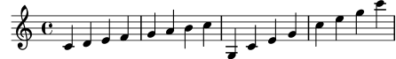
Le moyen le plus simple d’entrer des notes est d’utiliser le mode
d’octaves relatives, ou mode \relative. Dans ce mode, l’octave de
chaque note est déterminée automatiquement de façon à ce qu’elle soit le
plus proche possible de la note précédente, c’est-à-dire de façon à ce
que l’intervalle avec la note précédente soit au plus d’une quarte.
Commençons par saisir une partition très simple, à savoir une gamme.
\relative { c' d e f g a b c }![[image of music]](57/lily-afddc4de.png)
La note de départ est le do central, indiqué par c'.
Chacune des notes qui suivent est placée à l’octave la plus proche de la
note précédente – en d’autres termes, le premier ‘c’ est le do
central, entre la clef de sol et la clef de fa, puis est suivi par le
ré le plus proche, et ainsi de suite. On peut bien sûr créer
des mélodies avec de plus grands intervalles, toujours avec le mode
\relative :
\relative { d' f a g c b f d }![[image of music]](07/lily-5a8b9176.png)
La première note de cet exemple – le ‘d'’ avec une seule apostrophe – est le ré de l’octave commençant par le do central.
L’ajout (ou la suppression) d’apostrophes ou de virgules à la première note permet de modifier l’octave de départ :
\relative { e'' c a c }![[image of music]](90/lily-fac32e18.png)
Le mode d’octaves relatives peut être déroutant au début, mais c’est souvent la façon la plus économique de saisir les hauteurs en utilisant le clavier de l’ordinateur de façon classique. Détaillons dans un exemple le calcul des octaves relatives. En partant d’un si sur la troisième ligne de la clé de sol, un do, un ré ou un mi sans indication d’octave particulière seront placés juste au-dessus du si, c’est-à-dire au plus à une quarte ascendante du si, alors qu’un la, un sol ou un fa seront placés juste au-dessous du si, c’est-à-dire au plus à une quarte descendante du si.
\relative { b' c % c is 1 staff space up, so is the c above b d % d is 2 up or 5 down, so is the d above b e % e is 3 up or 4 down, so is the e above b a % a is 6 up or 1 down, so is the a below b g % g is 5 up or 2 down, so is the g below b f % f is 4 up or 3 down, so is the f below }![[image of music]](cd/lily-a103864e.png)
Notez que le calcul des octaves relatives ne tient pas compte des altérations des notes, dièse bémol ou bécarre.
Pour obtenir des intervalles supérieurs à une quarte, on peut ajouter des apostrophes ‘'’ – qui font chacune monter la hauteur d’une octave – ou des virgules ‘,’ – qui font chacune descendre la hauteur d’une octave – au nom de la note.
\relative { a' a, c' f, g g'' a,, f' }![[image of music]](38/lily-f0bb3690.png)
Pour déplacer une note deux octaves (ou davantage !) plus haut ou plus
bas, il suffit de mettre deux (ou davantage) ‘'’ ou ‘,’ –
attention cependant à bien mettre deux apostrophes '', et non un
guillemet ‘"’ ! C’est de cette même manière que l’on peut modifier
la valeur de départ de \relative c'.
| [ << Tutoriel ] | [Top][Contents][Index] | [ Bases de notation musicale >> ] |
| [ < Hauteurs ] | [ Up: Notation simple ] | [ Silences > ] |
Durées et rythme
Glossaire musicologique : ligature, durée, ronde, blanche, noire, note pointée.
La durée d’une note est indiquée par un nombre qui suit sa hauteur : ‘1’ pour une ronde, ‘2’ pour une blanche, ‘4’ pour une noire et ainsi de suite. Les crochets et liens (ou ligatures) sont ajoutés automatiquement.
Si aucune durée n’est indiquée pour une note, la dernière durée entrée est utilisée. En l’absence d’indication de durée, la première note est une noire.
\relative { a'1 a2 a4 a8 a a16 a a a a32 a a a a64 a a a a a a a a2 }![[image of music]](33/lily-3a12ed1c.png)
Une note pointée s’obtient en ajoutant un point (‘.’) à la valeur rythmique. Le point doit être précédé d’un nombre spécifiant la durée de base.
\relative { a' a a4. a8 a8. a16 a a8. a8 a4. }![[image of music]](14/lily-698a4662.png)
| [ << Tutoriel ] | [Top][Contents][Index] | [ Bases de notation musicale >> ] |
| [ < Durées et rythme ] | [ Up: Notation simple ] | [ Métrique > ] |
Silences
Glossaire musicologique : silence.
On saisit un silence tout comme une note, mais avec la lettre ‘r’ (pour rest).
\relative { a' r r2 r8 a r4 r4. r8 }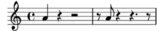
| [ << Tutoriel ] | [Top][Contents][Index] | [ Bases de notation musicale >> ] |
| [ < Silences ] | [ Up: Notation simple ] | [ Indication de tempo > ] |
Métrique
Glossaire musicologique : métrique.
La métrique, aussi appelée chiffre de mesure, peut
être définie à l’aide de la commande \time :
\relative { \time 3/4 a'4 a a \time 6/8 a4. a \time 4/4 a4 a a a }![[image of music]](72/lily-6cddc8e7.png)
| [ << Tutoriel ] | [Top][Contents][Index] | [ Bases de notation musicale >> ] |
| [ < Métrique ] | [ Up: Notation simple ] | [ Clefs > ] |
Indication de tempo
Glossaire musicologique : indication de tempo, métronome.
La commande \tempo permet de stipuler aussi bien le tempo
que le métronome :
\relative { \time 3/4 \tempo "Andante" a'4 a a \time 6/8 \tempo 4. = 96 a4. a \time 4/4 \tempo "Presto" 4 = 120 a4 a a a }![[image of music]](81/lily-66d09ee8.png)
| [ << Tutoriel ] | [Top][Contents][Index] | [ Bases de notation musicale >> ] |
| [ < Indication de tempo ] | [ Up: Notation simple ] | [ Tout ensemble > ] |
Clefs
Glossaire musicologique : clef.
La clef peut être définie à l’aide de la commande
\clef :
\relative { \clef treble c'1 \clef alto c1 \clef tenor c1 \clef bass c1 }![[image of music]](82/lily-9537b1c8.png)
| [ << Tutoriel ] | [Top][Contents][Index] | [ Bases de notation musicale >> ] |
| [ < Clefs ] | [ Up: Notation simple ] | [ Travail sur les fichiers d’entrée > ] |
Tout ensemble
Voici un bref exemple qui rassemble tous les éléments que nous avons déjà vus :
\relative { \clef bass \time 3/4 c,2 e8 c' g'2. f4 e d c4 c, r }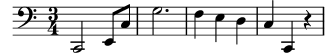
Voir aussi
Manuel de notation : Écriture des hauteurs de note, Écriture du rythme, Écriture des silences, Gravure du rythme, Gravure des hauteurs.
| [ << Tutoriel ] | [Top][Contents][Index] | [ Bases de notation musicale >> ] |
| [ < Tout ensemble ] | [ Up: Composition d’un fichier source ] | [ Gestion des erreurs > ] |
2.2.2 Travail sur les fichiers d’entrée
Le traitement des fichiers source de LilyPond est semblable à celui du
code de nombreux langages de programmation. La casse est prise en
compte, et les caractères considérés comme espaces ont généralement peu
d’importance. Les expressions sont délimitées par des accolades
{ }, et les commentaires par ‘%’ ou ‘%{ … }’ .
Si cette phrase vous paraît incompréhensible, ne vous en faites pas ! Expliquons tous ces termes :
- La version :
Tout fichier LilyPond devrait porter mention de la version. Cette
mention prend la forme d’une ligne décrivant le numéro de la version
utilisée lors de la confection du fichier en question, comme ici :
\version "2.26.0"
Il est d’usage de porter cette mention au tout début du fichier LilyPond.
Mentionner la version est important pour, au moins, les deux raisons suivantes : cela permet dans un premier temps de faciliter les opérations de mise à jour automatisée au fil de l’évolution de la syntaxe de LilyPond. Ensuite, cela met en évidence le minimum requis pour pouvoir compiler votre fichier.
Si vous ne le mentionnez pas, LilyPond vous rappellera à l’ordre durant la compilation.
- La casse : LilyPond est sensible à la casse, c’est à dire qu’une lettre capitale n’a pas la même valeur qu’une lettre minuscule. Les notes, par exemple, doivent être entrées en minuscule : ‘{ c d e }’ est un code valide, alors que ‘{ C D E }’ produira un message d’erreur.
- Les espaces multiples :
LilyPond ne tient pas compte du nombre d’espaces, de tabulations ou de
retours à la ligne.
{ c4 d e}a le même sens que
{ c4 d e }ou que
{ c4 d e }Bien sûr, ce dernier exemple est illisible. Une bonne habitude à prendre est d’indenter les blocs de code avec des doubles espaces :
{ c4 d e }L’espace est néanmoins nécessaire pour séparer nombre d’éléments syntaxiques les uns des autres. En d’autres termes, s’il est toujours possible d’ajouter des espaces, il faut prendre garde à ne pas trop en supprimer. En effet, l’absence d’une espace peut avoir des conséquences et entraîner une erreur ; aussi nous vous invitons à toujours insérer une espace avant et après chaque élément syntaxique, comme avant et après une accolade.
- Expressions musicales :
Tout morceau saisi dans LilyPond doit être placé entre
{ accolades }. Ces caractères indiquent à LilyPond que ce
bloc de texte représente une et une seule expression musicale, tout
comme les parenthèses
()en mathématiques. Pour éviter toute ambiguïté, il est préférable d’entourer ces accolades d’espaces ou de retours à la ligne.Un appel de fonction – ‘\relative { … }’ par exemple – compte également comme une seule expression musicale.
- Les commentaires :
Un commentaire est une indication pour tout lecteur humain d’un fichier
source de musique ; il est ignoré lors de la compilation et n’a donc
aucun effet sur la partition imprimée. On distingue deux types de
commentaires. Le commentaire de fin de ligne, introduit par le symbole
‘%’ : tout ce qui suit ce symbole sur la même ligne sera ignoré.
Par convention, un commentaire qui occupe une ligne entière se place
juste au-dessus de la ligne à laquelle il fait référence.
a4 a a a % ce commentaire fait référence aux deux si ci-dessous b2 b
Le bloc de commentaire peut occuper plusieurs lignes, voire toute une section : tout ce qui se trouve entre
%{et%}est ignoré. Les blocs de commentaires ne peuvent s’imbriquer, ce qui signifie que vous ne pouvez pas placer un commentaire-bloc à l’intérieur d’un autre commentaire-bloc. Si jamais vous essayez, vous verrez que la première occurrence de%}terminera « les deux commentaires-blocs ». Le fragment suivant met en évidence quelques usages possibles des commentaires :% voici les notes de "ah vous dirai-je maman" c4 c g' g a a g2 %{ Ces lignes et les notes qui suivent seront ignorées, car elles se trouvent dans un bloc de commentaire. f f e e d d c2 %}
| [ << Tutoriel ] | [Top][Contents][Index] | [ Bases de notation musicale >> ] |
| [ < Travail sur les fichiers d’entrée ] | [ Up: Tutoriel ] | [ Bien lire le manuel > ] |
2.3 Gestion des erreurs
Parfois, LilyPond ne produit pas le résultat escompté. Voici quelques pistes à suivre pour vous aider à éviter de telles déconvenues.
Résoudre les problèmes rencontrés avec LilyPond est une gageure pour ceux qui ne connaissent que des interfaces graphiques puisque rien l’empêche de créer du code erroné. En pareil cas, il suffit souvent d’un peu de logique pour être en mesure d’identifier les causes du problème et le résoudre simplement. Le chapitre Résolution de problèmes liste quelques directives à ce propos.
Il peut arriver qu’un message d’erreur ne soit pas suffisamment explicite pour solutionner le problème. Quelques cas des plus courants sont répertoriés au chapitre Quelques erreurs des plus courantes.
| [ << Tutoriel ] | [Top][Contents][Index] | [ Bases de notation musicale >> ] |
| [ < Gestion des erreurs ] | [ Up: Tutoriel ] | [ Matériel incomplet > ] |
2.4 Bien lire le manuel
Nous allons voir ici comment consulter la documentation le plus efficacement possible. Nous en profiterons pour vous présenter quelques particularités de la documentation en ligne.
| 2.4.1 Matériel incomplet | ||
| 2.4.2 Exemples cliquables | ||
| 2.4.3 Vue d’ensemble des manuels |
| [ << Tutoriel ] | [Top][Contents][Index] | [ Bases de notation musicale >> ] |
| [ < Bien lire le manuel ] | [ Up: Bien lire le manuel ] | [ Exemples cliquables > ] |
2.4.1 Matériel incomplet
Comme nous l’avons vu dans Travail sur les fichiers d’entrée, un code
LilyPond doit être encadré par des accolades { } ou bien par
\relative { … }. Cependant, dans la suite de ce
manuel, certains exemples courts ne feront pas apparaître ces signes.
Pour reproduire les exemples, vous pouvez copier et coller le code
affiché, mais à condition de le placer entre { et
} comme ici :
\relative c'' {
…collez ici votre exemple…
}
Rappelez-vous aussi que tout fichier LilyPond devrait contenir une
mention \version. La plupart des exemples de ce manuel étant des
extraits, non des fichiers indépendants, ils sont dépourvus de cette
ligne \version. C’est cependant une bonne habitude que de
toujours inclure cette mention de version dans vos fichiers.
| [ << Tutoriel ] | [Top][Contents][Index] | [ Bases de notation musicale >> ] |
| [ < Matériel incomplet ] | [ Up: Bien lire le manuel ] | [ Vue d’ensemble des manuels > ] |
2.4.2 Exemples cliquables
Beaucoup de gens apprennent à utiliser les programmes en les essayant et en bidouillant avec. C’est également possible avec LilyPond. Si vous cliquez sur une image dans la version HTML de ce manuel, vous verrez exactement le code LilyPond utilisé pour générer cette image. Essayez sur cette image :
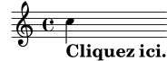
En copiant-collant le code à partir du commentaire « ly snippet » vers un fichier test, vous aurez un modèle de base pour faire vos expériences. Pour obtenir une gravure à l’identique, copiez tout le code à partir de « Start cut-&-pastable section ».
| [ << Tutoriel ] | [Top][Contents][Index] | [ Bases de notation musicale >> ] |
| [ < Exemples cliquables ] | [ Up: Bien lire le manuel ] | [ Bases de notation musicale > ] |
2.4.3 Vue d’ensemble des manuels
La documentation de LilyPond est relativement abondante. Ceci peut dérouter les nouveaux utilisateurs qui ne savent pas par quoi commencer ou bien sont tentés de faire l’impasse sur des passages importants.
Note : Nous vous invitons à ne pas faire l’impasse sur les chapitres importants de notre documentation, au risque de vous retrouver complètement perdu lorsque vous aborderez d’autres parties.
- Avant de vous lancer dans quoi que ce soit, lisez le Tutoriel contenu dans le manuel d’initiation ainsi que les Bases de notation musicale. Si vous y trouvez des termes que vous ne connaissez pas, n’hésitez pas à consulter le Glossaire.
- Avant de vous lancer dans la réalisation d’une partition complète, lisez le chapitre Concepts fondamentaux du manuel d’initiation. Vous pourrez alors vous reporter aux parties qui vous intéresseront dans le Manuel de notation.
- Avant de modifier les réglages par défaut, consultez le chapitre Retouche de partition du manuel d’initiation.
- Avant de vous lancer dans un projet d’envergure, lisez le chapitre Suggestions pour la saisie de fichiers LilyPond du manuel d’utilisation.
| [ << Tutoriel ] | [Top][Contents][Index] | [ Concepts fondamentaux >> ] |
| [ < Vue d’ensemble des manuels ] | [ Up: Top ] | [ Notation sur une seule portée > ] |
3 Bases de notation musicale
Suite au premier contact avec le Tutoriel, voyons comment créer de belles partitions utilisant une notation musicale courante.
| 3.1 Notation sur une seule portée | ||
| 3.2 Notes simultanées | ||
| 3.3 Chansons | ||
| 3.4 Dernières précisions |
| [ << Bases de notation musicale ] | [Top][Contents][Index] | [ Concepts fondamentaux >> ] |
| [ < Bases de notation musicale ] | [ Up: Bases de notation musicale ] | [ Barre et contrôle de mesure > ] |
3.1 Notation sur une seule portée
Cette section présente la notation courante dont on a besoin pour écrire une voix sur une portée.
| [ << Bases de notation musicale ] | [Top][Contents][Index] | [ Concepts fondamentaux >> ] |
| [ < Notation sur une seule portée ] | [ Up: Notation sur une seule portée ] | [ Barre de mesure > ] |
3.1.1 Barre et contrôle de mesure
| Barre de mesure | ||
| Contrôle de mesure |
| [ << Bases de notation musicale ] | [Top][Contents][Index] | [ Concepts fondamentaux >> ] |
| [ < Barre et contrôle de mesure ] | [ Up: Barre et contrôle de mesure ] | [ Contrôle de mesure > ] |
Barre de mesure
Les simples barres de mesure se placent automatiquement ; nul n’est
besoin de les saisir. D’autres types de barre de mesure sont accessibles
par la commande \bar, tels que \bar "||" pour une double
barre ou \bar "|." pour la barre finale. Pour une liste des
différents styles de barre de mesure, voir Barres de mesure.
\relative { g'1 e1 \bar "||" c2. c'4 \bar "|." }![[image of music]](b2/lily-fdd64512.png)
| [ << Bases de notation musicale ] | [Top][Contents][Index] | [ Concepts fondamentaux >> ] |
| [ < Barre de mesure ] | [ Up: Barre et contrôle de mesure ] | [ Hauteurs et armure > ] |
Contrôle de mesure
Les contrôles de barre de mesure – bar checks en anglais – ne sont à priori pas strictement nécessaires. Ils permettent cependant d’indiquer directement dans le code saisi – à l’aide d’une barre verticale ‘|’ – l’emplacement des barres de mesure. Grâce à ces contrôleurs, LilyPond sera capable de déterminer si le cumul de la durée que vous avez attribuée aux notes correspond bien à longueur de la mesure qui les contient. Les contrôles de mesure apportent aussi clarté et organisation à votre code.
\relative { g'1 | e1 | c2. c' | g4 c g e | c4 r r2 | }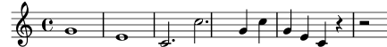
La compilation du code ci-dessus devrait vous afficher le message suivant en console :
Avertissement : échec du contrôle de mesure (bar check) à 1/2
g'1 | e1 | c2. c'
| g4 c g e | c4 r r2 |
Si la durée manquante est évitente au vu du rendu musical de cet exemple minimaliste, l’avertissement émis en console ne manquera pas de porter à votre attention l’absence du ‘4’ à la troisième mesure.
Voir aussi
Manuel de notation : Barres de mesure, Vérification des limites et numéros de mesure.
| [ << Bases de notation musicale ] | [Top][Contents][Index] | [ Concepts fondamentaux >> ] |
| [ < Contrôle de mesure ] | [ Up: Notation sur une seule portée ] | [ Altérations > ] |
3.1.2 Hauteurs et armure
Note : Si, comme nombre de nouveaux utilisateurs, vous avez du mal à appréhender la notion de tonalité et d’armure dans LilyPond, consultez la note à la fin de cette section.
| Altérations | ||
| Armures | ||
| Attention aux armures et aux hauteurs |
| [ << Bases de notation musicale ] | [Top][Contents][Index] | [ Concepts fondamentaux >> ] |
| [ < Hauteurs et armure ] | [ Up: Hauteurs et armure ] | [ Armures > ] |
Altérations
Glossaire musicologique : dièse, bémol, double dièse, double bémol, altération.
LilyPond identifie le nom d’une note par sa hauteur. Par
exemple, un c signifiera toujours do naturel, quelle
que soit la tonalité ou l’armure.
Dans de nombreuses langues, un nom de note est constitué d’un nom de base correspondant à son degré diatonique dans la gamme de do majeur ou mineur (par exemple ré) et d’un qualificatif (ou suffixe) indiquant l’altération de cette hauteur de base. Dans la notation par défaut, on obtient un dièse en ajoutant ‘is’ au nom de la note, et un bémol en ajoutant ‘es’. Comme vous pouvez vous y attendre, un double dièse ou double bémol s’obtiennent en ajoutant ‘isis’ ou ‘eses’. Cette syntaxe est dérivée de la convention de dénomination des notes dans les langues nordiques et germaniques, comme l’allemand ou le hollandais.
Cependant, si vous utilisez la commande \language "italiano" pour
entrer les noms de note français au lieu des noms hollandais, il faudra
ajouter un ‘d’ pour obtenir un dièse, et un ‘b’ pour un bémol.
Le double dièse et le double bémol s’obtiennent en ajoutant
respectivement ‘dd’ et ‘bb’. Pour en savoir plus sur les
autres langues disponibles, consultez Nom des notes dans d’autres langues.
\relative { cis''1 ees fisis, aeses }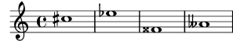
| [ << Bases de notation musicale ] | [Top][Contents][Index] | [ Concepts fondamentaux >> ] |
| [ < Altérations ] | [ Up: Hauteurs et armure ] | [ Attention aux armures et aux hauteurs > ] |
Armures
Glossaire musicologique : armure, majeur, mineur.
L’armure est déterminée par la commande \key, suivie d’une
hauteur puis de \major (majeur) ou \minor (mineur).
\relative { \key d \major d'4 fis a c | \bar "||" \key c \minor c,4 ees g b | }![[image of music]](a8/lily-3449e359.png)
| [ << Bases de notation musicale ] | [Top][Contents][Index] | [ Concepts fondamentaux >> ] |
| [ < Armures ] | [ Up: Hauteurs et armure ] | [ Liaisons > ] |
Attention aux armures et aux hauteurs
Glossaire musicologique : altération, armure, hauteur, bémol, bécarre, dièse, transposition, Noms de note.
LilyPond fait une distinction nette entre le contenu musical et sa
représentation sur papier. Un code tel que d4 e fis2 définit la
hauteur et la durée de notes ; il s’agit du contenu. L’armure, les
altérations « à la clef », fait partie de la représentation imprimée.
L’armure définit aussi des règles en matière de représentation des notes
imprimées. LilyPond comparera chaque hauteur saisie avec l’armure pour
déterminer s’il est besoin d’imprimer une altération accidentelle.
La commande \key détermine l’armure, ce qui affectera la
représentation imprimée, et ne modifiera en aucun cas la
hauteur assignée à une note telle qu’un c que vous aurez saisi.
Dans cet exemple,
\relative { \key d \major cis''4 d e fis }![[image of music]](a5/lily-8443995d.png)
aucune note n’a d’altération accidentelle, et pourtant vous devrez entrer le ‘is’ pour les notes ‘cis’ et ‘fis’.
Le code ‘b’ ne veut pas dire « Imprimez-moi un point noir sur la troisième ligne de la portée ». Cela signifie plutôt : « Ici se trouve une note dont la hauteur est un si naturel ». Avec une armure de la bémol majeur, ce ‘si’ est flanqué d’un bécarre accidentel :
\relative { \key aes \major aes'4 c b c }![[image of music]](0f/lily-38628f86.png)
Prenons un autre exemple : imaginez-vous devant un piano ; dès lors que vous voulez enfoncer l’une des touches noires, il vous faudra ajouter un ‘is’ ou un ‘es’ au nom de la note.
Ajouter explicitement toutes les altérations demande un peu plus d’effort dans la phase de saisie, mais cela facilite grandement la transposition. De plus, les altérations accidentelles peuvent ainsi être imprimées suivant plusieurs conventions. Pour connaître les différentes manières dont les altérations accidentelles peuvent être imprimées, consultez Altérations accidentelles automatiques.
Voir aussi
Manuel de notation : Nom des notes dans d’autres langues, Altérations, Altérations accidentelles automatiques, Armure.
| [ << Bases de notation musicale ] | [Top][Contents][Index] | [ Concepts fondamentaux >> ] |
| [ < Attention aux armures et aux hauteurs ] | [ Up: Notation sur une seule portée ] | [ Liaisons de prolongation > ] |
3.1.3 Liaisons
Sont regrpoupées dans cette section, en raison de leur apparence similaire, les liaisons de phrasé et les liaisons de tenue.
| Liaisons de prolongation | ||
| Liaisons d’articulation | ||
| Liaisons de phrasé | ||
| Attention aux types de liaison |
| [ << Bases de notation musicale ] | [Top][Contents][Index] | [ Concepts fondamentaux >> ] |
| [ < Liaisons ] | [ Up: Liaisons ] | [ Liaisons d’articulation > ] |
Liaisons de prolongation
Glossaire musicologique : liaison de tenue.
Pour créer une liaison de prolongation – parfois aussi appelée liaison de tenue –, on ajoute un tilde ‘~’ à la première note liée.
\relative { g'4~ g c2~ | c4~ c8 a~ a2 | }![[image of music]](78/lily-580b26d5.png)
Lorsque la hauteur ne change pas, ce qui est toujours le cas pour des liaisons de tenue, les hauteurs suivantes peuvent être omises auquel cas seules les durées successives seront mentionnées :
\relative { g'4~ 4 c2~ | 4~ 8 a~ 2 | }![[image of music]](bb/lily-1c638c8f.png)
Ce raccourci se révèle fort utile lors d’une succession de rythmes appliqués à une même hauteur. Notez bien qu’une espace entre une hauteur isolée et une durée isolée aura pour effet de ne produire qu’une seule note. Autrement dit, ‘c4 a 8 8’ sera interprété comme ‘c4 a8 a8’, non comme ‘c4 a4 a8 a8’ ; écrivez plutôt ‘c4 a4 8 8’.
| [ << Bases de notation musicale ] | [Top][Contents][Index] | [ Concepts fondamentaux >> ] |
| [ < Liaisons de prolongation ] | [ Up: Liaisons ] | [ Liaisons de phrasé > ] |
Liaisons d’articulation
Glossaire musicologique : liaison, phrasé.
Une liaison d’articulation ou legato peut englober plusieurs notes. Les notes de départ et d’arrivée sont suivies respectivement d’un signe ‘(’ et d’un signe ‘)’.
\relative { d''4( c16) cis( d e c cis d) e( d4) }![[image of music]](13/lily-1b87b9d4.png)
| [ << Bases de notation musicale ] | [Top][Contents][Index] | [ Concepts fondamentaux >> ] |
| [ < Liaisons d’articulation ] | [ Up: Liaisons ] | [ Attention aux types de liaison > ] |
Liaisons de phrasé
De plus longues liaisons, dites de phrasé, sont délimitées par \(
et \). Il est possible d’avoir en même temps des legatos et des
phrasés.
\relative { g'4\( g8( a) b( c) b4\) }![[image of music]](49/lily-ac61a4c6.png)
| [ << Bases de notation musicale ] | [Top][Contents][Index] | [ Concepts fondamentaux >> ] |
| [ < Liaisons de phrasé ] | [ Up: Liaisons ] | [ Articulations et nuances > ] |
Attention aux types de liaison
Glossaire musicologique : articulation, liaison, liaison de tenue.
Une liaison d’articulation ou de phrasé ressemble à une liaison de prolongation, mais n’a pas la même signification. Alors qu’une liaison de prolongation ne peut relier que deux notes de même hauteur, le legato indique une articulation de plusieurs notes, éventuellement en grand nombre. Les liaisons de tenue peuvent être enchâssées dans un legato ou un phrasé.
\relative { c''4(~ c8 d~ 4 e) }![[image of music]](86/lily-2660565d.png)
Voir aussi
Manuel de notation : Liaisons de prolongation, Liaisons d’articulation, Liaisons de phrasé.
| [ << Bases de notation musicale ] | [Top][Contents][Index] | [ Concepts fondamentaux >> ] |
| [ < Attention aux types de liaison ] | [ Up: Notation sur une seule portée ] | [ Articulation > ] |
3.1.4 Articulations et nuances
Articulations et nuances s’indiquent par ajout de code spécifique à la suite de la note à laquelle elles s’appliquent.
| Articulation | ||
| Doigté | ||
| Nuance |
| [ << Bases de notation musicale ] | [Top][Contents][Index] | [ Concepts fondamentaux >> ] |
| [ < Articulations et nuances ] | [ Up: Articulations et nuances ] | [ Doigté > ] |
Articulation
Glossaire musicologique : articulation.
Des articulations peuvent être ajoutées à une note, au moyen d’un tiret (‘-’) suivi d’un caractère. Voici une liste des articulations les plus courantes.
-^un marcato (une pointe vers le haut) --un tenuto (un court trait horizontal) ->un accent (une pointe vers la droite) -.un point de staccato -_un portato (un trait de tenuto additionné d’un point de staccato)
Un recensement exhaustif se trouve à la rubrique Liste des signes d’articulation.
\relative { c''4-^ c-- c4-> c-. c2-_ }![[image of music]](76/lily-2d871c24.png)
| [ << Bases de notation musicale ] | [Top][Contents][Index] | [ Concepts fondamentaux >> ] |
| [ < Articulation ] | [ Up: Articulations et nuances ] | [ Nuance > ] |
Doigté
Glossaire musicologique : doigté.
De même, des indications de doigté peuvent être ajoutées à une note en utilisant un tiret (‘-’) et le chiffre à écrire :
\relative { c''4-3 e-5 b-2 a-1 }![[image of music]](15/lily-9c631223.png)
Articulations et doigtés sont habituellement placés automatiquement, mais vous pouvez spécifier leur positionnement en utilisant ‘^’ (en haut) ou ‘_’ (en bas). Vous pouvez aussi utiliser plusieurs articulations sur la même note. Dans la plupart des cas, cependant, il est bon de laisser LilyPond déterminer l’emplacement de l’articulation.
\relative { c''4_-^1 d^. f^4_2-> e^-_+ }![[image of music]](c9/lily-b330b4a5.png)
| [ << Bases de notation musicale ] | [Top][Contents][Index] | [ Concepts fondamentaux >> ] |
| [ < Doigté ] | [ Up: Articulations et nuances ] | [ Ajout de texte > ] |
Nuance
Glossaire musicologique : nuances, crescendo, decrescendo.
On obtient un signe de nuance en ajoutant à la note les
lettres du signe, précédées d’un anti-slash \ :
\relative { c''2\ff c\mf c\p c\pp }![[image of music]](4b/lily-7850c9ed.png)
Crescendos et decrescendos débutent avec les
commandes \< et \>. Ils se terminent soit par une
nuance d’arrivée, par exemple \f, soit par la commande
\! :
\relative { c''2\< c\ff\> c c\! }![[image of music]](85/lily-676949be.png)
Voir aussi
Manuel de notation : Articulations et ornements, Doigtés, Nuances.
| [ << Bases de notation musicale ] | [Top][Contents][Index] | [ Concepts fondamentaux >> ] |
| [ < Nuance ] | [ Up: Notation sur une seule portée ] | [ Barres de ligature automatiques et manuelles > ] |
3.1.5 Ajout de texte
On peut ajouter du texte à une partition :
\relative { c''2^"espr" a'_"legato" }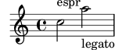
Pour mettre en forme du texte, on utilise la commande
\markup.1
\relative { c''2^\markup { \bold espr } a2_\markup { \dynamic f \italic \small { 2nd } \hspace #0.1 \dynamic p } }![[image of music]](dd/lily-f7cc7a98.png)
Voir aussi
Manuel de notation : Ajout de texte.
| [ << Bases de notation musicale ] | [Top][Contents][Index] | [ Concepts fondamentaux >> ] |
| [ < Ajout de texte ] | [ Up: Notation sur une seule portée ] | [ Commandes rythmiques avancées > ] |
3.1.6 Barres de ligature automatiques et manuelles
Glossaire musicologique : ligature.
Toutes les barres de ligature sont dessinées automatiquement :
\relative { a'8 ais d ees r d c16 b a8 }![[image of music]](c3/lily-f5369027.png)
Lorsqu’on n’aime pas la manière dont les notes sont automatiquement groupées, il est possible de les ligaturer manuellement, en marquant la première note à attacher d’un crochet ouvrant ‘[’ et la dernière d’un crochet fermant ‘]’. Notez bien que le ‘[’ vient après la première note ligaturée.
\relative { a'8[ ais] d[ ees r d] c16 b a8 }![[image of music]](2c/lily-88e7d366.png)
Pour désactiver les barres de ligature automatiques pour des passages
entiers, utilisez la commande \autoBeamOff, et utilisez
\autoBeamOn pour les réactiver.
\relative { \autoBeamOff a'8 c b4 d8. c16 b4 | \autoBeamOn a8 c b4 d8. c16 b4 | }![[image of music]](1b/lily-bc157bd7.png)
Voir aussi
Manuel de notation : Barres de ligature automatiques, Barres de ligature manuelles.
| [ << Bases de notation musicale ] | [Top][Contents][Index] | [ Concepts fondamentaux >> ] |
| [ < Barres de ligature automatiques et manuelles ] | [ Up: Notation sur une seule portée ] | [ Mesure incomplète > ] |
3.1.7 Commandes rythmiques avancées
Pour compléter le principe de durée simple (un nombre, avec ou sans point, ajouté à une hauteur), intéressons-nous à d’autres concepts afin de couvrir plus d’aspects de la rythmique.
| Mesure incomplète | ||
| N-olet | ||
| Note d’ornement |
| [ << Bases de notation musicale ] | [Top][Contents][Index] | [ Concepts fondamentaux >> ] |
| [ < Commandes rythmiques avancées ] | [ Up: Commandes rythmiques avancées ] | [ N-olet > ] |
Mesure incomplète
Glossaire musicologique : anacrouse.
On crée une levée (ou anacrouse) avec la commande \partial,
suivie d’une durée : ‘\partial 4’ produit une levée d’une
noire et ‘\partial 8’ d’une croche.
\relative { \partial 8 f''8 | c2 d | }![[image of music]](22/lily-7141ef1d.png)
| [ << Bases de notation musicale ] | [Top][Contents][Index] | [ Concepts fondamentaux >> ] |
| [ < Mesure incomplète ] | [ Up: Commandes rythmiques avancées ] | [ Note d’ornement > ] |
N-olet
Glossaire musicologique : valeur d’une note, triolet.
Les n-olets sont créés avec la commande \tuplet, qui
prend deux arguments : une fraction et une expression musicale. La
fraction représente le nombre de notes du n-olet à inscrire dans la durée
normalement attribuée à un certain nombre de notes de même valeur. Dans
le cas de triolets, par exemple, trois notes recouvrent la même durée
que deux ; un triolet portera donc une fraction de 3/2.
\relative { \tuplet 3/2 { f''8 g a } \tuplet 3/2 { c8 r c } \tuplet 3/2 { f,8 g16[ a g a] } \tuplet 3/2 { d4 a8 } }![[image of music]](8d/lily-62792834.png)
| [ << Bases de notation musicale ] | [Top][Contents][Index] | [ Concepts fondamentaux >> ] |
| [ < N-olet ] | [ Up: Commandes rythmiques avancées ] | [ Notes simultanées > ] |
Note d’ornement
Glossaire musicologique : ornements, acciaccature, appoggiature.
Des notes d’ornement s’obtiennent en appliquant la commande
\grace, \appoggiatura (note d’ornement liée à la note
principale) ou \acciaccatura (note d’ornement barrée et liée à la
note principale) à une expression musicale :
\relative { c''2 \grace { a32 b } c2 | c2 \appoggiatura b16 c2 | c2 \acciaccatura b16 c2 | }![[image of music]](1c/lily-5a2d6dd9.png)
Voir aussi
Manuel de notation : Notes d’ornement, N-olets, Levées.
| [ << Bases de notation musicale ] | [Top][Contents][Index] | [ Concepts fondamentaux >> ] |
| [ < Note d’ornement ] | [ Up: Bases de notation musicale ] | [ Les expressions musicales en clair > ] |
3.2 Notes simultanées
Cette section traite de situations où l’on a plus d’une note à la fois : plusieurs instruments, plusieurs voix ou portées pour un même instrument (le piano, par exemple), et les accords.
En théorie musicale, la polyphonie désigne une musique constituée de plusieurs voix ; dans LilyPond, ce terme désigne les situations où il y a plus d’une voix sur une même portée.
| 3.2.1 Les expressions musicales en clair | ||
| 3.2.2 Plusieurs portées | ||
| 3.2.3 Regroupements de portées | ||
| 3.2.4 Combinaison de notes en accords | ||
| 3.2.5 Polyphonie sur une portée |
| [ << Bases de notation musicale ] | [Top][Contents][Index] | [ Concepts fondamentaux >> ] |
| [ < Notes simultanées ] | [ Up: Notes simultanées ] | [ Analogie avec les expressions mathématiques > ] |
3.2.1 Les expressions musicales en clair
Dans les fichiers source LilyPond, la musique est représentée par ce qu’on appelle des expressions musicales. En soi, une seule note peut constituer une expression musicale :
a'4![[image of music]](89/lily-9110be04.png)
Mettre un groupe de notes entre accolades crée une nouvelle expression musicale, appelée expression musicale composée. En voici un exemple avec deux notes :
\relative { a'4 g4 }![[image of music]](44/lily-348b91cf.png)
La mise entre accolades d’une séquence d’expressions musicales – des notes par exemple – signifie qu’elles doivent être jouées successivement, les unes après les autres. Le résultat est une expression, qui peut elle-même être regroupée séquentiellement avec d’autres expressions. Ici, l’expression de l’exemple précédent est combinée à deux notes :
\relative { { a'4 g } f g }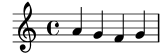
| Analogie avec les expressions mathématiques | ||
| Expressions musicales simultanées – plusieurs portées | ||
| Expressions musicales simultanées – une seule portée |
Analogie avec les expressions mathématiques
Ce mécanisme est similaire aux formules mathématiques : une grosse formule est créée en assemblant plusieurs petites formules. De telles formules sont appelées expressions, elles ont une définition récursive, de telle sorte que vous pouvez fabriquer des expressions arbitrairement longues et complexes. Par exemple :
1 1 + 2 (1 + 2) * 3 ((1 + 2) * 3) / (4 * 5)
Ceci est une suite d’expressions, où chacune est contenue dans la suivante. Les expressions les plus simples sont les nombres, et de plus grandes expressions sont produites en combinant des expressions avec des opérateurs – comme +, * et / – et des parenthèses. Tout comme les expressions mathématiques, les expressions musicales peuvent être imbriquées avec une profondeur arbitraire, ce qui est nécessaire pour des partitions complexes comme de la musique polyphonique.
Expressions musicales simultanées – plusieurs portées
Glossaire musicologique : polyphonie.
Cette technique est utile pour de la musique polyphonique.
Pour entrer une musique avec plusieurs voix ou plusieurs portées, nous
pouvons aussi combiner en parallèle les expressions : deux
voix qui doivent être jouées en même temps, sont entrées comme une
combinaison simultanée de deux expressions. Une expression musicale
« simultanée » est formée en entourant les expressions entre <<
et >>. Dans l’exemple suivant, trois expressions (contenant
chacune deux notes distinctes) sont combinées simultanément.
<< \relative { a'2 g } \relative { f'2 e } \relative { d'2 b } >>![[image of music]](c4/lily-89a38849.png)
Notez que nous avons ici indenté chaque niveau du fichier d’entrée avec un nombre d’espaces différent. LilyPond se moque – ou presque – de l’espace qu’il peut y avoir ou non au début d’une ligne, mais un code bien indenté est bien plus lisible par des humains.
Note : La hauteur de chaque note saisie est relative à la précédente ;
seule la première première note verra sa hauteur déterminée relativement
au au ‘c’ (une octave sous le do médium) de la commande
\relative de départ.
Expressions musicales simultanées – une seule portée
Pour déterminer le nombre de portées, LilyPond regarde le début de la première expression. Si c’est une seule note, une seule portée est produite ; si c’est une expression simultanée, plusieurs portées sont produites. Nous avons dans l’exemple ci-dessous une expression complexe ; dans la mesure où elle débute par une note seule, elle sera produite sur une unique portée.
\relative { c''2 <<c e>> | << { e2 f } { c <<b d>> } >> | }![[image of music]](af/lily-614580b6.png)
| [ << Bases de notation musicale ] | [Top][Contents][Index] | [ Concepts fondamentaux >> ] |
| [ < Expressions musicales simultanées – une seule portée ] | [ Up: Notes simultanées ] | [ Regroupements de portées > ] |
3.2.2 Plusieurs portées
Comme nous l’avons vu dans Les expressions musicales en clair, un fichier d’entrée LilyPond est fait d’expressions musicales. Si la partition commence par plusieurs expressions simultanées, LilyPond créera plusieurs portées. Cependant, il est plus facile de prévoir le nombre de portées si on les crée explicitement, ce que nous allons voir.
Pour créer plus d’une portée, on ajoute \new Staff au début de
chaque partie de la musique constituant une portée. Ces éléments
Staff sont ensuite combinés en parallèle avec << et
>>, comme ci-dessous.
<< \new Staff { \clef treble c''4 } \new Staff { \clef bass c4 } >>![[image of music]](cb/lily-ae851a45.png)
La commande \new introduit un contexte de notation. Un
contexte de notation est un environnement dans lequel les événements
musicaux – comme les notes ou les commandes \clef – sont
interprétés. Pour des pièces simples, ces contextes sont créés
automatiquement. Pour des pièces plus complexes, il est préférable de
spécifier explicitement les contextes, afin de s’assurer que chaque
fragment aura sa propre portée.
Il existe différents types de contextes. Les contextes Score
(partition), Staff (portée) et Voice (voix) gèrent la
notation de la mélodie, alors que Lyrics gère les paroles et
ChordNames imprime des noms d’accord.
En terme de syntaxe, ajouter \new devant une expression
musicale crée une plus grande expression musicale. En reprenant la
comparaison précédente, cela ressemble au signe moins en
mathématiques. La formule (4+5) est une expression, donc
-(4+5) constitue une plus grande expression.
Les chiffres de métrique indiqués sur une portée affectent toutes les autres portées. En revanche l’armure d’une portée n’affecte pas les autres portées. Ces caractéristiques par défaut se justifient par le fait que l’utilisation d’instruments transpositeurs est bien plus fréquente que la musique polyrythmique.
<< \new Staff { \clef treble \key d \major \time 3/4 c''4 } \new Staff { \clef bass c4 } >>![[image of music]](8e/lily-c8f11f58.png)
| [ << Bases de notation musicale ] | [Top][Contents][Index] | [ Concepts fondamentaux >> ] |
| [ < Plusieurs portées ] | [ Up: Notes simultanées ] | [ Combinaison de notes en accords > ] |
3.2.3 Regroupements de portées
Glossaire musicologique : accolade, portée, système.
La musique pour piano s’écrit sur deux portées reliées par une
accolade. La gravure de ce type de portée est semblable à
l’exemple de musique polyphonique de Plusieurs portées, mais
maintenant cette expression entière est interprétée dans un contexte
PianoStaff :
\new PianoStaff << \new Staff … \new Staff … >>
Voici un bref exemple.
\new PianoStaff << \new Staff \relative { \time 2/4 c''4 e | g g, | } \new Staff \relative { \clef bass c4 c' | e c | } >>![[image of music]](79/lily-d4aee0ae.png)
Vous pouvez générer d’autres formes de regroupement, avec
\new GrandStaff pour une partition d’orchestre, ou
\new ChoirStaff qui sied particulièrement aux partitions
chorales. Chacun de ces regroupements constitue un contexte à part
entière, avec ses particularités, tant au niveau du signe qui regroupe
les portées au sein d’un système qu’au niveau de l’étendue
des barres de mesure.
Voir aussi
Manuel de notation : Instruments utilisant des portées multiples, Gravure des portées.
| [ << Bases de notation musicale ] | [Top][Contents][Index] | [ Concepts fondamentaux >> ] |
| [ < Regroupements de portées ] | [ Up: Notes simultanées ] | [ Polyphonie sur une portée > ] |
3.2.4 Combinaison de notes en accords
Glossaire musicologique : accord.
Nous avons vu précédemment comment combiner des notes simultanément :
en les encadrant par des chevrons doubles << et >>. Pour
produire des accords simples, c’est-à-dire une superposition de notes
de même durée, on encadre les hauteurs de notes par des chevrons simples
< et >, et on écrit la durée juste après.
\relative { r4 <c'' e g> <c f a>2 }![[image of music]](90/lily-610bc6f9.png)
Beaucoup d’éléments de notation que l’on peut attacher à une note simple, comme une liaison, un crochet indiquant un début ou une fin de lien, un signe d’articulation, peuvent être également attachés à un accord : il faut ajouter ces indications après les hauteurs et la durée, donc à l’extérieur des chevrons.
\relative { r4 <c'' e g>~ <c f a>2 | <c e g>8[ <c f a> <c e g> <c f a>] <c e g>8\>[ <c f a> q q]\! | r4 <c e g>8.\p q16( q4-. <c f a>) | }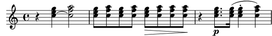
Cet exemple illustre par ailleurs une fonctionnalité fort intéressante : un accord peut se répéter à l’aide du symbole ‘q’. Et ceci est opérationnel même lorsque des notes isolées viennent s’insérer dans la séquence.
\relative { c'8 <e g>8 q q g, q q q }![[image of music]](21/lily-8c610730.png)
Voir aussi
Manuel de notation : Notes en accords.
| [ << Bases de notation musicale ] | [Top][Contents][Index] | [ Concepts fondamentaux >> ] |
| [ < Combinaison de notes en accords ] | [ Up: Notes simultanées ] | [ Chansons > ] |
3.2.5 Polyphonie sur une portée
Bien que LilyPond gère la musique polyphonique sans difficulté, cela fait appel à des concepts que nous n’avons pas encore abordés. C’est la raison pour laquelle nous ne nous étendrons pas tout de suite sur ce sujet et préférons vous inciter à consulter les chapitres dédiés à l’étude de ces concepts.
Voir aussi
Manuel d’initiation : Les voix contiennent la musique.
Manuel de notation : Notes simultanées.
| [ << Bases de notation musicale ] | [Top][Contents][Index] | [ Concepts fondamentaux >> ] |
| [ < Polyphonie sur une portée ] | [ Up: Bases de notation musicale ] | [ Écriture de chants simples > ] |
3.3 Chansons
Cette section présente l’écriture vocale et les partitions de variété.
| 3.3.1 Écriture de chants simples | ||
| 3.3.2 Alignement des paroles sur une mélodie | ||
| 3.3.3 Paroles pour plusieurs portées |
| [ << Bases de notation musicale ] | [Top][Contents][Index] | [ Concepts fondamentaux >> ] |
| [ < Chansons ] | [ Up: Chansons ] | [ Alignement des paroles sur une mélodie > ] |
3.3.1 Écriture de chants simples
Glossaire musicologique : lyrics.
Prenons une mélodie toute simple, la comptine Girls and boys come out to play.
\relative { \key g \major \time 6/8 d''4 b8 c4 a8 | d4 b8 g4 }![[image of music]](e9/lily-7384468c.png)
Des paroles peuvent être associées à ces notes, en les
combinant avec la commande \addlyrics. On entre les paroles en
séparant chaque syllabe par une espace :
<< \relative { \key g \major \time 6/8 d''4 b8 c4 a8 | d4 b8 g4 } \addlyrics { Girls and boys come out to play, } >>![[image of music]](de/lily-a2b07153.png)
Notez les doubles chevrons << … >> encadrant toute la
pièce ; ils indiquent simplement que la musique et les paroles se
produisent en même temps.
| [ << Bases de notation musicale ] | [Top][Contents][Index] | [ Concepts fondamentaux >> ] |
| [ < Écriture de chants simples ] | [ Up: Chansons ] | [ Paroles pour plusieurs portées > ] |
3.3.2 Alignement des paroles sur une mélodie
Glossaire musicologique : mélisme, ligne d’extension.
La deuxième ligne de la comptine précédente est The moon doth shine as bright as day. Ajoutons-la au code.
<< \relative { \key g \major \time 6/8 d''4 b8 c4 a8 | d4 b8 g4 g8 | a4 b8 c b a | d4 b8 g4. | } \addlyrics { Girls and boys come out to play, The moon doth shine as bright as day; } >>![[image of music]](b1/lily-3cb061cd.png)
Remarquez comme les paroles ajoutées ne s’alignent pas bien avec les notes. Le mot shine devrait être chanté sur deux notes au lieu d’une. On appelle ceci un mélisme : il s’agit d’une seule syllabe chantée sur plus d’une note. Il existe plusieurs façons d’étaler une syllabe sur plusieurs notes, la plus simple étant de lier les notes du mélisme. Pour les détails, consultez Liaisons.
<< \relative { \key g \major \time 6/8 d''4 b8 c4 a8 | d4 b8 g4 g8 | a4 b8 c( b) a | d4 b8 g4. | } \addlyrics { Girls and boys come out to play, The moon doth shine as bright as day; } >>![[image of music]](d8/lily-e7df2761.png)
Les paroles sont maintenant correctement alignées, mais les liens de croche automatiques ne conviennent pas pour les notes au-dessus de shine as. On peut les corriger en ajoutant des liens de croche manuels ; pour ceci consultez Barres de ligature automatiques et manuelles.
<< \relative { \key g \major \time 6/8 d''4 b8 c4 a8 | d4 b8 g4 g8 | a4 b8 c([ b]) a | d4 b8 g4. | } \addlyrics { Girls and boys come out to play, The moon doth shine as bright as day; } >>![[image of music]](e4/lily-ea02f2b5.png)
Au lieu d’utiliser une liaison, on peut indiquer le mélisme dans les paroles en insérant un caractère souligné ‘_’ pour chaque note du mélisme sauf la première.
<< \relative { \key g \major \time 6/8 d''4 b8 c4 a8 | d4 b8 g4 g8 | a4 b8 c[ b] a | d4 b8 g4. | } \addlyrics { Girls and boys come out to play, The moon doth shine _ as bright as day; } >>![[image of music]](b1/lily-d7ddaa70.png)
Si une syllabe s’étend sur un grand nombre de notes ou une note très
longue, on représente souvent le mélisme par un trait de
prolongation, qu’on entre avec double caractère souligné __. Il
est important de séparer ce double souligné des syllabes environnantes.
L’exemple suivant montre les trois premières mesures de la plainte de
Didon, extraite de Didon et Énée de Purcell.
<< \relative { \key g \minor \time 3/2 g'2 a bes | bes2( a) b2 | c4.( bes8 a4. g8 fis4.) g8 | fis1 } \addlyrics { When I am laid, am laid __ in earth, } >>![[image of music]](3a/lily-6abaad4f.png)
Aucun exemple jusqu’à présent n’a utilisé de mots de plus d’une syllabe.
Dans des paroles, de tels mots sont écrits en syllabes séparées par des
traits d’union. Avec LilyPond, on utilise deux tirets (--) pour
produire un trait d’union centré entre deux syllabes. Il est important
de séparer ce double tiret des syllabes environnantes.
L’exemple suivant montre tout ce que nous avons vu jusqu’à maintenant sur l’alignement de paroles à une mélodie.
<< \relative { \key g \major \time 3/4 \partial 4 d'4 | g4 g a8( b) | g4 g b8( c) | d4 d e | c2 } \addlyrics { A -- way in a __ man -- ger, no __ crib for a bed, __ } >>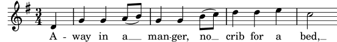
Avec certaines paroles, en particulier en italien, il se produit la situation inverse : il peut y avoir plusieurs syllabes sur une seule note. On réalise ceci avec LilyPond grâce à un caractère souligné ‘_’ sans espace entre les syllabes, ou alors en groupant les syllabes avec des guillemets. L’exemple suivant est extrait de l’air de Figaro Largo al factotum, dans Le barbier de Séville de Rossini, où la syllabe al est chantée sur la même note que go.
<< \relative { \clef bass \key c \major \time 6/8 c'4.~ 8 d b | c8([ d]) b c d b | c8 } \addlyrics { Lar -- go_al fac -- to -- tum del -- la cit -- tà } >>![[image of music]](cc/lily-e7345c33.png)
Voir aussi
Manuel de notation : Musique vocale.
| [ << Bases de notation musicale ] | [Top][Contents][Index] | [ Concepts fondamentaux >> ] |
| [ < Alignement des paroles sur une mélodie ] | [ Up: Chansons ] | [ Dernières précisions > ] |
3.3.3 Paroles pour plusieurs portées
La méthode simple d’ajout de paroles avec \addlyrics peut être
également utilisée pour placer des paroles sous plusieurs portées.
L’exemple suivant est extrait de Judas Macchabée de Händel.
<< \relative { \key f \major \time 6/8 \partial 8 c''8 | c8([ bes]) a a([ g]) f | f'4. b, | c4.~ 4 } \addlyrics { Let flee -- cy flocks the hills a -- dorn, __ } \relative { \key f \major \time 6/8 \partial 8 r8 | r4. r4 c'8 | a'8([ g]) f f([ e]) d | e8([ d]) c bes'4 } \addlyrics { Let flee -- cy flocks the hills a -- dorn, } >>![[image of music]](ee/lily-f9ae663e.png)
Pour produire des partitions plus complexes ou plus longues que cet exemple simple, il est vivement conseillé de séparer la structure de la partition des notes et paroles, grâce à des variables. Ceci sera détaillé plus loin dans Organisation du code source avec des variables.
Voir aussi
Manuel de notation : Musique vocale.
3.4 Dernières précisions
L’ultime section de ce tutoriel montre comment ajouter une touche finale à des morceaux simples, et constitue une introduction au reste du manuel.
| 3.4.1 Organisation du code source avec des variables | ||
| 3.4.2 Ajout de titres | ||
| 3.4.3 Noms de note absolus | ||
| 3.4.4 Après le tutoriel |
| [ << Bases de notation musicale ] | [Top][Contents][Index] | [ Concepts fondamentaux >> ] |
| [ < Dernières précisions ] | [ Up: Dernières précisions ] | [ Ajout de titres > ] |
3.4.1 Organisation du code source avec des variables
Lorsque l’on combine tous les éléments étudiés précédemment pour écrire des partitions plus longues, les expressions musicales prennent de l’ampleur et, dans le cas des pièces polyphoniques, deviennent profondément imbriquées, jusqu’au point où il devient difficile de se repérer dans le fichier source. Cet inconvénient peut être résolu par l’utilisation de variables.
En utilisant des variables, parfois appelées identifiants ou macros, on peut scinder des expressions musicales complexes en des expressions plus simples. Une variable se définit comme suit :
musiqueToto = { … }
Le contenu de l’expression musicale musiqueToto pourra être
utilisé plus loin en faisant précéder son nom d’un anti-slash,
c’est-à-dire \musiqueToto, tout comme n’importe quelle commande
LilyPond. Toute variable doit être définie avant son
utilisation dans une autre expression musicale.
violin = \new Staff { \relative { a'4 b c b } } cello = \new Staff { \relative { \clef bass e2 d } } { << \violin \cello >> }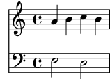
Par convention, un nom de variable ne comporte que des caractères alphabétiques non accentués, aucun nombre ni tiret. Pour de plus amples informations, voir Structure de fichier.
On peut utiliser une variable déjà définie autant de fois que l’on veut, y compris dans la définition d’une nouvelle variable ; par exemple, cela peut servir à saisir un motif qu’une seule fois, même s’il se répète un grand nombre de fois dans la pièce.
tripletA = \tuplet 3/2 { c,8 e g } barA = { \tripletA \tripletA \tripletA \tripletA } \relative c'' { \barA \barA }![[image of music]](5a/lily-5b80973e.png)
Il est possible d’utiliser des variables de types variés. Par exemple,
maLargeur = 60 % un nombre transmis à une variable \paper
% (unité = millimètre)
monNom = "Wendy" % une chaîne transmise à un markup
aCinqPapier = \paper { #(set-paper-size "a5") }
En fonction de son contenu, un identifiant peut être utilisé à différents endroits. L’exemple suivant utilise les variables définies ci-dessus.
\paper {
\aFivePaper
line-width = \maLargeur
}
{
c4^\monNom
}
| [ << Bases de notation musicale ] | [Top][Contents][Index] | [ Concepts fondamentaux >> ] |
| [ < Organisation du code source avec des variables ] | [ Up: Dernières précisions ] | [ Noms de note absolus > ] |
3.4.2 Ajout de titres
On indique les informations bibliographiques – nom du morceau, du
compositeur, numéro d’opus… – dans un bloc à part, le bloc
d’en-tête \header, qui existe indépendamment de l’expression
musicale principale. Le bloc \header est habituellement placé
en début de fichier, après le numéro de version.
\version "2.26.0"
\header {
title = "Symphonie"
composer = "Moi"
opus = "Op. 9"
}
{
… la musique …
}
Quand LilyPond traite le fichier, le titre et le compositeur sont imprimés au début de la partition. Vous trouverez plus d’informations sur les titres à la section Création de titres et entête ou pied de page.
| [ << Bases de notation musicale ] | [Top][Contents][Index] | [ Concepts fondamentaux >> ] |
| [ < Ajout de titres ] | [ Up: Dernières précisions ] | [ Après le tutoriel > ] |
3.4.3 Noms de note absolus
Jusqu’ici nous avons utilisé le mode \relative pour définir les
hauteurs de notes. Si c’est souvent le moyen le plus simple de saisir
la musique au clavier, il existe une autre façon de procéder : le mode
de hauteurs absolues.
Si vous omettez la commande \relative, LilyPond considérera
toutes les hauteurs comme des hauteurs absolues : un ‘c'’ désigne
toujours le do central, un ‘b’ se situe une seconde en dessous
du do central, et un ‘g,’ est situé sur la première ligne de
la portée en clé de fa.
{ \clef bass c'4 b g, g, | g,4 f, f c' | }![[image of music]](7e/lily-7d8ea0e9.png)
Voici une gamme sur quatre octaves :
Il faut beaucoup d’apostrophes pour écrire de la musique dans un registre aigu, comme le montre cet extrait de Mozart.
{ \key a \major \time 6/8 cis''8. d''16 cis''8 e''4 e''8 | b'8. cis''16 b'8 d''4 d''8 | }![[image of music]](92/lily-d90fc61e.png)
Les indications d’octaves communes peuvent ne s’indiquer qu’une seule
fois, en faisant suivre la commande \fixed d’une hauteur de
référence :
\fixed c'' { \key a \major \time 6/8 cis8. d16 cis8 e4 e8 | b,8. cis16 b,8 d4 d8 | }![[image of music]](00/lily-f8cb751b.png)
Avec un \relative, le même exemple ne requiert pas d’indication
d’octave puisque la mélodie progresse sur des intervalles ne dépassant
pas la tierce.
\relative { \key a \major \time 6/8 cis''8. d16 cis8 e4 e8 | b8. cis16 b8 d4 d8 | }![[image of music]](ac/lily-049ba55d.png)
Si d’aventure vous faites une erreur d’octaviation (‘'’ ou
‘,’), le mode \relative la mettra en évidence : toutes les
notes suivantes seront placées à la mauvaise octave. En mode de hauteurs
absolues, une erreur isolée ne serait pas autant visible, et serait donc
plus difficile à dénicher.
Cependant, le mode de hauteurs absolues reste utile pour les musiques où les intervalles sont étendus, et plus encore pour les fichiers LilyPond créés par des programmes. Recopier des fragments en hauteurs absolues permet d’en préserver les octaves.
La musique peut être agencée de manière plutôt complexe. Dans le cas
d’une imbrication de commandes \relative, chacune des sections
est indépendante de l’autre :
\relative { c'4 \relative { f'' g } c }![[image of music]](ee/lily-a6cb7588.png)
Des hauteurs absolues peuvent tout à fait se trouver au sein d’un bloc
en mode relatif, dès lors qu’une instruction \fixed c exclut
explicitement de la musique relative le fragment en question :
\relative { c'4 \fixed c { f'' g'' } c | c4 \fixed c'' { f g } c }![[image of music]](97/lily-e8cf713e.png)
| [ << Bases de notation musicale ] | [Top][Contents][Index] | [ Concepts fondamentaux >> ] |
| [ < Noms de note absolus ] | [ Up: Dernières précisions ] | [ Concepts fondamentaux > ] |
3.4.4 Après le tutoriel
Après avoir parcouru ce tutoriel, vous devriez essayer d’écrire un morceau ou deux. Commencez par copier l’un des modèles types et ajoutez-y des notes – consultez les Modèles. Si vous voulez employer une notation que vous n’avez pas trouvée dans le tutoriel, consultez le manuel de notation, en commençant par la Notation musicale générale. Si vous désirez écrire pour un ensemble instrumental non couvert par les modèles, lisez la section Extension des modèles.
Après avoir écrit quelques pièces courtes, lisez les chapitres 3 à 5 du manuel d’initiation. Rien ne s’oppose à ce que vous consultiez dès à présent ces chapitres, bien sûr ! Néanmoins, le reste du manuel d’initiation part du principe que vous avez déjà bien assimilé la syntaxe de base de LilyPond. Vous pouvez toujours survoler ces chapitres 3 à 5, et y revenir plus tard après avoir acquis de l’expérience.
Dans ce tutoriel comme dans le reste de ce manuel, se trouve à chaque section un paragraphe Voir aussi contenant des références vers d’autres sections : il est conseillé de ne pas les suivre en première lecture ; lorsque vous aurez lu l’ensemble du manuel d’initiation, vous pourrez en relisant certaines sections suivre ces références pour approfondir certains aspects.
Si vous ne l’avez pas encore fait, lisez Vue d’ensemble des manuels. Les sources de documentation et d’information sur LilyPond sont vastes, il est normal pour un débutant de ne pas savoir où chercher ; si vous passez quelques minutes à lire attentivement cette section, vous vous épargnerez certainement la frustration causée par des heures de recherches infructueuses.
| [ << Bases de notation musicale ] | [Top][Contents][Index] | [ Retouche de partition >> ] |
| [ < Après le tutoriel ] | [ Up: Top ] | [ Organisation des fichiers LilyPond > ] |
4 Concepts fondamentaux
Le tutoriel nous a montré comment obtenir une édition de toute beauté à partir d’un simple fichier texte. Nous nous intéresserons dans cette partie aux concepts et techniques qui permettent d’obtenir des partitions complexes de même qualité.
| 4.1 Organisation des fichiers LilyPond | ||
| 4.2 Les voix contiennent la musique | ||
| 4.3 Contextes et graveurs | ||
| 4.4 Extension des modèles |
| [ << Concepts fondamentaux ] | [Top][Contents][Index] | [ Retouche de partition >> ] |
| [ < Concepts fondamentaux ] | [ Up: Concepts fondamentaux ] | [ Introduction à la structure de fichier LilyPond > ] |
4.1 Organisation des fichiers LilyPond
La mise en forme des fichiers d’entrée de LilyPond est vraiment peu astreignante, afin d’offrir assez de souplesse aux utilisateurs expérimentés pour qu’ils puissent organiser leurs fichiers comme ils l’entendent. Cependant, les nouveaux utilisateurs peuvent parfois se perdre en raison de cette souplesse. Cette section présente sommairement l’organisation du code LilyPond, en privilégiant la simplicité au détriment de certains détails. Vous trouverez une description plus complète dans Structure de fichier.
4.1.1 Introduction à la structure de fichier LilyPond
Un fichier d’entrée LilyPond ressemble à :
\version "2.26.0"
\header { }
\score {
… expression musicale composite … % c'est là qu'est la musique !
\layout { }
\midi { }
}
Il existe de nombreuses variantes à ce schéma simpliste, mais cet exemple est un préambule à notre propos.
Jusqu’à présent, les exemples que nous avons pu voir ne faisaient pas
appel à la commande \score. En fait, LilyPond ajoute
automatiquement les commandes nécessaires au traitement d’un code
simpliste. LilyPond considère
\relative {
c''4 a b c
}
comme un raccourci de
\book {
\score {
\new Staff {
\new Voice {
\relative {
c''4 a b c
}
}
}
\layout { }
}
}
En d’autres termes, si le code n’est constitué que d’une expression musicale simple, LilyPond interprétera le fichier tout comme si cette expression était incluse dans les commandes de notre premier exemple.
Attention : de nombreux exemples, dans la documentation de
LilyPond, ne font pas apparaître les commandes \new Staff ou
\new Voice, qui sont créées implicitement. Ce qui n’est pas
primordial pour des exemples simples le devient dès que la situation se
complexifie un tant soit peu. Le fait de ne pas déclarer explicitement
un contexte peut alors amener à des résultats quelque peu surprenants,
comme la création d’une portée supplémentaire et indésirable. La manière
de créer explicitement des contextes est traitée plus en détails au
chapitre Contextes et graveurs.
Note : Dès lors que votre musique dépasse quelques lignes, nous vous engageons fortement à créer explicitement les voix et portées.
Mais revenons à notre premier exemple, et penchons-nous tout d’abord sur
la commande \score.
Un bloc \score doit contenir une et une seule expression
musicale, exprimée immédiatement à la suite de la commande
\score. Rappelez-vous que cette expression peut être n’importe
quoi, d’une note isolée à un gigantesque
{
\new StaffGroup <<
… collez ici la partition complète d'un opéra de Wagner…
>>
}
Dès lors que tout cela est entre accolades : { … },
LilyPond le considère comme une et une seule expression musicale.
Comme nous l’avons vu précédemment, un bloc \score peut contenir
d’autres informations :
\score {
{ c'4 a b c' }
\header { }
\layout { }
\midi { }
}
Gardez à l’esprit que ces trois commandes – \header,
\layout et \midi – sont spécifiques : à l’inverse de
toutes les commandes débutant par une oblique inversée \
(backslash en anglais), elles ne constituent pas des
expressions musicales et ne peuvent pas faire partie d’expressions
musicales. Elles peuvent de ce fait être placées à l’intérieur du bloc
\score, ou bien à l’extérieur. En réalité, ces commandes sont la
plupart du temps indépendantes du bloc \score – par exemple, la
commande \header intervient souvent avant le bloc \score,
comme le montre l’exemple ci-dessus.
Les deux autres commandes – \layout et \midi – que nous
n’avons pas détaillées pour l’instant, auront respectivement pour effet,
lorsqu’elles interviennent, de produire une sortie imprimable et un
fichier MIDI. Nous nous y intéressons plus particulièrement dans le
manuel de notation, aux chapitres Mise en forme de la partition et Génération de fichiers MIDI.
Vous pouvez tout à fait mentionner plusieurs blocs \score. Ils
seront traités comme autant de partitions indépendantes qui seront
regroupées dans un seul fichier résultant. La commande \book
(recueil ou ouvrage) n’est pas obligatoire – elle sera
créée implicitement. Néanmoins, le recours à la commande \book
vous permettra d’obtenir des fichiers résultants distincts à partir d’un
même fichier source .ly – par exemple un fichier par pupitre.
En résumé :
- Dès que LilyPond rencontre un bloc
\book, il crée un fichier distinct (.pdf par exemple). Dans le cas où il n’est pas mentionné explicitement, LilyPond regroupera l’intégralité du code dans un bloc\book. - Tout bloc
\scoreinclus dans un bloc\bookconstitue un fragment de musique, par exemple un mouvement d’une symphonie. -
Tout bloc
\layoutaffecte le bloc\scoreou\bookau sein duquel il intervient : si c’est à l’intérieur d’un bloc\score, seul celui-ci en sera affecté. Dans le cas où le bloc\layoutse trouve à l’extérieur du bloc\score, que le bloc\booksoit explicite ou non, il affectera chacun des\scorecompris dans ce\book.
Pour plus de détail à ce sujet, consultez Plusieurs partitions dans un même ouvrage.
Un autre raccourci pratique est la possibilité de définir des variables, également appelées « identifiants » – see Organisation du code source avec des variables à ce sujet. Dans tous les modèles, vous trouverez :
melodie = \relative {
c'4 a b c
}
\score {
{ \melodie }
}
Lorsque LilyPond examinera ce fichier, il va prendre la valeur de la
variable melodie, c’est-à-dire tout ce qui suit le signe
=, et l’insérer partout où il rencontrera \melodie. Vous
êtes libre de choisir comment dénommer vos variables2 ; ce peut
être melodie, global, maindroitepiano, ou
laTeteAToto, tant qu’il ne s’agit pas de « mot réservé ». Pour
plus de détails, voir Économie de saisie grâce aux identificateurs et fonctions.
Voir aussi
Pour une description complète du format des fichiers d’entrée, voir Structure de fichier.
4.1.2 La partition est une (unique) expression musicale composée
Dans la section précédente, Introduction à la structure de fichier LilyPond, nous avons vu l’organisation générale des fichiers d’entrée
de LilyPond. Mais c’est comme si nous avions éludé la question
essentielle : comment diable peut-on savoir quoi mettre après
\score ?
En fait, nous ne l’avons pas éludée du tout : le grand mystère est tout simplement qu’il n’y a pas de mystère. Allez, expliquons-le en une ligne :
Un bloc
\scoredoit contenir une et une seule expression musicale.
Peut-être serait-il judicieux de relire la section Les expressions musicales en clair, dans laquelle vous avez appris à construire de
grandes expressions musicales petit bout par petit bout – nous avons vu
les notes, puis les accords, etc. Maintenant, nous allons partir d’une
grande expression musicale, et remonter la pente. Pour rester simple,
nous nous contenterons d’un chanteur accompagné au piano. On n’a pas
besoin d’une partition d’orchestre – c’est à dire des portées
regroupées en StaffGroup – donc laissons cela de côté. Par
contre, nous voulons bien une voix et une double portée de piano.
\score {
{
<<
\new Staff = "chanteur" <<
>>
\new PianoStaff = "piano" <<
>>
>>
}
\layout { }
}
Nous avons ici attribué des noms aux portées – « chanteur » et « piano ». Bien que cela ne soit pas primordial, c’est une habitude qu’il est bon d’adopter dès le départ : vous saurez au premier coup d’œil à quoi correspond chaque portée.
Vous vous souvenez que nous avons recours à << et >> en
lieu et place de { … } pour gérer des musiques
simultanées. Et, pour le coup, on aimerait vraiment que la partie
vocale et l’accompagnement soient imprimés ensemble… Bien que
faire appel à << … >> ne soit pas réellement nécessaire
pour la portée du chanteur, dans la mesure où elle ne contient qu’une
seule expression musicale, nous vous recommandons de prendre l’habitude
de l’encadrer ainsi plutôt que par de simples accolades – une portée
peut en effet contenir plusieurs voix, ou bien des notes et des
paroles. Dans la mesure où nous y ajouterons des paroles, les chevrons
sont donc obligatoires. Si vous avez oublié comment ajouter des paroles
à l’aide de la commande \addlyrics, relisez le chapitre
Écriture de chants simples.
\score { << \new Staff = "singer" << \new Voice = "vocal" { c'1 } \addlyrics { And } >> \new PianoStaff = "piano" << \new Staff = "upper" { c'1 } \new Staff = "lower" { c'1 } >> >> \layout { } }![[image of music]](64/lily-d37a0c35.png)
On y voit nettement plus clair maintenant. Nous voici donc avec la
partie du chanteur, qui contient un ensemble Voice, ce qui dans
LilyPond correspond à une voix, au sens de voix d’une polyphonie plutôt
que de voix chantée – ce pourrait être une partie de violon par exemple
–, et des paroles. Nous avons également une partie de piano, qui
contient deux portées : une pour la main droite, une autre pour la main
gauche. Il nous faudra d’ailleurs ajouter une clef de fa à cette
dernière.
À ce point, on pourrait commencer à ajouter les notes. Dans les
accolades qui suivent \new Voice = "chant", on pourrait commencer
à écrire
\relative {
r4 d''8\noBeam g, c4 r
}
Mais si l’on procédait ainsi, la section \score deviendrait vite
assez touffue, et très rapidement on ne s’y retrouverait plus. C’est
pourquoi on utilisera plutôt des variables, ou identifiants, comme nous
l’avons vu plus haut. Pour s’assurer que le contenu de la variable
words soit bien interprété comme des paroles, nous le préfixons
d’un \lyricmode. Sans cette précaution, LilyPond tenterait
d’interpréter le contenu de cette variable comme des notes, ce qui
déclencherait immanquablement des erreurs. LilyPond dispose de
différents types de données – voir Modes
de saisie pour plus de détails.
Avec quelques notes de plus et une clef de fa, nous pourrions avoir :
melody = \relative { r4 d''8\noBeam g, c4 r } words = \lyricmode { And God said, } upper = \relative { <g' d g,>2~ <g c, g> } lower = \relative { b,2 e2 } \score { << \new Staff = "singer" << \new Voice = "vocal" { \melody } \addlyrics { \words } >> \new PianoStaff = "piano" << \new Staff = "upper" { \upper } \new Staff = "lower" { \clef "bass" \lower } >> >> \layout { } }![[image of music]](59/lily-77660e69.png)
Quand on écrit ou que l’on lit une section \score, mieux vaut y
aller lentement et soigneusement. Commencez par le niveau le plus large,
puis travaillez sur chaque niveau plus détaillé. À ce propos, une
indentation stricte et propre est vraiment d’une aide précieuse :
assurez-vous que chaque élément d’un même niveau a le même décalage
horizontal dans votre éditeur de texte !
Voir aussi
Manuel de notation : Structure d’une partition.
4.1.3 Expressions musicales imbriquées
Déclarer toutes les portées dès le départ n’est pas une obligation ; elles peuvent intervenir temporairement n’importe où dans la partition. Ceci est tout à fait indiqué pour créer des sections ossia. L’exemple suivant illustre la manière de créer temporairement une nouvelle portée, l’espace de trois notes :
\new Staff { \relative { r4 g'8 g c4 c8 e | << { c4 c } \new Staff {d4 c } >> r2 | } }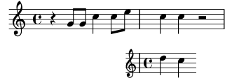
Vous noterez la taille de la clef, identique à celle que l’on trouve lors d’un changement en cours de ligne – légèrement plus petite que celle imprimée en tête de ligne.
Une section ossia se placera au dessus de la portée en procédant ainsi :
\new Staff = "main" { \relative { r4 g'8 g c4 c8 e | << { c4 c } \new Staff \with { alignAboveContext = "main" } { d4 c } >> r2 | } }![[image of music]](42/lily-3f74615b.png)
Cet exemple recourt à \with, que nous verrons en détail plus
avant. C’est un moyen de modifier le comportement par défaut d’une
portée individuelle. Nous indiquons ici que la nouvelle portée doit se
placer au-dessus de la portée « main » plutôt qu’en dessous, ce qui est
le comportement par défaut.
Voir aussi
Les portées d’ossia apparaissent souvent sans clef ni métrique, et dans une taille plus petite. Ceci requiert des commandes dont nous n’avons pas encore parlé. Voir Taille des objets et Portées d’ossia.
4.1.4 Structuration de la saisie des notes
La saisie d’une note dans LilyPond est constituée d’une hauteur suivie d’une durée et, accessoirement, d’un ou plusieurs « postévénements ». Les postévénements (post-event en anglais) sont, dans le cadre de LilyPond, des éléments tels que des articulations, des doigtés, des numéros de corde, des liaisons et du texte d’explication.
La hauteur peut être définie explicitement à l’aide de la langue de saisie spécifiée comme indiqué dans Nom des notes dans d’autres langues. La hauteur peut être omise, auquel cas la hauteur en cours sera identique à celle de la note précédente dans le fichier source – voir Durées. Notez bien que ni ‘r’ ni ‘s’ (un saut, voir Silences invisibles) ne sont des hauteurs.
La durée comporte un nombre et accessoirement des points. Lorsque la durée n’est pas explicitement mentionnée, la durée de la note en cours sera identique à celle de la note qui précède, qu’il s’agisse d’une note, d’un accord, d’un silence visible ou d’un saut – voir Durées.
Les postévénements suivent la note à laquelle ils s’attachent. Prenons par exemple un do croche avec un doigté à 1 et un tenuto, entame une liaison, soit prolongé et soit affublé d’une annotation. Voici comment procéder :
{ c'8-1--(~^\markup{"annotation textuelle"} c' d') }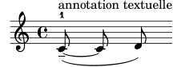
Voir aussi
Manuel d’initiation : Liaisons, Articulations et nuances, Ajout de texte.
Manuel de notation : Hauteurs, Rythme, Signes d’interprétation.
4.1.5 Non-imbrication des crochets et liaisons
Nous avons déjà rencontré plusieurs types de crochet au fil de nos fichiers LilyPond. Ils obéissent à des règles différentes qui peuvent paraître déroutantes de prime abord. Avant d’examiner ces règles, voici une liste des différents types de crochet :
Type de crochet Fonction { … }Délimite un segment de musique séquentielle < … >Délimite les notes d’un accord << … >>Délimite des sections simultanées ( … )Marque le début et la fin d’une liaison \( … \)Marque le début et la fin d’une liaison de phrasé [ … ]Marque le début et la fin d’une ligature manuelle
D’autres constructions permettent d’obtenir des lignes regroupant ou en
travers des notes : les liaisons de prolongation (indiquées par un tilde
‘~’), les marques de n-olet avec \tuplet x/y { … },
ou encore les notes d’ornement avec \grace{ … }.
En dehors de LilyPond, l’imbrication correcte de différents types de
crochets exige un strict respect des conventions, telles que
<< [ { ( … ) } ] >>, où les marques de fermeture
interviennent obligatoirement dans l’ordre exactement inverse à celles
d’ouverture. Ceci doit être rigoureusement respecté pour les
trois types de crochets utilisés pour délimiter comme l’indique
le tableau ci-dessus. Une telle rigueur dans l’imbrication n’est
pas requise pour les types de crochets dont la fonction est de
marquer, selon le tableau ci-dessus, lorsqu’il sont utilisés en
combinaison avec des liaisons de prolongation ou des n-olets. En effet,
il ne s’agit pas de crochets ayant pour fonction de borner quelque
chose ; ils agissent plutôt comme marquant le début de quelque chose et
sa fin.
Ainsi, et bien que ce ne soit pas très musical, une liaison de phrasé peut débuter avant l’insertion d’une ligature manuelle et s’arrêter avant la fin de la ligature :
\relative { g'8\( a b[ c b\) a] g4 }![[image of music]](47/lily-ce5ce968.png)
De manière générale, différents types de crochets, notamment s’ils indiquent des n-olets, liaisons de prolongation ou notes d’ornement, peuvent se mélanger entre eux. L’exemple suivant montre une ligature qui se prolonge sur un triolet (ligne 1), puis une liaison qui se prolonge sur un triolet (ligne 2) et enfin une ligature et une liaison qui s’étendent sur un triolet, lui-même lié à un quintolet agrémenté d’une liaison de phrasé se poursuivant (lignes 3 et 4).
\relative { r16[ g' \tuplet 3/2 { r16 e'8] } g,16( a \tuplet 3/2 { b16 d) e } g,8[( a \tuplet 3/2 { b8 d) e~] } | \tuplet 5/4 { e32\( a, b d e } a4.\) }![[image of music]](d2/lily-fecc8d1a.png)
| [ << Concepts fondamentaux ] | [Top][Contents][Index] | [ Retouche de partition >> ] |
| [ < Non-imbrication des crochets et liaisons ] | [ Up: Concepts fondamentaux ] | [ J’entends des voix > ] |
4.2 Les voix contiennent la musique
Les chanteurs utilisent leur voix pour chanter ; il en va de même pour LilyPond. En fait, la musique de chacun des instruments d’une partition est contenue dans des voix (Voices en anglais), qui se trouvent être le concept fondamental de LilyPond.
| 4.2.1 J’entends des voix | ||
| 4.2.2 Instanciation explicite des voix | ||
| 4.2.3 Voix et paroles |
| [ << Concepts fondamentaux ] | [Top][Contents][Index] | [ Retouche de partition >> ] |
| [ < Les voix contiennent la musique ] | [ Up: Les voix contiennent la musique ] | [ Instanciation explicite des voix > ] |
4.2.1 J’entends des voix
Dans une partition gérée par LilyPond, le niveau le plus bas, ou bien élémentaire ou fondamental, est le contexte de voix – Voice context en anglais. Pour d’autres logiciels, on fait tantôt référence à la notion de « couche » ou de « calque ».
En réalité, le contexte de voix est le seul à pouvoir contenir de la
musique. Si un contexte Voice n’est pas déclaré explicitement, il
sera créé automatiquement comme nous l’avons vu au début de ce chapitre.
Certains instruments, le hautbois par exemple, ne peuvent jouer qu’une
seule note à la fois. Nous n’aurons besoin, pour ces instruments
monodiques, que d’une seule voix. Les instruments qui, comme le piano,
peuvent émettre plusieurs sons en même temps sont polyphoniques et
nécessitent de recourir à plusieurs voix pour gérer efficacement
l’alignement des notes et rythmes différents.
Si une voix unique peut tout à fait contenir plusieurs notes dans un accord, à partir de quand aurons-nous vraiment besoin de plusieurs voix ? Considérons déjà ces quatre accords :
\relative { \key g \major <d' g>4 <d fis> <d a'> <d g> }![[image of music]](57/lily-34e301d7.png)
Nous exprimons ici chacun des accords par l’utilisation de chevrons
gauche et droite simples, < … >, puisque nous n’avons
besoin que d’une seule voix. Supposons maintenant que le fa dièse soit
une croche, suivie d’un sol croche – une note de passage vers le la ?
Nous avons alors deux notes qui débutent au même moment, mais dont la
durée est différente : un ré noire et un fa dièse croche. Comment coder
cela ? Dans la mesure où toutes les notes d’un accord doivent avoir la
même durée, nous ne pouvons pas écrire un accord. Nous ne pouvons pas
non plus écrire deux notes séparées, puisqu’elles débutent en même
temps. Nous avons alors besoin de deux voix.
Voyons comment cela se pratique selon la grammaire de LilyPond.
Le plus sûr moyen de saisir un fragment où plusieurs voix cohabitent sur
la même portée, consiste à saisir chacune des voix séquentiellement
(avec { … }), puis à les combiner en simultané à l’aide
de doubles chevrons gauche/droite, << … >>. Les fragments
devront être séparés par une double oblique inversée, \\, pour
les affecter à des voix séparées. Dans le cas contraire, les notes
seraient toutes affectées à une même voix, ce qui pourrait générer des
erreurs. Cette manière de procéder est tout à fait indiquée dans le cas
d’une pièce homophonique ne comportant que quelques courts passages de
polyphonie.
Voici comment éclater les accords en deux voix, avec la note de passage et la liaison :
\relative { \key g \major % Voice = "1" Voice = "2" << { g'4 fis8( g) a4 g } \\ { d4 d d d } >> }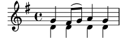
Notez que les hampes de la seconde voix sont dirigées vers le bas.
Autre exemple :
\key d \minor % Voice = "1" Voice = "2" << { r4 g g4. a8 } \\ { d,2 d4 g } >> | << { bes4 bes c bes } \\ { g4 g g8( a) g4 } >> | << { a2. r4 } \\ { fis2. r4 } >> |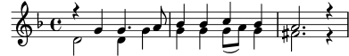
Le recours à une construction << \\ >> particulière à chaque
mesure n’est pas nécessaire. Bien qu’on y gagne en lisibilité si chaque
mesure ne contient que quelques notes, il est plus judicieux de
carrément séparer chaque voix :
<< \key d \minor \relative { % Voice = "1" r4 g' g4. a8 | bes4 bes c bes | a2. r4 | } \\ \relative { % Voice = "2" d'2 d4 g | g4 g g8( a) g4 | fis2. r4 | } >>![[image of music]](dc/lily-7f2b266b.png)
Cet exemple ne comporte que deux voix, mais il peut être étendu pour
traiter trois voix ou plus en ajoutant autant de séparateurs \\
que de besoin.
Les contextes Voice créés implicitement par << \\ >>
portent les noms "1", "2", etc. Les premiers contextes
définissent les voix extrêmes, la plus haute au contexte
"1", la plus basse au contexte "2". Les voix
intermédiaires seront affectées aux contextes "3" et "4".
Pour chacun de ces contextes, le positionnement et l’orientation des
liaisons, hampes, nuances, etc. est définie automatiquement.
\new Staff \relative { % Main voice c'16 d e f % Voice = "1" Voice = "2" Voice = "3" << { g4 f e } \\ { r8 e4 d c8~ } >> | << { d2 e } \\ { c8 b16 a b8 g~ 2 } \\ { s4 b c2 } >> | }![[image of music]](61/lily-7cceab5f.png)
Notez l’utilisation d’un s4 pour insérer un silence invisible, et
ainsi décaler le début (visible) de la voix "3".
Les voix peuvent se saisir dans un ordre différent, comme par exemple du
haut vers le bas, auquel cas leurs numéros respectifs seront spécifiés
dès avant la construction << … >> à l’aide de la commande
\voices comme ici :
\new Staff \relative { % Main voice c'16 d e f % Voice = "1" Voice = "2" << { g4 f e } \\ { r8 e4 d c8~ } >> | \voices 1,3,2 % Voice = "1" Voice = "3" Voice = "2" << { d2 e } \\ { s4 b c2 } \\ { c8 b16 a b8 g~ 2 } >> | }![[image of music]](36/lily-8e1e0d07.png)
Ces voix sont séparées de la voix principale, laquelle contient les
notes en dehors de la construction << … >> – que nous
appellerons construction simultanée. Les liaisons, de prolongation
ou non, ne peuvent relier des notes que si elles appartiennent à la même
voix ; elles ne peuvent ni pénétrer une construction simultanée, ni en
sortir. Inversement, les voix parallèles issues de constructions
simultanées apparaissant sur une même portée appartiennent à la même
voix. Les autres propriétés liées au contexte de voix s’appliquent tout
au long des constructions simultanées. Reprenons notre exemple, en
affectant une couleur et une allure différentes aux notes de chacune des
voix. Vous noterez qu’un changement apporté à une voix ne se propage pas
aux autres, et qu’il se reporte jusqu’au bout, et que la voix aux
triangles bleus comporte une liaison de prolongation entre deux
constructions.
\new Staff \relative { % Main voice c'16 d e f << % Bar 1 { \voiceOneStyle g4 f e } \\ { \voiceTwoStyle r8 e4 d c8~ } >> | << % Bar 2 % Voice 1 continues { d2 e } \\ % Voice 2 continues { c8 b16 a b8 g~ 2 } \\ { \voiceThreeStyle s4 b c2 } >> | }![[image of music]](ef/lily-714f656e.png)
Les commandes \voiceXXXStyle sont principalement dédiées à
une utilisation pédagogique, comme l’est ce document. Elles modifient la
couleur des hampes et ligatures et le style de tête des notes pour
permettre une meilleure distinction entre les différentes voix. La
première voix comporte des têtes en losange rouge, la deuxième en
triangle bleu, la troisième en cercle barré vert, la quatrième (non
utilisée ici) en croix magenta ; \voiceNeutralStyle (non utilisé
ici) revient au style par défaut. Nous verrons plus tard comment créer
de telles commandes. Voir Visibilité et couleur des objets et
Utilisation de variables dans les retouches.
La polyphonie ne modifie en rien la relation entre les notes au sein
d’un bloc \relative. Chaque note est calculée par rapport à celle
qui la précède, ou bien par rapport à la première note de l’accord qui
précède. Ainsi, dans
\relative c' { noteA << <noteB noteC> \\ noteD >> noteE }
-
noteBest relative ànoteA; -
noteCest relative ànoteB, pas ànoteA; -
noteDest relative ànoteB, pas ànoteAninoteC; -
noteEest relative ànoteD, pas ànoteA.
Une méthode alternative, et qui peut simplifier les choses si les notes
des différentes voix sont espacées, consiste à placer une commande
\relative au début de chacune des voix :
\relative { noteA … }
<<
\relative { <noteB noteC> … }
\\
\relative { noteD … }
>>
\relative { noteE … }
Pour finir, analysons le principe d’utilisation des voix dans une pièce complexe. Nous allons nous concentrer sur les deux premières mesures du second des Deux nocturnes, opus 32 de Chopin. Cet exemple nous servira à plusieurs reprises, y compris dans le chapitre suivant, pour illustrer certaines techniques de notation. Aussi, ne prêtez pas trop d’attention à ce qui pour l’instant pourrait vous paraître vraiment mystérieux dans le code, et intéressons-nous uniquement à ce qui concerne la musique et les voix – ce qui est plus compliqué sera décortiqué plus tard.
![[image of music]](36/lily-3258c92c.png)
La direction des hampes sert souvent à indiquer dans la continuité deux lignes mélodiques simultanées. Ici, les hampes des notes les plus hautes vont vers le haut, et celles des notes plus basses vers le bas. C’est une première indication de ce que nous avons eu recours à plus d’une voix.
Mais le réel besoin de multiples voix se fait sentir dès lors que plusieurs notes qui débutent en même temps ont des durées différentes. C’est évident au troisième temps de la première mesure : le la bémol est une noire pointée, le fa une noire, et le ré bémol une blanche. On ne peut les grouper dans un accord, puisque toutes les notes composant un accord doivent être de même durée. On ne peut non plus les écrire séquentiellement, puisqu’elles débutent toutes au même instant. Ce fragment de mesure nécessite trois voix, et une bonne pratique voudrait que l’intégralité de la mesure soit sur trois voix, comme ci-dessous où nous avons une allure et une couleur différentes aux notes de chacune d’entre elles. Une fois de plus, nous reviendrons plus tard sur le code que vous ne comprendriez pas.
![[image of music]](12/lily-af4127c7.png)
Essayons à présent de coder cette musique en partant de zéro. Comme nous
le verrons, certaines difficultés vont se présenter. Partons de ce que
nous avons appris : utilisons la construction << \\ >> pour
saisir la première mesure dans trois voix :
\new Staff \relative { \key aes \major << { c''2 aes4. bes8 } \\ { <ees, c>2 des } \\ { aes'2 f4 fes } >> | <c ees aes c>1 | }![[image of music]](f1/lily-ea16ef4b.png)
La direction des hampes est attribuée automatiquement : les voix
impaires portent des hampes vers le haut, les voix paires des hampes
vers le bas. Les hampes des voix 1 et 2 sont orientées comme il faut
mais celles de la voix 3 devraient, dans le cas qui nous occupe, aller
vers le bas. Nous pouvons corriger cela en sautant la voix 3 et en
plaçant la musique dans la voix 4. Ceci pourrait s’obtenir à l’aide d’un
\\ supplémentaire, mais nous utiliserons plutôt la commande
\voices qui, par ailleurs, nous permettrait de saisir les voix
dans un autre ordre selon notre convenance :
\new Staff \relative { \key aes \major \voices 1,2,4 % Omit voice three << % Voice one { c''2 aes4. bes8 } \\ % Voice two { <ees, c>2 des } \\ % Voice four { aes'2 f4 fes } >> | <c ees aes c>1 | }![[image of music]](90/lily-c62af17f.png)
Cette manipulation nous permet de régler la direction des hampes, mais
le positionnement horizontal des notes n’est pas satisfaisant. LilyPond
décale les notes des voix intermédiaires lorsque leur tête ou leur hampe
viendrait à chevaucher celles des voix extrêmes. Bien entendu, ce n’est
pas souhaitable dans le cas d’une partition pour piano. Dans d’autres
situations, les décalages que LilyPond applique peuvent ne pas éviter
certaines collisions. LilyPond met à notre disposition plusieurs moyens
d’ajuster le positionnement horizontal des notes. Nous ne sommes pas
encore tout à fait prêts pour voir comment corriger cela, aussi nous
examinerons ce problème dans un autre chapitre (voir la propriété
force-hshift dans Correction des collisions d’objets).
Note : Paroles et objets étendus (liaisons, soufflets, etc.) ne peuvent passer d’une voix à l’autre.
Voir aussi
Manuel de notation : Plusieurs voix.
| [ << Concepts fondamentaux ] | [Top][Contents][Index] | [ Retouche de partition >> ] |
| [ < J’entends des voix ] | [ Up: Les voix contiennent la musique ] | [ Voix et paroles > ] |
4.2.2 Instanciation explicite des voix
Les contextes de voix (Voice) peuvent être déclarés manuellement
dans un bloc << >> pour créer de la musique polyphonique, en
utilisant \voiceOne jusqu’à \voiceFour pour assigner des
directions de hampes et un déplacement horizontal pour chaque partie.
Cette méthode apporte de la clarté pour des partitions plus importantes
puisqu’elle permet de bien séparer les voix et de leur affecter un nom
plus parlant.
En particulier, la construction << \\ >> que nous avons vue
précédemment :
\new Staff {
\relative {
<< { e'4 f g a } \\ { c,4 d e f } >>
}
}
équivaut à
\new Staff <<
\new Voice = "1" { \voiceOne \relative { e'4 f g a } }
\new Voice = "2" { \voiceTwo \relative { c'4 d e f } }
>>
Toutes deux produiront
![[image of music]](50/lily-4444eb23.png)
Les commandes \voiceXXX fixent la direction des hampes, des
liaisons de prolongation et de phrasé, des articulations, des
annotations, des points d’augmentation des notes pointées et des
doigtés. \voiceOne et \voiceThree font pointer ces objets
vers le haut, alors que \voiceTwo et \voiceFour les font
pointer vers le bas. Ces commandes génèrent par ailleurs un décalage
horizontal de chacune des voix pour éviter tout risque de chevauchement
entre plusieurs notes. La commande \oneVoice les ramène aux
critères normaux.
Voyons, à l’aide de ces exemples simples, les effets respectifs de
\oneVoice, \voiceOne et \voiceTwo sur les
annotations, liaisons de prolongation ou de phrasé, et sur les nuances.
\relative { % Default behavior or behavior after \oneVoice c'4 d8~ 8 e4( f | g4 a) b-> c | }![[image of music]](30/lily-60a29b9e.png)
\relative { \voiceOne c'4 d8~ 8 e4( f | g4 a) b-> c | \oneVoice c,4 d8~ 8 e4( f | g4 a) b-> c | }![[image of music]](5e/lily-bb970cd8.png)
\relative { \voiceTwo c'4 d8~ 8 e4( f | g4 a) b-> c | \oneVoice c,4 d8~ 8 e4( f | g4 a) b-> c | }![[image of music]](a2/lily-2897a3fa.png)
Voyons à présent quatre différentes façons d’exprimer un passage polyphonique, à partir d’un exemple de la section précédente. Chacune d’elles aura ses avantages selon les circonstances.
Une expression séquentielle qui apparaît en premier dans un << >>
– attention, pas dans une construction << \\ >> –
appartient à la voix principale. Ceci est utile lorsque des voix
supplémentaires apparaissent pendant que la voix principale est jouée.
Voici une meilleure réalisation de notre exemple. Les notes colorées et
en croix mettent en évidence le fait que la mélodie principale est
maintenant dans un seul contexte de voix, ce qui permet d’ajouter une
liaison de phrasé à l’ensemble.
\new Staff \relative { \voiceOneStyle % This section is homophonic c'16^( d e f % Start simultaneous section of three voices << % Continue the main voice in parallel { g4 f e | d2 e) | } % Initiate second voice \new Voice { % Set stems, etc., down \voiceTwo r8 e4 d c8~ | 8 b16 a b8 g~ 2 | } % Initiate third voice \new Voice { % Set stems, etc, up \voiceThree s2. | s4 b c2 | } >> }![[image of music]](1b/lily-fc1c2c60.png)
La commande \voices peut aussi servir à maintenir une voix
principale dans une construction simultanée :
\new Staff \relative { \new Voice = "main" { \voiceOneStyle % This section is homophonic c'16^( d e f % Start simultaneous section of three voices \voices "main",2,3 << % Continue the main voice in parallel { g4 f e | d2 e) | } % Initiate second voice \\ % Set stems, etc., down { r8 e4 d c8~ | 8 b16 a b8 g~ 2 | } \\ % Initiate third voice % Set stems, etc, up { s2. | s4 b c2 | } >> } }![[image of music]](ec/lily-a4b10a4e.png)
Dans certaines circonstances de polyphonie complexe, vous pourrez être amené à recourir à une voix temporaire, ce qui peut être une manière plus naturelle de saisir la musique :
\new Staff \relative { c'16^( d e f << { g4 f e | d2 e) | } \new Voice { \voiceTwo r8 e4 d c8~ | << { c8 b16 a b8 g~ 2 | } \new Voice { \voiceThree s4 b c2 | } >> } >> }![[image of music]](fe/lily-e6a4da51.png)
Cette manière de brièvement imbriquer des voix est bien utile pour de courts fragments de musique polyphonique. Mais lorsqu’une portée est très souvent polyphonique, on peut y gagner en clarté si l’on utilise plusieurs voix sur l’ensemble de cette portée et que l’on positionne des silences invisibles pour sauter les moments où il n’y a rien dans cette voix.
\new Staff \relative << % Initiate first voice \new Voice { \voiceOne c'16^( d e f g4 f e | d2 e) | } % Initiate second voice \new Voice { % Set stems, etc, down \voiceTwo s4 r8 e4 d c8~ | 8 b16 a b8 g~ 2 | } % Initiate third voice \new Voice { % Set stems, etc, up \voiceThree s1 | s4 b c2 | } >>![[image of music]](5f/lily-30c46ee9.png)
Empilement des notes
Les notes rapprochées d’un accord, ou des notes de différentes voix qui tombent ensemble, seront rangées sur deux colonnes, voire plus, pour palier d’éventuels chevauchements des têtes. On appelle cela des empilements de notes. Chaque voix dispose de plusieurs empilements, et l’attribution d’un décalage à une voix en particulier s’appliquera à l’empilement en question s’il y avait risque de collision. Nous en avons une illustration à la deuxième mesure de l’exemple ci-dessus : le do de la deuxième voix est décalé à droite du ré de la première voix et, dans l’accord final, le do de la troisième voix est lui aussi décalé à droite des autres notes.
Les commandes \shiftOn, \shiftOnn, \shiftOnnn et
\shiftOff spécifient le degré nécessaire de décalage qui sera
appliqué aux notes ou accords de la voix en question afin d’éviter une
collision. Par défaut, les voix extérieures – normalement les première
et deuxième – se verront attribuer \shiftOff, alors que les voix
intérieures – trois et quatre – se verront attribuer \shiftOn.
Lorsqu’un décalage s’applique, les voix un et trois iront vers la
droite, et les voix deux et quatre vers la gauche.
\shiftOnn et \shiftOnnn définissent des degrés augmentés
de décalage auquel on peut devoir temporairement recourir dans des
situations complexes – voir Exemple concret.
Un empilement peut ne contenir qu’une note ou un accord dans une voix
aux hampes vers le haut, et une note ou un accord dans une voix aux
hampes vers le bas. Dans le cas où des notes, issues de deux voix ayant
toutes deux des hampes dans la même direction, se retrouvent au même
moment et qu’aucun décalage n’a été spécifié ou qu’ils sont identiques,
LilyPond vous le signalera par le message « Cette voix requiert un
\voiceXx ou un réglage \shiftXx ».
Voir aussi
Manuel d’initiation : Déplacement d’objets
Manuel de notation : Plusieurs voix.
| [ << Concepts fondamentaux ] | [Top][Contents][Index] | [ Retouche de partition >> ] |
| [ < Instanciation explicite des voix ] | [ Up: Les voix contiennent la musique ] | [ Contextes et graveurs > ] |
4.2.3 Voix et paroles
La musique vocale est une gageure en soi : il nous faut combiner deux expressions différentes – des notes et des paroles.
Nous avons déjà abordé la commande \addlyrics, qui permet de
gérer des partitions simples. Cette technique est cependant relativement
limitée. Pour de la musique un peu plus compliquée, il vous faudra
contenir les paroles dans un contexte Lyrics, créé par la
commande \new Lyrics ; vous relierez ensuite ces paroles aux
notes grâce à la commande \lyricsto et au nom assigné à la voix
en question.
<< \new Voice = "one" { \relative { \autoBeamOff \time 2/4 c''4 b8. a16 | g4. f8 | e4 d | c2 | } } \new Lyrics \lyricsto "one" { No more let | sins and | sor -- rows | grow. | } >>![[image of music]](f5/lily-63db5363.png)
Notez bien que les paroles sont liées à un contexte de voix
(Voice), non à un contexte de portée (Staff). Il
est donc nécessaire de créer explicitement les contextes Staff et
Voice.
Si la ligature automatique que LilyPond applique par défaut est
pleinement adaptée en matière de musique instrumentale, il n’en va pas
de même dans le cas d’une musique associée à des paroles, et pour
laquelle soit les ligatures sont carrément absentes, soit elles servent
à indiquer un mélisme – plusieurs notes pour une même syllabe. Dans
l’exemple qui suit, nous utilisons la commande \autoBeamOff afin
de désactiver les ligatures automatiques.
Nous allons reprendre un extrait de Judas Maccabæus pour
illustrer ce que cette technique apporte en flexibilité. Nous commençons
par utiliser des variables – ou identifiants – afin de séparer de la
structure de la portée aussi bien la musique que les paroles. Nous
ajoutons par la même occasion un crochet spécifique aux portées pour
chœur (ChoirStaff). Quant aux blocs de paroles, nous les faisons
précéder de la commande \lyricmode pour nous assurer qu’elles
seront interprétées comme telles, et non comme de la musique.
global = { \key f \major \time 6/8 \partial 8 } SopOneMusic = \relative { c''8 | c8([ bes)] a a([ g)] f | f'4. b, | c4.~ 4 } SopOneLyrics = \lyricmode { Let | flee -- cy flocks the | hills a -- dorn, __ } SopTwoMusic = \relative { r8 | r4. r4 c'8 | a'8([ g)] f f([ e)] d | e8([ d)] c bes' } SopTwoLyrics = \lyricmode { Let | flee -- cy flocks the | hills a -- dorn, } \score { \new ChoirStaff << \new Staff << \new Voice = "SopOne" { \global \SopOneMusic } \new Lyrics \lyricsto "SopOne" { \SopOneLyrics } >> \new Staff << \new Voice = "SopTwo" { \global \SopTwoMusic } \new Lyrics \lyricsto "SopTwo" { \SopTwoLyrics } >> >> }![[image of music]](56/lily-c521cf0d.png)
Voici donc la structure de base valable pour toute partition vocale. On peut y ajouter d’autres portées si besoin est, d’autres voix à chaque portée, plusieurs couplets aux paroles, et les variables contenant la musique peuvent même être stockées dans des fichiers indépendants dès lors que leur longueur devient conséquente.
Voici maintenant la première ligne d’une hymne pour chœur à quatre voix
mixtes, comportant quatre couplets. Les paroles sont ici identiques pour
les quatre voix. Vous remarquerez le recours aux variables afin de
séparer de la structure de portée aussi bien les notes que les paroles.
Vous noterez aussi une variable particulière, que nous avons appelée
keyTime (armureMetrique), et qui contient plusieurs commandes que
nous utiliserons dans les deux portées. Dans de nombreux autres
exemples, elle s’appelle « global ».
keyTime = { \key c \major \time 4/4 \partial 4 } SopMusic = \relative { c'4 | e4. e8 g4 g | a4 a g } AltoMusic = \relative { c'4 | c4. c8 e4 e | f4 f e } TenorMusic = \relative { e4 | g4. g8 c4. b8 | a8 b c d e4 } BassMusic = \relative { c4 | c4. c8 c4 c | f8 g a b c4 } VerseOne = \lyricmode { E -- | ter -- nal fa -- ther, | strong to save, } VerseTwo = \lyricmode { O | Christ, whose voice the | wa -- ters heard, } VerseThree = \lyricmode { O | Ho -- ly Spi -- rit, | who didst brood } VerseFour = \lyricmode { O | Tri -- ni -- ty of | love and pow'r } \score { \new ChoirStaff << \new Staff << \clef "treble" \new Voice = "Sop" { \voiceOne \keyTime \SopMusic } \new Voice = "Alto" { \voiceTwo \AltoMusic } \new Lyrics \lyricsto "Sop" { \VerseOne } \new Lyrics \lyricsto "Sop" { \VerseTwo } \new Lyrics \lyricsto "Sop" { \VerseThree } \new Lyrics \lyricsto "Sop" { \VerseFour } >> \new Staff << \clef "bass" \new Voice = "Tenor" { \voiceOne \keyTime \TenorMusic } \new Voice = "Bass" { \voiceTwo \BassMusic } >> >> }![[image of music]](fe/lily-e5bf451e.png)
Voir aussi
Manuel de notation : Musique vocale.
| [ << Concepts fondamentaux ] | [Top][Contents][Index] | [ Retouche de partition >> ] |
| [ < Voix et paroles ] | [ Up: Concepts fondamentaux ] | [ Tout savoir sur les contextes > ] |
4.3 Contextes et graveurs
Nous avons évoqué rapidement les contextes et graveurs dans les chapitres précédents ; examinons en détail ces concepts essentiels à la maîtrise de LilyPond.
| 4.3.1 Tout savoir sur les contextes | ||
| 4.3.2 Création d’un contexte | ||
| 4.3.3 Tout savoir sur les graveurs | ||
| 4.3.4 Modification des propriétés d’un contexte | ||
| 4.3.5 Ajout et suppression de graveurs |
| [ << Concepts fondamentaux ] | [Top][Contents][Index] | [ Retouche de partition >> ] |
| [ < Contextes et graveurs ] | [ Up: Contextes et graveurs ] | [ Création d’un contexte > ] |
4.3.1 Tout savoir sur les contextes
Imprimer de la musique impose d’ajouter un certain nombre d’éléments de notation. Par exemple, voici un fragment de partition, précédé du code qui l’engendre :
\relative { cis''4 cis2. | a4 a2. | }![[image of music]](3e/lily-1101a13a.png)
Si le code est assez austère, dans la partition ont été ajoutés un chiffre de mesure, des barres de mesure, des altérations et une clef. Pour une bonne raison : LilyPond interprète le code. Il le compulse dans l’ordre chronologique, de même qu’on lit une partition de gauche à droite ; et pendant ce traitement, le logiciel garde en mémoire les limites des mesures, ou encore quelles hauteurs de note demandent des altérations accidentelles. Ces informations se présentent à plusieurs niveaux : ainsi, une altération n’a d’effet que sur une seule portée, tandis qu’une barre de mesure doit être synchronisée sur toute l’étendue verticale de la partition.
LilyPond regroupe ces règles et ces fragments d’information dans des
contextes. Certains contextes sont les voix (contexte
Voice), les portées (contexte Staff), ou la partition dans
son ensemble (contexte Score). Ils sont ordonnés
hiérarchiquement : ainsi un contexte Staff peut contenir
plusieurs contextes Voice, et un contexte Score peut
contenir plusieurs contextes Staff.

Chaque contexte est chargé de faire appliquer certaines règles de
gravure, de créer certains objets, et de prendre en compte les
propriétés qui leur sont associées. Ainsi, le contexte Voice peut
faire intervenir une altération accidentelle, puis le contexte
Staff devra déterminer s’il faudra imprimer ou non cette dernière
dans la suite de la mesure.
Les barres de mesure, quant à elles, sont alignées verticalement grâce
au contexte Score par défaut. En revanche, dans une musique
polymétrique, par exemple mêlant une portée à 3/4 et une autre à 4/4,
les barres de mesures n’ont plus à être alignées : il faut alors
modifier les comportement par défaut des contextes Score et
Staff.
Dans une partition très simple, les contextes sont créés implicitement et peuvent être ignorés. Mais lorsqu’il s’agit de morceaux plus amples – entendons par là tout ce qui s’écrit sur plus d’une portée – il faut les créer explicitement pour être sûr d’obtenir toutes les portées nécessaires, et dans le bon ordre. Enfin, pour des morceaux impliquant une notation spéciale, modifier les contextes ou en créer de nouveaux devient extrêmement utile.
En plus des contextes Score, Staff et Voice sont
disponibles d’autres contextes intermédiaires entre les niveaux
partition et portée, chargés de gérer certains regroupement, tels que
PianoStaff ou ChoirStaff. Vous disposez aussi d’autres
contextes de portée ou de voix alternatifs, ainsi que des contextes
spécifiques pour les paroles, les percussions, les diagrammes pour
instruments frettés, la basse chiffrée, etc.
Le nom de chacun des contextes est formé d’un ou plusieurs mots aux
initiales en capitale et directement accolés les uns aux autres sans
ponctuation, comme par exemple GregorianTranscriptionStaff.
Voir aussi
Manuel de notation : Tout savoir sur les contextes.
| [ << Concepts fondamentaux ] | [Top][Contents][Index] | [ Retouche de partition >> ] |
| [ < Tout savoir sur les contextes ] | [ Up: Contextes et graveurs ] | [ Tout savoir sur les graveurs > ] |
4.3.2 Création d’un contexte
Il en va des contextes comme de toute hiérarchie : il faut un sommet –
le contexte Score en l’occurrence. La commande \score est
chargée de le créer, mais pour des partitions simples, il le sera
automatiquement. Le bloc \score contient donc une expression
musicale unique ainsi que, éventuellement, la définition des supports à
produire – \layout pour du visuel, \midi pour de
l’acoustique, ou bien les deux.
Lorsqu’une partition ne comporte qu’une voix et une seule portée, vous
pouvez laisser LilyPond créer automatiquement les contextes Voice
et Staff ; mais leur présence explicite devient indispensable dès
que la situation se complique. Le moyen le plus simple est d’utiliser la
commande \new. Elle doit intervenir avant une expression
musicale, ainsi :
\new type expression-musicale
où type correspond au nom du contexte (tels Staff ou
Voice). Cette commande crée un nouveau contexte, puis interprète
l’expression-musicale contenue dans ledit contexte.
Nous avons déjà vu au cours des chapitres précédents de nombreux
exemples où des contextes Staff ou Voice étaient créés au
besoin. Dans un but didactique, voici maintenant une application
complète et abondamment commentée :
\score { % start of single compound music expression << % start of simultaneous staves section \time 2/4 \new Staff { % create RH staff \key g \minor \clef "treble" \new Voice { % create voice for RH notes \relative { % start of RH notes d''4 ees16 c8. | d4 ees16 c8. | } % end of RH notes } % end of RH voice } % end of RH staff \new Staff << % create LH staff; needs two simultaneous voices \key g \minor \clef "bass" \new Voice { % create LH voice one \voiceOne \relative { % start of LH voice one notes g8 <bes d> ees, <g c> | g8 <bes d> ees, <g c> | } % end of LH voice one notes } % end of LH voice one \new Voice { % create LH voice two \voiceTwo \relative { % start of LH voice two notes g4 ees | g4 ees | } % end of LH voice two notes } % end of LH voice two >> % end of LH staff >> % end of simultaneous staves section } % end of single compound music expression![[image of music]](8b/lily-d5e8e5a4.png)
Notez que toute déclaration qui ouvre un bloc par une accolade,
{, ou un double chevron gauche, <<, est indentée de deux
espaces supplémentaires, et de deux autres pour sa marque de fermeture.
Bien que ceci ne soit pas obligatoire, nous vous invitons à adopter
cette pratique qui vous évitera nombre d’erreurs « accolades non
appariées ». La structure de la musique apparaît ainsi au premier coup
d’œil, et les défauts de parité sont plus facilement repérables. Vous
remarquerez que la portée LH est créée à l’aide d’un double
chevron gauche – nécessaire pour gérer ses deux voix – alors que la
portée RH ne contient qu’une seule expression musicale – il n’y
a qu’une voix – bornée par des accolades simples.
La commande \new peut aussi permettre de nommer le contexte créé,
et ainsi le distinguer des autres contextes déjà existants :
\new type = nom expression-musicale
Vous noterez la distinction entre le nom du type de contexte,
Staff, Voice, etc. et le nom – une simple suite de
lettres au bon gré de l’utilisateur – permettant d’identifier une
instance particulière du type en question. Vous pouvez utiliser des
chiffres et espaces, à la stricte condition d’englober le tout dans des
guillemets ; l’identifiant suivant est tout à fait valide :
\new Staff = "MaPortee 1" expression-musicale. Comme nous
l’avons déjà vu dans le chapitre consacré aux paroles (Voix et paroles), cet identifiant permettra ensuite de se référer à ce contexte
particulier.
Voir aussi
Manuel de notation : Création et référencement d’un contexte.
| [ << Concepts fondamentaux ] | [Top][Contents][Index] | [ Retouche de partition >> ] |
| [ < Création d’un contexte ] | [ Up: Contextes et graveurs ] | [ Modification des propriétés d’un contexte > ] |
4.3.3 Tout savoir sur les graveurs
Tout point qui compose une partition générée par LilyPond est produit par un graveur (engraver en anglais). Ainsi, il y en a un qui imprime les portées, un autre les têtes de note, un autre les hampes, un autre encore pour les ligatures, etc. LilyPond dispose de plus de 140 graveurs ! La plupart des partitions ne requièrent de s’intéresser qu’à quelques-uns seulement, et pour des partitions simples, vous n’aurez même pas à vous en préoccuper.
Les graveurs résident et opèrent au sein des contextes. Les graveurs
tels que le Metronome_mark_engraver, dont les effets s’appliquent
à la partition dans son intégralité, opèrent au sein du contexte de plus
haut niveau – le contexte Score.
Les graveurs Clef_engraver et Key_engraver seront logés
dans chacun des contextes Staff ; deux portées peuvent requérir
des clefs et des armures différentes.
Les graveurs Note_heads_engraver et Stem_engraver résident
dans chacun des contextes Voice, contexte du plus bas niveau.
Chaque graveur confectionne les objets spécifiquement associés à sa fonction et traite les propriétés attachées à cette fonction. Ces propriétés, tout comme celles relatives aux contextes, peuvent être modifiées afin d’influencer le comportement du graveur et par voie de conséquence le rendu des éléments dont il a la charge.
Les graveurs ont tous un nom composé, formé des différents mots
décrivant leur fonction. Seule l’initiale du premier mot est en
majuscule, et les mots qui le composent sont joints par un caractère
souligné. Ainsi, le Staff_symbol_engraver est chargé de créer les
lignes de la portée, et le Clef_engraver détermine la hauteur de
référence de la portée en dessinant le symbole de la clef.
Voici quelques-uns des graveurs les plus courants, ainsi que leur fonction. Vous noterez qu’il est facile d’en connaître la fonction à partir du nom, et vice versa.
Graveur Fonction Accidental_engraverCrée les altérations, y compris de précaution, accidentelles ou suggérées Beam_engraverGrave les ligatures (beams) Clef_engraverGrave les clefs Completion_heads_engraverDivise les notes qui dépassent de la mesure Dynamic_engraverCrée les soufflets et textes de nuance Forbid_line_break_engraverEmpêche un saut de ligne si un élément musical est toujours actif Key_engraverCrée l’armure Metronome_mark_engraverGrave les indications métronomiques Note_heads_engraverGrave les têtes de note Rest_engraverGrave les silences Staff_symbol_engraverGrave les cinq lignes (par défaut) de la portée Stem_engraverCrée les hampes et les trémolos sur une hampe unique Time_signature_engraverCrée les métriques
Nous verrons plus avant comment le résultat de LilyPond peut changer lorsqu’on modifie l’action des graveurs.
Voir aussi
Référence des propriétés internes : Engravers and Performers.
| [ << Concepts fondamentaux ] | [Top][Contents][Index] | [ Retouche de partition >> ] |
| [ < Tout savoir sur les graveurs ] | [ Up: Contextes et graveurs ] | [ Ajout et suppression de graveurs > ] |
4.3.4 Modification des propriétés d’un contexte
Les contextes gèrent les différentes valeurs des nombreuses
propriétés qui leur sont attachées. Beaucoup d’entre elles sont
susceptibles d’être modifiées afin d’influer sur l’interprétation de
l’input et ainsi changer l’apparence du résultat. On les modifie grâce à
la commande \set, qui s’utilise ainsi :
\set ContexteNommé.propriétéNommée = valeur
où ContexteNommé est habituellement Score, Staff ou
Voice. S’il n’est pas mentionné, il sera considéré comme étant
Voice.
Les noms des propriétés de contexte sont composés de mots accolés sans trait d’union ni caractère souligné, et dont seul le premier n’aura pas d’initiale en majuscule. Voici quelques exemples de celles les plus communément utilisées.
Nom de propriété Type Fonction Exemple de valeur extraNaturalBooléen Si vrai, ajoute un bécarre avant une altération accidentelle ##t,##fcurrentBarNumberEntier Détermine le numéro de la mesure en cours 50doubleSlursBooléen Si vrai, imprime les liaisons au-dessous et au-dessus des notes ##t,##finstrumentNameTexte Détermine le nom à afficher en début de portée \markup { ... }fontSizeRéel Augmente ou diminue la taille de la fonte 2.4stanzaTexte Détermine le texte à imprimer avant le début d’un couplet "2"
Dans ce tableau, un booléen correspond soit à vrai (#t pour
true en anglais) ou faux (#f pour false en
anglais), un entier est un nombre entier positif, un réel
est un nombre décimal positif ou négatif, et texte correspond à
une suite de caractères encadrée par des guillemets informatiques.
Attention à la présence d’un signe dièse (#) additionnel
nécessaire dans le cadre d’une expression Scheme.
Avant de déterminer l’une de ces propriétés, nous devons savoir dans
quel contexte elle intervient. Si cela est bien souvent évident, il peut
arriver que cela tourne au cauchemar. Lorsque vous ne spécifiez pas le
bon contexte, aucun message d’erreur ne s’affiche et l’effet attendu
n’est pas au rendez-vous. Par exemple, le clefGlyph est de
manière incontestable membre du contexte Staff, puisque c’est
bien le glyphe de clef de la portée qui doit être changé. Dans l’exemple
suivant, la première portée affiche effectivement la bonne clef, alors
que ce n’est pas le cas pour la deuxième – qui porte la clef de sol par
défaut au lieu d’une clef de basse (clef de fa) – dans la mesure où le
contexte n’a pas été spécifié.
<< \new Staff \relative { \set Staff.clefGlyph = "clefs.C" c''4 c } \new Staff \relative { \set clefGlyph = "clefs.F" % Wrong! d'4 d } >>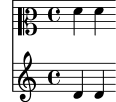
La deuxième commande \set définit bien la propriété
Voice.clefGlyph à clefs.F mais, puisque LilyPond ne
s’attend pas à une telle propriété dans un contexte de voix, rien ne se
passe. Il ne s’agit pas d’une erreur, aucun message d’erreur ne sera ni
émis ni enregistré.
La propriété clefGlyph ne sera prise en compte que si elle est
définie dans un contexte Staff ; d’autres propriétés peuvent par
contre être définies dans plusieurs contextes différents. C’est le cas
de la propriété extraNatural qui est définie par défaut à
#t (vrai) pour toutes les portées. Si vous lui attribuez la
valeur #f (faux) dans un contexte Staff particulier, elle
ne s’appliquera qu’aux altérations de la portée en question ; si vous
lui attribuez la valeur « faux » au niveau du contexte Score,
cela s’appliquera alors à tous les contextes Staff pour lesquels
elle n’aura pas été stipulée.
Voici comment supprimer les bécarres supplémentaires pour une portée :
<< \new Staff \relative { aeses'2 aes } \new Staff \relative { \set Staff.extraNatural = ##f aeses'2 aes } >>![[image of music]](f6/lily-024f0c7f.png)
et pour toutes les portées :
<< \new Staff \relative { aeses'2 aes } \new Staff \relative { \set Score.extraNatural = ##f aeses'2 aes } >>![[image of music]](60/lily-e6d76050.png)
Autre exemple, si la propriété clefTransposition est déterminée
au niveau du contexte Score, elle modifiera la valeur de la
transposition pour le contexte Staff en cours et tous ceux à
venir, sauf mention expresse.
La commande opposée, \unset, efface la propriété du contexte.
En règle générale, la commande \unset n’est pas nécessaire dès
lors que vous faites appel à une nouvelle commande \set pour
modifier le réglage. Il faut ici considérer la valeur que le contexte
englobant doit perpétuer. \set le masque, et \unset le
rend visible.
Les commandes \set et \unset peuvent intervenir n’importe
où dans votre fichier source. Elles seront effectives dès leur
apparition et jusqu’à la fin de la partition, à moins d’être affectées
par un \unset ou un nouveau \set. À titre d’exemple, nous
allons jouer avec la taille des fontes, ce qui affecte entre autres la
grosseur des têtes de note. La valeur se définit par rapport à la taille
de police par défaut, non par rapport à la dernière valeur définie.
\relative { c'4 d % make note heads smaller \set fontSize = -4 e4 f | % make note heads larger \set fontSize = 2.5 g4 a % return to default size \unset fontSize b4 c | }![[image of music]](cd/lily-6ba6edd1.png)
Nous venons de voir comment déterminer la valeur de différents types de
propriété. N’oubliez pas que les expressions Scheme doivent être
précédées d’un signe dièse (#) ; les valeurs vrai ou faux seront
donc libellées respectivement ##t et ##f – avec deux
dièses. Une valeur textuelle doit être encadrée de guillemets anglais,
"…", bien que, comme nous le constaterons plus tard, la
commande \markup permet aussi de spécifier du texte.
Définition des propriétés de contexte avec \with
Les propriétés d’un contexte peuvent aussi être réglées lors de la
création de ce contexte. Ceci constitue parfois une façon plus claire de
spécifier les valeurs d’une propriété pour la durée de vie du contexte.
Lorsque vous créez un contexte à l’aide de la commande \new, vous
pouvez la faire suivre immédiatement d’un bloc
\with { … } qui contiendra les réglages initiaux des
différentes propriétés. Ainsi, si nous voulions par exemple annuler
l’impression des bécarres supplémentaires sur la durée d’une portée,
nous écririons :
\new Staff \with { extraNatural = ##f }
ce qui donnerait :
<< \new Staff \relative { gisis'4 gis aeses aes } \new Staff \with { extraNatural = ##f } { \relative { gisis'4 gis aeses aes } } >>![[image of music]](75/lily-d3c15a0c.png)
Un bloc \with permet de définir aisément des valeurs qui
s’appliqueront sur toute la durée d’un contexte ; celles-ci ne sont
toutefois pas immuables. Les propriétés initialisée de la sorte peuvent
toujours être modifiées dynamiquement à l’aide des commandes \set
et \unset.
Définition des propriétés de contexte avec \context
Vous pouvez régler les valeurs des propriétés de contexte en une seule
fois pour tous les contextes d’un même type, par exemple tous les
contextes Staff. Le type du contexte doit être donné
explicitement d’après son nom, par exemple Staff, précédé d’une
oblique inverse, donc nous saisirons \Staff. La manière de régler
la valeur des propriétés est la même que ce que nous avons vu avec la
commande \with, puisqu’on se place dans un bloc \context
inclus dans un bloc \layout. Chaque bloc \context
affectera tous les contextes concernés par le bloc \score ou
\book au sein duquel apparaît ce bloc \layout. Voici
comment le mettre en place :
\score { \new Staff { \relative { cisis''4 e d cis } } \layout { \context { \Staff extraNatural = ##t } } }![[image of music]](e6/lily-ae4cbe6d.png)
Dans le cas où ces ajustements de propriété doivent affecter toutes les portées de la partition, nous utiliserons alors :
\score { << \new Staff { \relative { gisis'4 gis aeses aes } } \new Staff { \relative { gisis'4 gis aeses aes } } >> \layout { \context { \Score extraNatural = ##f } } }![[image of music]](57/lily-605f506a.png)
Les propriétés de contexte ainsi définies peuvent être adaptées pour
chacun des contextes en particulier grâce à un bloc \with ou bien
une commande \set au fil des notes.
Voir aussi
Manuel de notation :
Modification des réglages par défaut d’un contexte,
Les commandes \set et \unset.
Référence des propriétés internes : Contexts, Tunable context properties.
| [ << Concepts fondamentaux ] | [Top][Contents][Index] | [ Retouche de partition >> ] |
| [ < Modification des propriétés d’un contexte ] | [ Up: Contextes et graveurs ] | [ Extension des modèles > ] |
4.3.5 Ajout et suppression de graveurs
Nous avons vu que chaque contexte met en œuvre plusieurs graveurs et que chacun de ces graveurs est chargé de générer une composante particulière du fichier de sortie, qui les barres de mesure, qui la portée, qui les têtes de note, les hampes, etc. Le fait de supprimer un graveur d’un contexte éliminera sa contribution au fichier de sortie. Bien que ce soit là un moyen radical de modifier le résultat, cette pratique est dans quelques cas fort utile.
Modification d’un seul contexte
Nous utilisons, pour supprimer un graveur d’un contexte, la commande
\with dès la création du-dit contexte, comme nous l’avons vu dans
la section précédente.
Illustrons notre propos en reprenant un exemple du chapitre précédent,
duquel nous supprimerons les lignes de la portée. Pour mémoire, les
lignes d’une portée sont générées par le Staff_symbol_engraver.
\new Staff \with { \remove Staff_symbol_engraver } \relative { c'4 d \set fontSize = -4 % make note heads smaller e4 f | \set fontSize = 2.5 % make note heads larger g4 a \unset fontSize % return to default size b4 c | }![[image of music]](74/lily-0424b4a6.png)
Vous pouvez aussi ajouter individuellement un graveur à un contexte. La commande se formule ainsi :
\consists Nom_du_graveur
et se place dans un bloc \with. Certaines partitions vocales font
apparaître un ambitus au début de la portée, afin d’indiquer ses
notes extrêmes. L’ambitus est généré par l’Ambitus_engraver, que
l’on peut adjoindre à n’importe quel contexte. Si nous l’ajoutons au
contexte Voice, seule la tessiture de cette voix sera calculée :
\new Staff << \new Voice \with { \consists Ambitus_engraver } { \relative { \voiceOne c''4 a b g } } \new Voice { \relative { \voiceTwo c'4 e d f } } >>![[image of music]](05/lily-688a95f2.png)
Toutefois, si nous l’ajoutons au contexte Staff,
l’Ambitus_engraver calculera l’écart maximal à partir de toutes
les notes de toutes les voix de la portée :
\new Staff \with { \consists Ambitus_engraver } << \new Voice { \relative { \voiceOne c''4 a b g } } \new Voice { \relative { \voiceTwo c'4 e d f } } >>![[image of music]](b7/lily-f15469a0.png)
Modification de tous les contextes d’un même type
Les exemples ci-dessus nous ont montré comment ajouter ou retirer des
graveurs à des contextes individuels. Nous pourrions aussi ajouter ou
supprimer des graveurs à tous les contextes d’un même type en insérant
les commandes pour le contexte approprié au sein d’un bloc
\layout. Si nous voulions afficher un ambitus pour chacune des
portées d’un système à quatre portées, il nous suffirait d’écrire :
\score { << \new Staff { \relative { c''4 a b g } } \new Staff { \relative { c'4 a b g } } \new Staff { \clef "G_8" \relative { c'4 a b g } } \new Staff { \clef "bass" \relative { c4 a b g } } >> \layout { \context { \Staff \consists Ambitus_engraver } } }![[image of music]](88/lily-bf8c0158.png)
Vous réglerez de la même manière les propriétés de tous les contextes
d’un type particulier si vous insérez les commandes \set dans un
bloc \context.
Voir aussi
Manuel de notation : Modification des greffons de contexte, Modification des réglages par défaut d’un contexte.
Problèmes connus et avertissements
Dans la mesure où les Stem_engraver et Beam_engraver
rattachent à des têtes de note les objets qu’ils créent, désactiver le
Note_heads_engraver entraîne l’absence de hampe et de ligature.
| [ << Concepts fondamentaux ] | [Top][Contents][Index] | [ Retouche de partition >> ] |
| [ < Ajout et suppression de graveurs ] | [ Up: Concepts fondamentaux ] | [ Soprano et violoncelle > ] |
4.4 Extension des modèles
Bon, vous avez lu le tutoriel, vous savez écrire de la musique. Mais comment obtenir les portées que vous voulez ? Les Modèles, c’est bien beau, mais que faire quand ils ne traitent pas ce que l’on veut précisément ?
Les exemples qui suivent vous donneront des méthodes générales pour adapter des modèles.
| [ << Concepts fondamentaux ] | [Top][Contents][Index] | [ Retouche de partition >> ] |
| [ < Extension des modèles ] | [ Up: Extension des modèles ] | [ Partition pour chœur à quatre voix mixtes > ] |
4.4.1 Soprano et violoncelle
Commencez par le modèle qui vous semblera le plus proche de ce à quoi vous voulez aboutir. Disons par exemple que vous voulez écrire une pièce pour soprano et violoncelle : dans ce cas, on pourrait commencer par les « notes et paroles », pour la partie de soprano.
\version "2.26.0"
melodie = \relative {
\clef "treble"
\key c \major
\time 4/4
a4 b c d
}
texte = \lyricmode {
Aaa Bee Cee Dee
}
\score{
<<
\new Voice = "un" {
\autoBeamOff
\melodie
}
\new Lyrics \lyricsto "un" \texte
>>
\layout { }
\midi { }
}
Maintenant, on veut ajouter une partie de violoncelle. Jetons un coup d’œil sur l’exemple avec les notes seules :
\version "2.26.0"
melodie = \relative {
\clef "treble"
\key c \major
\time 4/4
a4 b c d
}
\score {
\new Staff \melodie
\layout { }
\midi { }
}
On n’a pas besoin de deux commandes \version. Ce dont on a
besoin, c’est de la section melodie. De même, on n’a pas besoin
de deux sections \score – si nous les gardions toutes les deux,
on obtiendrait deux parties séparées ; mais nous voulons un vrai duo,
avec les deux parties ensemble. Dans la section \score, on n’a
pas besoin non plus de deux \layout ni de deux \midi.
Si on se contente de couper et coller les sections melodie, on se
retrouvera avec deux sections de ce nom ; il nous faut donc les
renommer. Appelons la section pour la soprano sopranoMusique et
celle pour le violoncelle violoncelleMusique. Tant qu’on y est,
renommons texte en sopranoParoles. Attention à bien
renommer les deux occurrences de chacune de ces dénominations :
c’est-à-dire la définition de départ, où l’on trouve
melodie = \relative { … }, et l’endroit où cette
dénomination est utilisée, dans la section \score.
Et puis, toujours tant qu’on y est, mettons le violoncelle en clé de fa, comme le veut l’usage, et donnons-lui d’autres notes.
\version "2.26.0"
sopranoMusique = \relative {
\clef "treble"
\key c \major
\time 4/4
a4 b c d
}
sopranoParoles = \lyricmode {
Laaa Siii Dooo Rééé
}
violoncelleMusique = \relative {
\clef "bass"
\key c \major
\time 4/4
d4 g fis8 e d4
}
\score{
<<
\new Voice = "un" {
\autoBeamOff
\sopranoMusique
}
\new Lyrics \lyricsto "un" \sopranoParoles
>>
\layout { }
\midi { }
}
Voilà qui est mieux, mais la partie de violoncelle n’apparaît pas sur la
partition – en effet, nous n’y avons pas fait appel dans la section
\score. Si l’on veut que la partie de violoncelle s’imprime sous
la partie de soprano, on va devoir ajouter :
\new Staff \musiqueVioloncelle
en dessous de tout ce qui concerne la soprano. Il nous faut également
encadrer la musique par des << et >>, qui feront
comprendre à LilyPond que plusieurs événements – ici, des objets
Staff – se déroulent en même temps. Le bloc \score
ressemble maintenant à
\score {
<<
<<
\new Voice = "un" {
\autoBeamOff
\sopranoMusique
}
\new Lyrics \lyricsto "un" \sopranoParoles
>>
\new Staff \violoncelleMusique
>>
\layout { }
\midi { }
}
C’est un peu le bazar dans tout ça ; mais il vous sera facile de mettre un peu d’ordre dans l’indentation. Voici le modèle pour soprano et violoncelle au complet :
sopranoMusic = \relative { \clef "treble" \key c \major \time 4/4 a4 b c d } sopranoLyrics = \lyricmode { Aaa Bee Cee Dee } celloMusic = \relative { \clef "bass" \key c \major \time 4/4 d4 g fis8 e d4 } \score { << << \new Voice = "one" { \autoBeamOff \sopranoMusic } \new Lyrics \lyricsto "one" \sopranoLyrics >> \new Staff \celloMusic >> \layout { } \midi { } }![[image of music]](c7/lily-35f0d5bf.png)
Voir aussi
Les patrons originaux sont disponibles à l’annexe Modèles pour portée unique.
| [ << Concepts fondamentaux ] | [Top][Contents][Index] | [ Retouche de partition >> ] |
| [ < Soprano et violoncelle ] | [ Up: Extension des modèles ] | [ Écriture d’une partition à partir de zéro > ] |
4.4.2 Partition pour chœur à quatre voix mixtes
La plupart des œuvres écrites pour chœur à quatre voix mixtes et orchestre, comme Elias de Mendelssohn ou le Messie de Haendel, disposent la musique et les paroles du chœur sur quatre portées – soprano, alto, ténor et basse – surmontant une réduction pour piano de l’accompagnement orchestral. En voici un exemple, tiré du Messie de Haendel :
![[image of music]](a3/lily-6be2a72a.png)
Note : Cette présentation s’obtient facilement à l’aide du gabarit
préprogrammé satb.ly – voir Gabarits préprogrammés. Il masque,
dans un but de simplification, totalement la structure des contextes
nécessaires et les génère automatiquement. Pour les besoins de la
démonstration et à titre didactique nous procéderons ici pas à pas, ce
gabarit préprogrammé ne correspondant pas forcément à vos attentes.
Le gabarit qui se rapprocherait le plus de cette mise en forme est Partition pour chœur SATB avec réduction pour piano – voir Modèles pour ensemble vocal – mais encore faudrait-il en modifier la mise en forme et refaire la partie de piano qui n’est plus une simple reprise des parties vocales. Les variables qui gèrent la musique et les paroles du chœur ne nécessitent pas de modification, mais il nous faut d’autres variables pour la réduction de piano.
L’ordre dans lequel apparaissent les contextes dans le ChoirStaff
du modèle ne correspond pas à ce que nous voyons ci-dessus. Il nous
faudra y revenir pour obtenir quatre portées avec des paroles en dessous
de chacune d’elles. Toutes les voix devraient être \voiceOne, ce
qui est la position par défaut ; il nous faudra donc éliminer toutes les
commandes \voiceXXX. Les ténors auront besoin d’une clef
spécifique. Enfin, nous n’avons pas encore abordé la façon dont les
paroles sont présentées dans le modèle ; nous procéderons donc comme
nous en avons l’habitude. Il faudra aussi ajouter un nom à chaque
portée.
Une fois tout ceci accompli, voici notre ChoirStaff :
\new ChoirStaff <<
\new Staff = "sopranos"
\with { instrumentName = "Soprano" }
<<
\new Voice = "sopranos" {
\global
\sopranoMusic
}
>>
\new Lyrics \lyricsto "sopranos" {
\sopranoWords
}
\new Staff = "altos"
\with { instrumentName = "Alto" }
<<
\new Voice = "altos" {
\global
\altoMusic
}
>>
\new Lyrics \lyricsto "altos" {
\altoWords
}
\new Staff = "tenors"
\with { instrumentName = "Tenor" }
<<
\new Voice = "tenors" {
\global
\tenorMusic
}
>>
\new Lyrics \lyricsto "tenors" {
\tenorWords
}
\new Staff = "basses"
\with { instrumentName = "Bass" }
<<
\new Voice = "basses" {
\global
\bassMusic
}
>>
\new Lyrics \lyricsto "basses" {
\bassWords
}
>> % end ChoirStaff
Il nous faut maintenant nous occuper de la partie de piano. Nous allons nous contenter de récupérer la partie de piano du modèle « Solo piano » :
\new PianoStaff \with { instrumentName = "Piano" }
<<
\new Staff = "upper" \superieur
\new Staff = "lower" \inferieur
>>
puis d’ajouter les définitions de variable pour superieur et
inferieur.
Les systèmes pour chœur (ChoirStaff) et pour piano
(PianoStaff) doivent être combinés à l’aide de doubles chevrons
gauche/droite puisqu’ils doivent s’empiler :
<< % combine ChoirStaff and PianoStaff one above the other
\new ChoirStaff <<
\new Staff = "sopranos" <<
\new Voice = "sopranos" {
\global
\sopranoMusic
}
>>
\new Lyrics \lyricsto "sopranos" {
\sopranoWords
}
\new Staff = "altos" <<
\new Voice = "altos" {
\global
\altoMusic
}
>>
\new Lyrics \lyricsto "altos" {
\altoWords
}
\new Staff = "tenors" <<
\clef "G_8" % tenor clef
\new Voice = "tenors" {
\global
\tenorMusic
}
>>
\new Lyrics \lyricsto "tenors" {
\tenorWords
}
\new Staff = "basses" <<
\clef "bass"
\new Voice = "basses" {
\global
\bassMusic
}
>>
\new Lyrics \lyricsto "basses" {
\bassWords
}
>> % end ChoirStaff
\new PianoStaff \with { instrumentName = "Piano" }
<<
\new Staff = "upper" \upper
\new Staff = "lower" \lower
>>
>>
Une fois tout cela mis en place, et après avoir ajouté les notes et les paroles de ces trois mesures du Messie, nous obtenons :
global = { \key d \major \time 4/4 } sopranoMusic = \relative { \clef "treble" r4 d''2 a4 | d4. d8 a2 | cis4 d cis2 | } sopranoWords = \lyricmode { Wor -- thy | is the lamb | that was slain | } altoMusic = \relative { \clef "treble" r4 a'2 a4 | fis4. fis8 a2 | g4 fis fis2 | } altoWords = \sopranoWords tenorMusic = \relative { \clef "G_8" r4 fis'2 e4 | d4. d8 d2 | e4 a, cis2 | } tenorWords = \sopranoWords bassMusic = \relative { \clef "bass" r4 d'2 cis4 | b4. b8 fis2 | e4 d a'2 | } bassWords = \sopranoWords upper = \relative { \clef "treble" \global r4 <a' d fis>2 <a e' a>4 | <d fis d'>4. <d fis d'>8 <a d a'>2 | <g cis g'>4 <a d fis> <a cis e>2 | } lower = \relative { \clef "bass" \global <d, d'>4 <d d'>2 <cis cis'>4 | <b b'>4. <b' b'>8 <fis fis'>2 | <e e'>4 <d d'> <a' a'>2 | } \score { << % combine ChoirStaff and PianoStaff in parallel \new ChoirStaff << \new Staff = "sopranos" \with { instrumentName = "Soprano" } << \new Voice = "sopranos" { \global \sopranoMusic } >> \new Lyrics \lyricsto "sopranos" { \sopranoWords } \new Staff = "altos" \with { instrumentName = "Alto" } << \new Voice = "altos" { \global \altoMusic } >> \new Lyrics \lyricsto "altos" { \altoWords } \new Staff = "tenors" \with { instrumentName = "Tenor" } << \new Voice = "tenors" { \global \tenorMusic } >> \new Lyrics \lyricsto "tenors" { \tenorWords } \new Staff = "basses" \with { instrumentName = "Bass" } << \new Voice = "basses" { \global \bassMusic } >> \new Lyrics \lyricsto "basses" { \bassWords } >> % end ChoirStaff \new PianoStaff \with { instrumentName = "Piano " } << \new Staff = "upper" \upper \new Staff = "lower" \lower >> >> }![[image of music]](0c/lily-dd8300c5.png)
4.4.3 Écriture d’une partition à partir de zéro
Après avoir acquis une certaine dextérité dans l’écriture de code LilyPond, vous devez vous sentir suffisamment prêt à vous lancer dans la création d’une partition à partir de zéro, autrement dit en ne partant pas d’un exemple. Vous pourrez ainsi vous construire vos propres patrons selon le type de musique que vous affectionnez plus particulièrement. Pour voir comment procéder, nous allons monter la partition d’un prélude pour orgue.
Nous débutons par une section d’en-tête ; nous y mettrons entre autres
le titre et le nom du compositeur. Puis viennent toutes les définitions
de toutes les variables. Nous terminons par le bloc \score.
Attelons-nous pour cette aventure, en gardant bien à l’esprit ce que
nous venons de dire ; nous nous occuperons des détails en temps voulu.
Nous nous appuyons sur les deux premières mesures du prélude sur Jesu, meine Freude, écrit pour orgue avec pédalier. Vous pouvez voir ces deux mesures au bas de cette page. La main droite comporte deux voix, la main gauche et le pédalier une seule. Il nous faut donc quatre définitions de musique, plus une qui contiendra la métrique et l’armure :
\version "2.26.0"
\header {
title = "Jesu, meine Freude"
composer = "J S Bach"
}
ArmureMetrique = { \key c \minor \time 4/4 }
ManuelUnVoixUnMusique = { s1 }
ManuelUnVoixDeuxMusique = { s1 }
ManuelDeuxMusique = { s1 }
PedalierOrgueMusique = { s1 }
\score {
}
Pour l’instant, nous utilisons des silences invisibles, s1, en
lieu et place des notes réelles. On verra plus tard.
Passons maintenant au bloc \score et à ce qu’il devrait contenir.
Nous y recopions simplement la structure des portées que nous voulons.
La musique pour orgue se présente généralement sous la forme de trois
portées, une pour chaque main et une pour le pédalier. Les portées du
manuel sont regroupées, nous utiliserons donc un PianoStaff. La
première partie du manuel requiert deux voix et la seconde une seule.
\new PianoStaff <<
\new Staff = "ManuelUn" <<
\new Voice {
\ManuelUnVoixUnMusique
}
\new Voice {
\ManuelUnVoixDeuxMusique
}
>> % fin du contexte de portée ManuelUn
\new Staff = "ManuelDeux" <<
\new Voice {
\ManuelDeuxMusique
}
>> % fin du contexte de portée ManuelDeux
>> % fin du contexte PianoStaff
Il nous faut ajouter à cela une portée pour le pédalier. Elle se place
sous le système de piano mais, puisqu’elle doit rester synchrone avec
lui, nous utilisons des doubles chevrons pour les regrouper. Négliger
ceci nous renverrait une erreur, et personne n’est à l’abri de cette
faute ! Pour preuve, il vous suffit de copier l’exemple complet en fin
de chapitre, de supprimer ces << et >>, et de le compiler,
pour voir de quoi il retourne.
<< % Système pianistique et portée de pédalier sont synchrones
\new PianoStaff <<
\new Staff = "ManuelUn" <<
\new Voice {
\ManuelUnVoixUnMusique
}
\new Voice {
\ManuelUnVoixDeuxMusique
}
>> % fin du contexte de portée ManuelUn
\new Staff = "ManuelDeux" <<
\new Voice {
\ManuelDeuxMusique
}
>> % fin du contexte de portée ManuelDeux
>> % fin du contexte PianoStaff
\new Staff = "PedalierOrgue" <<
\new Voice {
\PedalierOrgueMusique
}
>>
>>
La construction en simultané – << … >> – n’est pas
strictement obligatoire pour les portées manuel deux et pédalier, qui ne
contiennent chacune qu’une seule expression musicale ; mais cela ne
mange pas de pain, et c’est une bonne habitude que de toujours encadrer
par des doubles chevrons gauche/droite ce qui suit une commande
\new Staff au cas où il y aurait plusieurs voix. Il en va
autrement pour les contextes Voice : ils doivent être toujours
suivis d’accolades – { … } – au cas où vous auriez
employé plusieurs variables qui doivent intervenir consécutivement.
Ajoutons donc cette structure au bloc \score, tout en fignolant
l’indentation. Nous en profitons pour ajouter les clefs appropriées,
effectuer les réglages concernant les hampes et liaisons de la portée
supérieure grâce à \voiceOne et \voiceTwo, et mettre en
place la métrique et l’armure de chaque portée grâce à notre variable
\MetriqueArmure.
\score {
<< % Système pianistique et portée de pédalier sont synchrones
\new PianoStaff <<
\new Staff = "ManuelUn" <<
\ArmureMetrique % définition de l'armure et de la métrique
\clef "treble"
\new Voice {
\voiceOne
\ManuelUnVoixUnMusique
}
\new Voice {
\voiceTwo
\ManuelUnVoixDeuxMusique
}
>> % fin du contexte de la portée ManuelUn
\new Staff = "ManuelDeux" <<
\ArmureMetrique
\clef "bass"
\new Voice {
\ManuelDeuxMusique
}
>> % fin du contexte de la portée ManuelDeux
>> % fin du contexte PianoStaff
\new Staff = "PedalierOrgue" <<
\ArmureMetrique
\clef "bass"
\new Voice {
\PedalierOrgueMusique
}
>> % fin du contexte de la portée PedalOrgan
>>
} % fin du contexte Score
Cette partition pour orgue est presque parfaite. Reste juste ce petit
défaut qui ne se remarque pas lorsque l’on considère un seul système :
la distance qui sépare la portée de pédalier de celle de la main gauche
devrait être plus ou moins égale à celle qui sépare les deux mains. En
fait, la distance entre les deux portées d’un PianoStaff ne
saurait trop se dilater ; le pédalier devrait adopter le même
comportement.
La propension des portées à se dilater se contrôle à l’aide de la
propriété staff-staff-spacing, attachée à « l’objet graphique »
VerticalAxisGroup – la documentation de LilyPond utilise souvent
l’abréviation grob pour graphical object. Pas de panique !
Tout ceci sera expliqué plus tard – pour les curieux, jetez un œil au
chapitre Vue
d’ensemble de la modification des propriétés. Revenons à notre propos :
nous voulons modifier uniquement la sous-propriété
stretchability. Toutes les valeurs qui n’auront pas été modifiées
garderont leur valeur par défaut. Les impatients trouveront les valeurs
par défaut de la propriété staff-staff-spacing dans le fichier
scm/define-grobs.scm, en examinant la définition du grob
VerticalAxisGroup. La valeur que nous affecterons à
stretchability est celle que contient la définition du contexte
PianoStaff telle qu’elle apparaît dans le fichier
ly/engraver-init.ly).
\score {
<< % Système pianistique et portée de pédalier sont synchrones
\new PianoStaff <<
\new Staff = "ManuelUn" <<
\ArmureMetrique % définition de l'armure et de la métrique
\clef "treble"
\new Voice {
\voiceOne
\ManuelUnVoixUnMusique
}
\new Voice {
\voiceTwo
\ManuelUnVoixDeuxMusique
}
>> % fin du contexte de la portée ManuelUn
\new Staff = "ManuelDeux" \with {
\override VerticalAxisGroup
.staff-staff-spacing.stretchability = 5
} <<
\ArmureMetrique
\clef "bass"
\new Voice {
\ManuelDeuxMusique
}
>> % fin du contexte de la portée ManuelDeux
>> % fin du contexte PianoStaff
\new Staff = "PedalierOrgue" <<
\ArmureMetrique
\clef "bass"
\new Voice {
\PedalierOrgueMusique
}
>> % fin du contexte de la portée PedalOrgan
>>
} % fin du contexte Score
Nous en avons fini avec la structure. Toutes les partitions pour orgue auront cette structure, même si le nombre de voix peut changer. Tout ce qui nous reste à faire maintenant consiste à saisir la musique et à regrouper toutes les parties.
\header { title = "Jesu, meine Freude" composer = "J S Bach" } keyTime = { \key c \minor \time 4/4 } ManualOneVoiceOneMusic = \relative { g'4 g f ees | d2 c | } ManualOneVoiceTwoMusic = \relative { ees'16 d ees8~ 16 f ees d c8 d~ d c~ | 8 c4 b8 c8. g16 c b c d | } ManualTwoMusic = \relative { c'16 b c8~ 16 b c g a8 g~ 16 g aes ees | f16 ees f d g aes g f ees d ees8~ 16 f ees d | } PedalOrganMusic = \relative { r8 c16 d ees d ees8~ 16 a, b g c b c8 | r16 g ees f g f g8 c,2 | } \score { << % PianoStaff and Pedal Staff must be simultaneous \new PianoStaff << \new Staff = "ManualOne" << \keyTime % set key and time signature \clef "treble" \new Voice { \voiceOne \ManualOneVoiceOneMusic } \new Voice { \voiceTwo \ManualOneVoiceTwoMusic } >> % end ManualOne Staff context \new Staff = "ManualTwo" \with { \override VerticalAxisGroup .staff-staff-spacing.stretchability = 5 } << \keyTime \clef "bass" \new Voice { \ManualTwoMusic } >> % end ManualTwo Staff context >> % end PianoStaff context \new Staff = "PedalOrgan" << \keyTime \clef "bass" \new Voice { \PedalOrganMusic } >> % end PedalOrgan Staff context >> } % end Score context![[image of music]](69/lily-bd9f6024.png)
Voir aussi
Glossaire musicologique : système.
| [ << Concepts fondamentaux ] | [Top][Contents][Index] | [ Retouche de partition >> ] |
| [ < Écriture d’une partition à partir de zéro ] | [ Up: Extension des modèles ] | [ Conducteurs et parties > ] |
4.4.4 Économie de saisie grâce aux identificateurs et fonctions
Jusqu’à maintenant, vous avez vu ce type de code :
hornNotes = \relative { c''4 b dis c } \score { { \hornNotes } }![[image of music]](34/lily-b00cfe49.png)
Vous comprendrez combien cela peut être utile pour écrire de la musique minimaliste :
fragmentA = \relative { a'4 a8. b16 } fragmentB = \relative { a'8. gis16 ees4 } violin = \new Staff { \fragmentA \fragmentA | \fragmentB \fragmentA | } \score { { \violin } }![[image of music]](d1/lily-ee3c8a35.png)
Néanmoins vous pouvez aussi utiliser ces identifiants – aussi connus sous le nom de variables, macros, ou commandes (définies par l’utilisateur) – pour des retouches :
dolce = \markup { \italic \bold dolce } centerText = { \once \override TextScript.self-alignment-X = #CENTER } fthenp = _\markup { \dynamic f \italic \small { 2nd } \hspace #0.1 \dynamic p } violin = \relative { \repeat volta 2 { c''4._\dolce b8 a8 g a b | \centerText c4.^"hi there!" d8 e f g d | c4.\fthenp b8 c4 c-. | } } \score { { \violin } }![[image of music]](5d/lily-3f85f2c1.png)
Ces identifiants sont évidemment utiles pour économiser de la frappe. Mais ils peuvent l’être même si vous ne les utilisez qu’une seule fois : ils réduisent la complexité. Regardons l’exemple précédent sans aucun identifiant. C’est beaucoup plus laborieux à lire, et particulièrement la dernière ligne.
violin = \relative {
\repeat volta 2 {
c''4._\markup { \italic \bold dolce } b8 a8 g a b |
\once \override TextScript.self-alignment-X = #CENTER
c4.^"hi there!" d8 e f g d |
c4._\markup {
\dynamic f \italic \small { 2nd } \hspace #0.1 \dynamic p
}
b8 c4 c-. |
}
}
Vous n’avez pas oublié les « postévénements » ? Rappelez-vous les articulations, doigtés, tout ce qui peut s’ajouter après une note – voir Structuration de la saisie des notes –, souvent introduit par un tiret ou un indicateur de positionnement. Ces événements peuvent eux-mêmes s’enregistrer sous forme de variable, auquel cas les habituelles accolades ne seront pas nécessaires puisqu’elles n’apparaîtraient pas entre la note et son articulation.
Lorsqu’une telle définition inclut un préfixe, la variable peut alors s’utiliser directement après la note, à moins de vouloir en changer le positionnement à l’aide de l’indicateur adéquat.
articulationVar = -^-. artEsprVar = \articulationVar ^> \relative c' { c\articulationVar d e2^\articulationVar d2\artEsprVar c_\artEsprVar }![[image of music]](a8/lily-97fe8dc0.png)
Jusqu’ici nous avons vu des substitutions statiques : quand LilyPond
rencontre \centerText, il le remplace par le contenu que nous lui
avons défini – c’est-à-dire le contenu à droite de centerText =.
LilyPond gère également des substitutions non-statiques – vous pouvez les voir comme des fonctions.
padText = #(define-music-function (padding) (number?) #{ \once \override TextScript.padding = #padding #}) \relative { c''4^"piu mosso" b a b \padText 1.8 c4^"piu mosso" b a b \padText 2.6 c4^"piu mosso" b a b }![[image of music]](f3/lily-1236a5bc.png)
Utiliser des identifiants est aussi un bon moyen pour vous épargner du
travail si la syntaxe de LilyPond change un jour – voir
Mise à jour avec
convert-ly. Si vous avez une seule définition, par exemple
\dolce, pour tous vos fichiers (voir Feuilles de style) et que
la syntaxe change, alors vous n’aurez qu’à mettre à jour votre seule
définition \dolce, au lieu de devoir modifier chaque fichier
.ly.
| [ << Concepts fondamentaux ] | [Top][Contents][Index] | [ Retouche de partition >> ] |
| [ < Économie de saisie grâce aux identificateurs et fonctions ] | [ Up: Extension des modèles ] | [ Retouche de partition > ] |
4.4.5 Conducteurs et parties
Dans la musique d’orchestre, toutes les notes sont imprimées deux fois. D’abord dans les parties séparées destinées aux musiciens, et ensuite dans le conducteur destiné au chef. Les variables sont là pour vous éviter un double travail. La musique n’est entrée qu’une seule fois, et stockée dans une variable, dont le contenu servira à imprimer à la fois la partie séparée et la partition d’orchestre.
Il est judicieux de définir les notes dans un fichier séparé. Par exemple, supposons que le fichier musique-Cor.ly contienne la partie suivante pour un duo cor/basson.
notesCor = \relative {
\time 2/4
r4 f8 a | cis4 f | e d |
}
On établira alors une partie séparée en constituant un nouveau fichier :
\include "musique-Cor.ly"
\header {
instrument = "Cor en Fa"
}
{
\transpose f c' \notesCor
}
À la ligne
\include "musique-Cor.ly"
sera substitué le contenu du fichier musique-Cor.ly, et de ce
fait la variable notesCor se trouvera définie. La commande
\transpose f c' indique que son argument \notesCor sera
transposé à la quinte supérieure : le son réel f s’écrit
c', ce qui est la caractéristique d’un cor en fa. La
transposition est visible comme suit :
![[image of music]](43/lily-4a1714de.png)
Dans les pièces d’ensemble, il arrive souvent qu’une voix ne joue pas
pendant plusieurs mesures. Un silence spécial, appelé silence
multimesure, l’indique alors. On l’obtient par un R majuscule,
suivi d’une durée : 1 pour une pause, 2 pour une
demi-pause, etc. Cette durée peut être multipliée pour établir de plus
longs silences. Par exemple, le silence suivant dure trois mesures
à 2/4.
R2*3
Dans une partie séparée, les silences multimesure sont compressés. LilyPond dispose d’une commande à cet effet :
\compressMMRests { … }
Si l’on ajoute dans la musique ci-dessus le silence multimesure et cette instruction, on obtient le résultat suivant :
![[image of music]](6f/lily-037a4bee.png)
Le conducteur rassemble toute la musique. Si l’on suppose que l’autre
voix de notre duo se trouve dans le fichier musique-Basson.ly en
tant que variable notesBasson, on établira un conducteur avec
\include "musique-Basson.ly" \include "musique-Cor.ly" << \new Staff \notesCor \new Staff \notesBasson >>
ce qui équivaut à
![[image of music]](66/lily-d38f2d5a.png)
Voir aussi
Manuel d’initiation : Organisation du code source avec des variables.
Manuel de notation : Écriture de parties séparées, Insertion de fichiers LilyPond, Silences valant une mesure, Transposition.
| [ << Concepts fondamentaux ] | [Top][Contents][Index] | [ Modèles >> ] |
| [ < Conducteurs et parties ] | [ Up: Top ] | [ Retouches élémentaires > ] |
5 Retouche de partition
Ce chapitre indique comment modifier le résultat obtenu. LilyPond offre de nombreuses possibilités de réglages, permettant théoriquement de modifier chaque élément de votre partition.
| [ << Retouche de partition ] | [Top][Contents][Index] | [ Modèles >> ] |
| [ < Retouche de partition ] | [ Up: Retouche de partition ] | [ Objets et interfaces > ] |
5.1 Retouches élémentaires
LilyPond regroupe sous le terme de « retouches » (tweaks en anglais) les différents moyens dont dispose l’utilisateur pour intervenir sur l’interprétation du fichier d’entrée et pour modifier l’apparence du fichier de sortie. Certaines retouches sont très simples à mettre en œuvre ; d’autres sont plus complexes. Mais à elles toutes, elles permettent d’obtenir tout ce qu’on veut en matière de musique imprimée.
Dans ce chapitre, nous traitons des concepts de base nécessaires pour comprendre l’art de la retouche. Puis nous présentons de nombreuses commandes déjà prêtes, qu’il suffit de recopier pour obtenir un résultat identique dans vos partitions ; nous en profitons pour expliquer comment ces commandes ont été construites, si bien que vous pouvez apprendre par la même occasion à développer vos propres retouches.
Avant de vous lancer dans ce chapitre, il peut être utile de revoir la section Contextes et graveurs, dans la mesure où les contextes, graveurs et autres propriétés qui y sont décrits, sont indispensables pour comprendre et construire les retouches.
| 5.1.1 Objets et interfaces | ||
| 5.1.2 Conventions de nommage des objets et propriétés | ||
| 5.1.3 Méthodes de retouche |
| [ << Retouche de partition ] | [Top][Contents][Index] | [ Modèles >> ] |
| [ < Retouches élémentaires ] | [ Up: Retouches élémentaires ] | [ Conventions de nommage des objets et propriétés > ] |
5.1.1 Objets et interfaces
Toute retouche implique que l’on modifie les opérations internes et les structures du programme LilyPond. Nous allons donc, pour commencer, présenter certains termes qui servent à décrire ces opérations internes et ces structures.
Le terme « Objet » est un terme générique qui fait référence à une
multitude de structures internes mises en place par LilyPond durant la
compilation d’un fichier d’entrée. Ainsi, quand une commande du type
\new Staff apparaît, un nouvel objet du type Staff est
créé. Cet objet Staff contient alors toutes les propriétés
associées à cette portée, par exemple son nom et son armure, ainsi que
le détail des graveurs qui ont été désignés pour fonctionner dans ce
contexte de portée. Certains objets peuvent contenir les propriétés de
tous les autres contextes, comme les objets Voice, les objets
Score, les objets Lyrics ; d’autres se rapportent à tous
les éléments de notation, comme les barres de mesure, les liaisons, les
nuances, etc. Chaque objet dispose de son propre échantillon de valeurs
pour le réglage des propriétés.
Certains types d’objet portent des noms spécifiques. Les objets qui se rapportent à des éléments de notation sur le fichier de sortie, comme les notes, les hampes, les liaisons de phrasé ou de prolongation, les doigtés, les clefs, etc. sont appelés « objets de rendu » ; ils sont aussi connus sous le nom « d’objets graphiques » (en anglais : Graphical objects ou grobs pour faire court). Ce sont bien des objets au sens générique ci-dessus et, en tant que tels, ils reçoivent des propriétés qui leur sont associées, comme leur position, leur taille, leur couleur, etc.
Certains objets de rendu, comme les liaisons de phrasé, les soufflets de crescendo, les marques d’octaviation et beaucoup d’autres grobs, ont pour particularité de ne pas se situer à un seul et unique endroit – ils ont un point de départ, un point d’arrivée, et éventuellement d’autres propriétés relatives à leur forme. Ces objets avec une forme étendue sont appelés des bandeaux (spanners en anglais).
Les bandeaux ne peuvent être retouchés après leur création. Ceci inclut
les StaffSymbol et LedgerLineSpanner qui se déroulent tout
au long de la partition – à moins qu’ils n’aient été rompus par une
commande \stopStaff puis créés de nouveau à l’aide de la commande
\startStaff.
De plus existent certains grobs que l’on peut qualifier
« d’abstraits ». Ils n’ont pas pour fonction intrinsèque d’imprimer
quelque chose, mais plutôt de collecter, positionner et gérer d’autres
objets. Citons, parmi les plus courants, DynamicLineSpanner,
BreakAlignment, NoteColumn, VerticalAxisGroup ou
NonMusicalPaperColumn. Nous verrons plus avant comment les
utiliser.
Il reste à expliquer ce que sont les interfaces. De nombreux
objets, qui peuvent être très différents les uns des autres, ont pour
point commun de devoir être compilés simultanément. Par exemple, tous
les grobs ont une couleur, une taille, une position, etc. et
toutes ces propriétés sont compilées simultanément durant
l’interprétation du fichier d’entrée par LilyPond. Pour alléger ces
opérations internes, ces actions et propriétés communes sont regroupées
en un objet appelé grob-interface. Il existe beaucoup d’autres
regroupements de propriétés communes dans le genre de celui-ci, chacun
portant un nom qui se termine par interface. En tout, on en
compte plus d’une centaine. Nous verrons plus loin en quoi c’est
intéressant et utile pour l’utilisateur.
Ainsi s’achève le tour des principaux termes relatifs aux objets que nous serons amenés à utiliser dans ce chapitre.
| [ << Retouche de partition ] | [Top][Contents][Index] | [ Modèles >> ] |
| [ < Objets et interfaces ] | [ Up: Retouches élémentaires ] | [ Méthodes de retouche > ] |
5.1.2 Conventions de nommage des objets et propriétés
Nous avons eu un aperçu, dans Contextes et graveurs, de la façon de nommer les objets. Voici maintenant une liste de référence des types d’objets et de propriétés les plus courants, avec leurs conventions de nommage et quelques exemples de cas concrets. La lettre A représente n’importe quel caractère alphabétique majuscule, et les lettres aaa un nombre indéterminé de caractères alphabétiques minuscules. Les autres caractères sont à prendre tels qu’ils se présentent.
Type d’objet/propriété Convention de nommage Exemples Contextes AaaaouAaaaAaaaAaaaStaff,GrandStaffObjets de rendu AaaaouAaaaAaaaAaaaSlur,NoteHeadGraveurs Aaaa_aaa_engraverClef_engraver,
Note_heads_engraverInterfaces aaa-aaa-interfacegrob-interface,break-aligned-interfacePropriétés de contexte aaaouaaaAaaaAaaaalignAboveContext,skipBarsPropriétés d’objet de rendu aaaouaaa-aaa-aaadirection,
beam-thickness
Comme nous le verrons bientôt, les propriétés des différents types d’objet sont modifiées par des commandes différentes, si bien qu’il est bon de savoir reconnaître le type d’un objet ou d’une propriété en fonction de son nom.
Voir aussi
Manuel de notation : Conventions de nommage, Modification de propriétés.
| [ << Retouche de partition ] | [Top][Contents][Index] | [ Modèles >> ] |
| [ < Conventions de nommage des objets et propriétés ] | [ Up: Retouches élémentaires ] | [ La commande \override > ] |
5.1.3 Méthodes de retouche
La commande \override | ||
La commande \revert | ||
Le préfixe \once | ||
Les commandes \tweak et \offset | ||
Le préfixe \single |
| [ << Retouche de partition ] | [Top][Contents][Index] | [ Modèles >> ] |
| [ < Méthodes de retouche ] | [ Up: Méthodes de retouche ] | [ La commande \revert > ] |
La commande \override
Dans Modification des propriétés d’un contexte et dans Ajout et suppression de graveurs, nous avons déjà rencontré les commandes \set et
\with, qui servent à changer les propriétés des
contextes et à supprimer ou ajouter des graveurs.
Voici maintenant d’autres commandes plus importantes.
La commande pour changer les propriétés des objets de rendu est
\override. Du fait que cette commande modifie en profondeur les
propriétés internes de LilyPond, sa syntaxe n’est pas aussi simple que
pour les commandes vues précédemment. Elle a besoin de savoir avec
précision quelle est la propriété à modifier, pour quel objet et dans
quel contexte, et quelle doit être sa nouvelle valeur. Voyons de quoi il
retourne.
La syntaxe générale de cette commande est :
\override Contexte.ObjetDeRendu.propriété-rendu = valeur
Elle attribue à la propriété appelée propriété-rendu, associée à l’objet ObjetDeRendu, appartenant lui-même au contexte Contexte, une valeur valeur.
Le contexte Contexte peut être omis (c’est généralement le cas)
quand il n’y a pas d’ambiguïté et qu’il s’agit d’un contexte de très bas
niveau, comme Voice, ChordNames ou Lyrics. Dans les
exemples qui suivent, le contexte sera très souvent omis. Nous verrons
plus tard dans quelles circonstances il doit impérativement être
indiqué.
Les sections ci-dessous traitent largement des propriétés et de leurs valeurs – see Types de propriétés – mais, pour illustrer la mise en forme et l’utilisation de ces commandes, nous nous limiterons à n’employer que quelques propriétés et valeurs simples, facilement compréhensibles.
LilyPond reconnaît comme expression primaire les éléments musicaux tels
que les notes et durées, ainsi que les chaînes de caractères et
annotations (les markups). D’autres expressions spécifiques comme
les symboles et listes sont gérées en « mode Scheme », mode appelé en
faisant précéder une valeur par un ‘#’. Quant aux nombres, ils
doivent être précédés d’un ‘#’ lorsqu’ils sont utilisés en argument
à une fonction de markup – autrement dit dans un bloc
\markup.3
Pour de plus amples informations quant au mode Scheme, consultez Syntaxe Scheme dans LilyPond.
La commande \override est la plus fréquemment utilisée pour faire
des retouches, et pratiquement tout le reste de ce chapitre aura pour
but de montrer, à travers des exemples, comment l’utiliser. L’exemple
ci-dessous change la couleur des têtes de notes :
\relative { c'4 d \override NoteHead.color = "red" e4 f | \override NoteHead.color = "green" g4 a b c | }![[image of music]](f6/lily-28a19b77.png)
| [ << Retouche de partition ] | [Top][Contents][Index] | [ Modèles >> ] |
[ < La commande \override ] | [ Up: Méthodes de retouche ] | [ Le préfixe \once > ] |
La commande \revert
Une fois qu’elle a été modifiée, la propriété conserve sa nouvelle
valeur jusqu’à ce qu’elle soit à nouveau modifiée ou qu’elle rencontre
la commande \revert. La commande \revert obéit à la
syntaxe ci-dessous et ramène la valeur de la propriété à sa valeur
d’origine. Attention : dans le cas où plusieurs \override ont été
employés, il ne s’agit pas de la valeur précédente mais bien de la
valeur par défaut.4
\revert Contexte.ObjetDeRendu.propriété-de-rendu
Tout comme pour la commande \override, la mention du
Contexte est souvent facultative. Elle sera omise dans de nombreux
exemples ci-dessous. Voici un exemple qui ramène la couleur des deux
dernières notes à leur valeur par défaut :
\relative { c'4 d \override NoteHead.color = "red" e4 f | \override NoteHead.color = "green" g4 a \revert NoteHead.color b4 c | }![[image of music]](e2/lily-ad3d441b.png)
| [ << Retouche de partition ] | [Top][Contents][Index] | [ Modèles >> ] |
[ < La commande \revert ] | [ Up: Méthodes de retouche ] | [ Les commandes \tweak et \offset > ] |
Le préfixe \once
Les commandes \override, \revert, \set et
\unset peuvent supporter le préfixe \once. Celui-ci a pour
fonction de n’appliquer la commande considérée qu’à l’instant musical en
cours, avant que la propriété ne reprenne sa valeur antérieure – qui
n’est pas forcément la valeur par défaut lorsqu’un autre
\override ou \set est toujours effectif. Toujours à partir
du même exemple, il est possible de ne changer la couleur que d’une
seule note :
\relative { c'4 d \override NoteHead.color = "red" e4 f | \once \override NoteHead.color = "green" g4 a \once \revert NoteHead.color b c | \revert NoteHead.color f2 c | }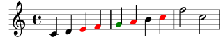
Le préfixe \once peut s’utiliser avec de nombreuses commandes
prédéfinies pour en limiter les effets à un seul instant musical :
\relative { c'4( d) \once \slurDashed e4( f) | g4( a) \once \hideNotes b( c) | }![[image of music]](0c/lily-ee40499e.png)
| [ << Retouche de partition ] | [Top][Contents][Index] | [ Modèles >> ] |
[ < Le préfixe \once ] | [ Up: Méthodes de retouche ] | [ Le préfixe \single > ] |
Les commandes \tweak et \offset
Les dernières commandes disponibles avec LilyPond pour les retouches
sont \tweak et \offset. Elles servent à changer les
propriétés d’objets qui surviennent simultanément dans la musique, comme
par exemple les notes d’un accord. La commande \override
modifierait toutes les notes de l’accord, tandis que \tweak
permet de ne modifier que l’élément immédiatement suivant dans la chaîne
de saisie.
La commande \offset peut elle aussi s’utiliser en lieu et place
de \override. Elle accepte aussi d’autres formes de syntaxe. Voir
La commande \offset pour
plus de détails.
Voici un exemple. Supposons que nous voulions changer la taille de la
tête de note du milieu (le mi) dans un accord de do majeur. Voyons
d’abord ce que donnerait \once \override :
\relative { <c' e g>4 \once \override NoteHead.font-size = -3 <c e g>4 <c e g>4 }![[image of music]](d5/lily-f346acea.png)
Nous voyons que \override modifie toutes les têtes de
notes de l’accord, car toutes les notes de l’accord surviennent au même
instant musical et que la fonction de \once est de faire
porter la modification sur tous les objets du type spécifié qui
surviennent au même instant musical, comme le fait la commande
\override elle-même.
Les commandes \tweak et \offset opèrent différemment.
Elles agissent sur l’élément immédiatement suivant dans la chaîne de
saisie. Dans leur forme la plus simple, elles ne fonctionnent que sur
les objets créés directement à partir de l’élément suivant dans la
chaîne de saisie, c’est-à-dire essentiellement des têtes de notes et des
articulations.
Pour reprendre notre exemple, la taille de la note du milieu d’un accord peut être modifiée de cette manière :
\relative { <c' e g>4 <c \tweak font-size -3 e g>4 }![[image of music]](1f/lily-86961307.png)
Essayons maintenant de modifier le positionnement vertical d’un symbole
\breathe. Par défaut, LilyPond calcule automatiquement un
espacement vertical par rapport à la ligne médiane. Si nous voulions le
remonter de deux unités, par exemple, \offset est la commande
qu’il convient d’utiliser. Avec un \tweak, le positionnement
correct ne ne s’obtiendrait qu’en procédant à tâtons.
\relative c'' { c4 \breathe c4 \offset Y-offset 2 \breathe c2 \tweak Y-offset 4 \breathe }![[image of music]](c1/lily-187c1f63.png)
De toute évidence, \offset n’est effectif que pour traiter des
valeurs de type numérique. Il existe d’autres restrictions à ce qui peut
se modifier, comme mentionné dans La
commande \offset.
Vous noterez que la syntaxe de \tweak et \offset est
différente de celle de la commande \override. Ni le contexte, ni
l’objet n’ont besoin d’être spécifiés ; au contraire, cela produirait
une erreur si on le faisait. Tous deux sont sous-entendus par l’élément
suivant dans la chaîne de saisie. Il n’est pareillement pas nécessaire
d’insérer un signe égal. La syntaxe générale des commandes \tweak
et \offset est donc, tout simplement :
\tweak propriété-de-rendu valeur \offset propriété-de-rendu valeur
\tweak et \offset peuvent aussi s’utiliser quand, dans une
série d’articulations, on veut n’en modifier qu’une seule. Ainsi :
a'4^"Black" -\tweak color "red" ^"Red" -\tweak color "green" _"Green"![[image of music]](ea/lily-3a5281e6.png)
Attention : les commandes \tweak et \offset doivent être
précédées d’une marque d’articulation, comme si elles-mêmes étaient des
articulations. Dans la cas de multiples positionnements forcés –
‘^’ ou ‘_’ –, celui le plus à gauche aura préséance puisqu’il
sera appliqué en dernier.
Les objets tels que hampes et altérations seront créés postérieurement à
l’événement qui survient. L’utilisation des commandes \tweak ou
\offset sur de tels objets indirectement créés peut se faire en
nommant explicitement l’objet de rendu, si tant est que LilyPond puisse
remonter jusqu’à l’événement originel :
<\tweak Accidental.color "red" cis''4 \tweak Accidental.color "green" es'' g''>![[image of music]](24/lily-515d2012.png)
Cette forme développée des commandes \tweak et \offset
correspond à :
\tweak objet-de-rendu.propriété-de-rendu valeur \offset objet-de-rendu.propriété-de-rendu valeur
Quand plusieurs n-olets sont imbriqués et commencent au même instant
musical, c’est encore la commande \tweak qui est utilisée pour
changer l’apparence de l’un d’entre eux. Dans l’exemple suivant, le long
crochet de n-olet et le premier des trois crochets courts commencent au
même instant musical ; une commande \override s’appliquerait donc
à la fois aux deux. En revanche, \tweak permet de les dissocier.
La première commande \tweak indique que le long crochet doit être
placé au-dessus des notes, et la seconde indique que le coefficient de
n-olet doit être imprimé en rouge sur le premier crochet de triolet
court.
\relative c'' { \tweak direction #up \tuplet 3/4 { \tweak color "red" \tuplet 3/2 { c8[ c c] } \tuplet 3/2 { c8[ c c] } \tuplet 3/2 { c8[ c c] } } }![[image of music]](4f/lily-3c04c4e7.png)
Si les n-olets imbriqués ne commencent pas au même moment, leur
apparence peut alors être modifiée de la façon habituelle, avec la
commande \override :
\relative { \tuplet 3/2 { c'8[ c c] } \once \override TupletNumber.text = #tuplet-number::calc-fraction-text \tuplet 3/2 { c8[ c] c8[ c] \once \override TupletNumber.transparent = ##t \tuplet 3/2 { c8[ c c] } \tuplet 3/2 { c8[ c c] } } }![[image of music]](bf/lily-af6c9f48.png)
Voir aussi
Manuel de notation :
Les commandes \tweak et \single,
La commande \offset.
| [ << Retouche de partition ] | [Top][Contents][Index] | [ Modèles >> ] |
[ < Les commandes \tweak et \offset ] | [ Up: Méthodes de retouche ] | [ Le manuel de référence des propriétés internes > ] |
Le préfixe \single
Supposons que nous voulions mettre en exergue certaines têtes de note – plus grosses et en rouge – et, pour nous simplifier la vie, que nous avons réalisé un fonction à ce effet :
emphNoteHead = { \override NoteHead.color = "red" \override NoteHead.font-size = 2 } \relative { c''4 a \once \emphNoteHead f d | }![[image of music]](93/lily-d47947d2.png)
Le préfixe \once fonctionne à merveille dans le cas d’une note
isolée ou de l’intégralité d’un accord, mais ne permet pas de souligner
individuellement l’une des notes d’un accord. Nous avons vu comment un
\tweak permet d’y arriver – voir Les commandes \tweak et \offset. Un \tweak ne peut toutefois pas s’utiliser dans une
fonction ; un \single permet d’appliquer la fonction une seule
fois :
emphNoteHead = { \override NoteHead.color = "red" \override NoteHead.font-size = 2 } \relative { <c'' a \single \emphNoteHead f d>4 }![[image of music]](ac/lily-347d1b6a.png)
En résumé, l’instruction \single convertit les instructions
\override en \tweak de telle sorte que lorsque plusieurs
objets se trouvent en un même point du temps musical, comme la tête des
notes formant un accord, \single n’en affectera qu’une seule,
celle générée par l’expression musicale qui vient juste après,
contrairement à un \once qui en affectera tous les objets.
Cette utilisation de \single permet d’appliquer individuellement
n’importe quel raccourci de fonction contenant des \override aux
notes d’un accord. Néanmoins, l’instruction \single ne permet pas
de convertir des \revert, \set ou \unset en
\tweak.
Voir aussi
Manuel d’initiation :
Les commandes \tweak et \offset,
Utilisation de variables dans les retouches.
| [ << Retouche de partition ] | [Top][Contents][Index] | [ Modèles >> ] |
[ < Le préfixe \single ] | [ Up: Retouche de partition ] | [ Propriétés des objets de rendu > ] |
5.2 Le manuel de référence des propriétés internes
Le manuel des propriétés internes – Internals Reference abrégé en IR – est la réponse ultime à toute la configuration de LilyPond. Généré automatiquement à partir des sources même du logiciel, aucune infrastructure de traduction n’est à ce jour disponible en ce qui le concerne. Pour comprenndre comment l’utiliser, les sections qui suivent les informations qui vous seront nécessaires.
| 5.2.1 Propriétés des objets de rendu | ||
| 5.2.2 Propriétés listées par interface | ||
| 5.2.3 Types de propriétés |
5.2.1 Propriétés des objets de rendu
Imaginons que votre partition contienne une liaison trop fine à votre
goût et que vous vouliez la rendre plus épaisse. Comment vous y
prendre ? Vous êtes convaincu, avec tout ce qui a été dit sur la
souplesse de LilyPond, qu’une telle retouche est réalisable et vous vous
dites qu’elle fera sans doute intervenir la commande \override.
Mais existe-t-il une propriété épaisseur qui s’applique à une liaison
et, dans l’affirmative, comment faire pour la modifier ? C’est là
qu’intervient la Référence des propriétés internes. Elle contient toutes
les informations dont vous avez besoin pour construire n’importe quelle
commande \override.
Avant de nous plonger dans la Référence des propriétés internes, un mot d’avertissement. Il s’agit d’un document de références, de sorte qu’il ne contient pas ou peu d’explications : son but est de présenter les informations de façon précise et concise. Cela peut paraître décourageant à première vue. Pas d’inquiétude ! Les conseils et les explications fournis ici vous permettent de retrouver par vous-même les informations dans la Référence des propriétés internes. Il suffit d’un peu de pratique.
Prenons un exemple concret tiré d’un morceau de musique connu :
{ \key es \major \time 6/8 \relative { r4 bes'8 bes[( g]) g | g8[( es]) es d[( f]) as | as8 g } \addlyrics { The man who | feels love's sweet e -- | mo -- tion } }![[image of music]](64/lily-96937c4d.png)
Admettons que nous voulions rendre les traits de liaison plus épais. Est-ce possible ? Une liaison est assurément un objet de rendu, si bien que la question est « Existe-t-il une propriété attachée aux liaisons et qui en contrôle l’épaisseur ? » Pour y répondre, nous consultons la Référence des propriétés internes (ou RPI pour faire court).
Vous trouverez sur le site de LilyPond https://lilypond.org la RPI correspondant à votre version du programme. Allez sur la page Documentation et cliquez sur Référence des propriétés internes. Pour l’apprentissage, mieux vaut utiliser la version HTML standard, et non la « page unique en anglais » ou le PDF. Durant la lecture des prochains paragraphes, il vous est conseillé de vous y reporter réellement afin que les explications prennent tout leur sens.
En dessous du bandeau d’en-tête figurent cinq liens. Cliquez sur le lien
vers le Backend, où se trouvent les informations sur les objets
de rendu. En dessous du titre Backend, choisissez alors le lien
vers Tous les objets de rendu. La page qui s’ouvre énumère, dans
l’ordre alphabétique, tous les objets utilisés dans votre version de
LilyPond. Cliquez sur Slur, et les propriétés des liaisons
apparaîtront.
Il existe un autre moyen de trouver cette page, à partir du Manuel de notation. Une des pages qui traitent des liaisons contient un lien vers la Référence des propriétés internes, qui mène directement à cette page. Mais lorsque vous connaissez le nom de l’objet à retoucher, le plus simple est de consulter la RPI.
La page de la RPI sur les liaisons commence par préciser que les objets
« Liaison » sont créés par le graveur Slur_engraver. Vient
ensuite la liste des réglages standard ; vous y trouverez la propriété
susceptible de contrôler l’épaisseur des traits de liaison.
thickness (number)
1.2
[...] For slurs and ties, this is the distance between the two
arcs of the curve's outline at its thickest point, [...] This
property is expressed as a multiple of the current staff-line
thickness [...]
que l’on pourrait traduire ainsi :
thickness (nombre)
1.2
[...] Pour les liaisons de phrasé et de tenue, c'est la distance
entre les deux arcs extérieurs de la courbe à son point le plus
épais, [...] Cette propriété s'exprime en multiple de l'épaisseur
de ligne de portée en cours [...]
Voilà qui semble approprié pour changer l’épaisseur (thickness en
anglais). On apprend que la valeur de thickness est un simple
nombre (number), qu’elle est par défaut définie à 1,2 et que
cette valeur varie en fonction de l’épaisseur des lignes de portée – on
comprend aisément que des petites portées auront des liaisons plus
fines.
Comme il a été indiqué, on ne trouve que peu, voire pas du tout
d’explication dans la RPI, mais nous en savons assez pour essayer
de changer l’épaisseur de la liaison. Comme nous l’avons vu, le
nom de l’objet est Slur, le nom de la propriété à changer
est thickness et la nouvelle valeur sera un nombre supérieur
à 1.2 si l’on veut augmenter l’épaisseur du trait.
Pour construire la commande \override, il suffit donc de
remplacer les valeurs que nous avons trouvées en guise de noms, en
laissant de côté le contexte. Commençons par une valeur très élevée
dans un premier temps, pour nous assurer que la commande fonctionne.
Nous obtenons :
\override Slur.thickness = 5.0
La dernière question est : « Où placer cette commande ? » Tant qu’on n’est pas sûr de soi, la meilleure réponse est « À l’intérieur de l’expression musicale, avant la première liaison et proche d’elle. » Essayons :
{ \key es \major \time 6/8 \relative { % Increase thickness of all following slurs from 1.2 to 5.0 \override Slur.thickness = 5.0 r4 bes'8 bes[( g]) g | g8[( es]) es d[( f]) as | as8 g } \addlyrics { The man who | feels love's sweet e -- | mo -- tion } }![[image of music]](93/lily-5b3d3c80.png)
et nous constatons que le trait de liaison est beaucoup plus épais.
Telle est la façon normale de construire des commandes \override.
Comme nous aurons l’occasion de le voir par la suite, le problème est
parfois plus complexe. Dans l’immédiat, nous en savons assez pour
construire nos propres commandes – mais il faut encore s’exercer. Les
exemples suivants sont là dans cette intention.
Détermination du contexte adéquat
Tout d’abord, de quoi avions-nous besoin pour préciser le contexte ? À
quoi devait-il ressembler ? Gageons que les liaisons appartiennent au
contexte de voix (Voice), dans la mesure où elles sont
étroitement liées à une ligne mélodique, mais comment en être sûr ? Pour
répondre à cette question, revenons en haut de la page de la RPI
consacrée aux liaisons ; il est écrit : « Les objets Liaison sont créés
par le graveur Slur_engraver. » Ainsi les liaisons seront créées
dans n’importe quel contexte où se trouve le Slur_engraver.
Suivons le lien vers la page Slur_engraver. Tout en bas, on lit
que le Slur_engraver est un élément appartenant à huit contextes
Voix, dont le contexte de voix standard, Voice. Notre hypothèse
était donc juste. Et parce que Voice est un contexte de très bas
niveau, qu’il est activé sans ambiguïté par le fait que l’on est en
train de saisir des notes, on peut ici ne pas le mentionner.
Redéfinition pour une seule occurrence
Dans le dernier exemple ci-dessus, toutes les liaisons étaient
plus épaisses. Et si on veut épaissir uniquement la première liaison ?
On recourt alors à la commande \once. Placée juste avant la
commande \override, elle lui indique de ne changer que la liaison
commençant avec la note juste après. Si la note juste après
n’ouvre pas une liaison, la commande sera sans aucun effet – elle ne
reste pas en mémoire jusqu’à la prochaine liaison, elle est purement et
simplement ignorée. Il faut donc que la commande introduite par
\once soit insérée comme suit :
{ \key es \major \time 6/8 \relative { r4 bes'8 % Increase thickness of immediately following slur only \once \override Slur.thickness = 5.0 bes8[( g]) g | g8[( es]) es d[( f]) as | as8 g } \addlyrics { The man who | feels love's sweet e -- | mo -- tion } }![[image of music]](84/lily-101734f7.png)
Alors seule la première liaison est rendue plus épaisse.
La commande \once peut aussi être utilisée devant la commande
\set.
Une alternative à \once \override consiste à utiliser la commande
\tweak ; on obtiendra le même résultat si l’on remplace
\once \override Slur.thickness = 5.0 bes8[(
dans l’exemple précédent par
bes8[\tweak thickness 5.0 (
Rétablissement
Et si l’on voulait que les deux premières liaisons soient plus
épaisses ? On pourrait bien sûr utiliser deux commandes, chacune
précédée de \once et placée juste avant la note par laquelle
débute la liaison :
{ \key es \major \time 6/8 \relative { r4 bes'8 % Increase thickness of immediately following slur only \once \override Slur.thickness = 5.0 bes[( g]) g | % Increase thickness of immediately following slur only \once \override Slur.thickness = 5.0 g8[( es]) es d[( f]) as | as8 g } \addlyrics { The man who | feels love's sweet e -- | mo -- tion } }![[image of music]](c7/lily-bc83aaf7.png)
mais on peut aussi, au lieu de la commande \once, utiliser après
la seconde liaison la commande \revert, qui ramène la propriété
thickness à sa valeur par défaut :
{ \key es \major \time 6/8 \relative { r4 bes'8 % Increase thickness of all following slurs from 1.2 to 5.0 \override Slur.thickness = 5.0 bes[( g]) g | g8[( es]) es % Revert thickness of all following slurs to default of 1.2 \revert Slur.thickness d8[( f]) as | as8 g } \addlyrics { The man who | feels love's sweet e -- | mo -- tion } }![[image of music]](63/lily-790f6c83.png)
N’importe quelle propriété modifiée par \override peut ainsi être
ramenée, grâce à la commande \revert, à sa valeur par défaut.
Ici s’achève notre introduction à la RPI et aux retouches simples. Vous trouverez d’autres exemples dans les prochaines sections de ce chapitre ; ils vous permettront, d’une part, d’apprendre à connaître un peu mieux la RPI et, d’autre part, de vous entraîner un peu plus à y chercher les informations. Ces exemples seront progressivement accompagnés d’explications et introduiront des termes nouveaux.
| [ << Retouche de partition ] | [Top][Contents][Index] | [ Modèles >> ] |
| [ < Propriétés des objets de rendu ] | [ Up: Le manuel de référence des propriétés internes ] | [ Types de propriétés > ] |
5.2.2 Propriétés listées par interface
Supposons maintenant que nous voulions imprimer des paroles en italique.
Quelle formulation de la commande \override allons-nous
utiliser ? Nous consultons en premier lieu, comme précédemment, la page
de la RPI qui contient la liste « Tous les objets de rendu », et
recherchons un objet qui contrôle les paroles. Nous trouvons
LyricText, qui semble approprié. Nous cliquons dessus et nous
voyons apparaître les différentes propriétés des paroles, parmi
lesquelles font-series et font-size. Mais aucune ne
propose l’italique. Car la mise en forme des caractères est une
propriété commune à tous les objets d’écriture, si bien que, au lieu de
figurer dans tous les objets de rendu, elle est regroupée avec d’autres
propriétés semblables et placée dans une Interface, la
font-interface.
Il nous faut donc apprendre à trouver les propriétés des interfaces et découvrir les objets qui utilisent les propriétés de ces interfaces.
Retournons à la page de la RPI qui traite des paroles
(LyricText). En bas de la page est dressée sous forme de liens la
liste des interfaces qui concernent LyricText. Cette liste comporte
plusieurs entrées, dont font-interface. En cliquant dessus, nous
voyons apparaître les différentes propriétés associées à cette
interface, qui sont en même temps les propriétés de tous les objets qui
s’y rapportent, parmi lesquels LyricText.
Nous avons alors sous les yeux tous les réglages des propriétés qui
contrôlent les polices de caractères, et notamment « font-shape
(symbol) ». La valeur entre parenthèses indique le type de valeur
attendu pour cette propriété qui, ici, est un symbole Scheme. La
référence de propriétés internes indique aussi les valeurs possibles, à
savoir upright, italic ou slanted.
Vous remarquerez que font-series et font-size figurent
aussi dans la liste. La question qui ne manque pas de se poser est :
« Comment se fait-il que les propriétés font-series et
font-size se retrouvent à la fois dans LyricText et dans
l’interface font-interface alors que ce n’est pas le cas pour
font-shape ? » La réponse est que lorsqu’un objet
LyricText est créé, les valeurs globales par défaut de
font-series et font-size sont modifiées, mais pas celles
de font-shape. Les possibilités de modification dans
LyricText ne concernent donc que les valeurs à appliquer à
LyricText. Les autres objets qui dépendent de
font-interface fixeront leurs propriétés différemment lorsqu’ils
seront créés.
Voyons maintenant si nous sommes en mesure de formuler la commande
\override pour mettre les paroles en italique. L’objet est
LyricText, la propriété est font-shape et la valeur est
italic. Comme auparavant, nous laissons de côté le contexte.
Signalons rapidement – même si cette remarque est importante – que
certaines valeurs de propriétés se présentent sous forme de symboles,
comme italics, et doivent donc être précédées d’une simple
apostrophe, Ces symboles seront alors interprétés comme tels par
LilyPond. À ne pas confondre avec les chaînes de caractères libres qui
se présentent comme "un texte libre" ; pour plus de détails sur
les symboles et les chaînes de caractères, voir le Tutoriel Scheme.
Ainsi, la commande \override pour mettre les paroles en italique
est :
\override LyricText.font-shape = #'italic
et doit être placée juste devant et tout près des paroles à modifier, comme ceci :
{ \key es \major \time 6/8 \relative { r4 bes'8 bes[( g]) g | g8[( es]) es d[( f]) as | as8 g } \addlyrics { \override LyricText.font-shape = #'italic The man who | feels love's sweet e -- | mo -- tion } }![[image of music]](98/lily-bbbcaa0f.png)
et voilà les paroles en italiques.
Note : Dans la saisie des paroles, pensez à toujours laisser une espace entre la dernière syllabe et l’accolade fermante.
Voir aussi
Manuel d’extension : Tutoriel Scheme.
| [ << Retouche de partition ] | [Top][Contents][Index] | [ Modèles >> ] |
| [ < Propriétés listées par interface ] | [ Up: Le manuel de référence des propriétés internes ] | [ Apparence des objets > ] |
5.2.3 Types de propriétés
Nous avons vu jusqu’à maintenant deux types de propriétés : « nombre »
et « symbole ». Pour pouvoir fonctionner, la valeur associée à une
propriété doit correspondre au type attendu et suivre les règles liées à
ce type. Le type de propriété est toujours donné entre parenthèses après
le nom de propriété dans la RPI. Voici une liste des différents types de
propriétés, avec les règles qui les régissent et quelques exemples
d’utilisation. Il faut, bien sûr, toujours ajouter un symbole
hash (#) devant les expressions Scheme lors de la saisie
de la commande \override, ce même si la valeur comporte déjà
un # en premier caractère. Les exemples ici présentés ne sont que
de simples illustrations ; l’utilisation de Scheme pour obtenir des
valeurs fait l’objet de la rubrique Scheme et les calculs.
Type de propriété Règles Exemples de saisie Boolean
(Booléen en français)Vrai (true en anglais) ou Faux (false en anglais), sous la forme #tou#f##t,##fdimension
(en espaces de portée)Un nombre décimal (en unités de lignes de portée) 2.5,0.34direction Une direction valide ou son équivalent numérique ( 0ouCENTERindiquent une position neutre)#LEFT,#CENTER,#UP,1,-1integer
(entier en français)Un nombre entier 3,-1Liste Une séquence de constantes ou symboles séparés par une espace, encadrées par des parenthèses et précédées par une apostrophe #'(left-edge staff-bar),
#'(1),#'(),
#'(1.0 0.25 0.5)markup
(ou étiquette)Toute commande \markupvalide\markup { \italic "cresc." },
"bagpipe"moment
(durée en français)Une durée musicale – ce type est distinct d’une durée de note \musicLength 4.,
\musicLength {2 2.}number
(nombre en français)Une valeur positive ou négative, qui peut être décimale 3,-2.45paire
(paire de nombres)Deux nombres séparés par « espace point espace », encadrés par des parenthèses et précédés par une apostrophe #'(2 . 3.5),
#'(0.1 . -3.2)symbol
(un symbole)L’un des symboles autorisés pour cette propriété, précédé par une apostrophe #'italic,#'insideunknown
(inconnu en français)Un processus, ou #fpour empêcher toute action#bend::print,
#ly:text-interface::print,
##fvector
(un vecteur)Des constantes encadrés par #(…)##(#t #t #f)
Attention : les arguments numériques aux fonctions de markup au
sein d’un bloc \markup requièrent un signe dièse.
Voir aussi
Manuel d’extension : Tutoriel Scheme.
| [ << Retouche de partition ] | [Top][Contents][Index] | [ Modèles >> ] |
| [ < Types de propriétés ] | [ Up: Retouche de partition ] | [ Visibilité et couleur des objets > ] |
5.3 Apparence des objets
Il est temps de mettre en pratique les notions apprises précédemment pour modifier l’allure de la partition ; les exemples qui suivent montrent l’utilisation des différentes méthodes de retouche.
| 5.3.1 Visibilité et couleur des objets | ||
| 5.3.2 Taille des objets | ||
| 5.3.3 Longueur et épaisseur des objets |
| [ << Retouche de partition ] | [Top][Contents][Index] | [ Modèles >> ] |
| [ < Apparence des objets ] | [ Up: Apparence des objets ] | [ La propriété stencil > ] |
5.3.1 Visibilité et couleur des objets
Dans un but pédagogique, on peut être amené à masquer certains éléments d’une partition, que les élèves doivent ensuite compléter. Imaginons, par exemple, un exercice dans lequel il faudrait rétablir les barres de mesure dans un morceau de musique. En temps normal, les barres de mesure s’insèrent automatiquement. Comment faire pour les effacer de la partition ?
Avant de nous y attaquer, souvenons-nous que les propriétés d’objets sont parfois groupées dans ce qu’on appelle des interfaces – see Propriétés listées par interface. Cela permet de rapprocher toutes les propriétés susceptibles d’être utilisées ensemble pour modifier un objet graphique – si l’une d’elles est choisie pour un objet, elle s’appliquera à tous les autres. Certains objets tirent alors leurs propriétés de telle ou telle interface, d’autres objets de telle ou telle autre interface. La liste des interfaces qui contiennent les propriétés liées à un objet graphique (grob) figure dans la RPI, en bas de la page de description du grob ; pour voir ces propriétés, il faut aller voir ces interfaces.
Nous avons vu, dans Propriétés des objets de rendu, comment trouver
les informations sur les grobs. Nous procédons de la même manière
et consultons la RPI pour connaître l’objet chargé d’imprimer les barres
de mesure. En cliquant sur Backend puis sur Tous les objets
de rendu, nous trouvons un objet appelé BarLine. Parmi ses
propriétés, deux d’entre elles déterminent son aspect visuel :
break-visibility et stencil. L’objet BarLine est
également lié à plusieurs interfaces, dont la grob-interface où
figurent les propriétés transparent et color. Toutes
peuvent modifier l’aspect visuel des barres de mesure – et de beaucoup
d’autres objets, bien sûr. Examinons chacune d’elles tour à tour.
La propriété stencil | ||
La propriété break-visibility | ||
La propriété transparent | ||
La propriété color |
| [ << Retouche de partition ] | [Top][Contents][Index] | [ Modèles >> ] |
| [ < Visibilité et couleur des objets ] | [ Up: Visibilité et couleur des objets ] | [ La propriété break-visibility > ] |
La propriété stencil
Cette propriété contrôle l’apparence des barres de mesure en précisant
le type de symbole (glyphe) à imprimer. Comme pour de nombreuses autres
propriétés, on peut lui indiquer de ne rien imprimer en lui attribuant
la valeur #f. Essayons en laissant de côté, une fois encore, le
contexte concerné (Voice en l’occurrence) :
\relative { \time 12/16 \override BarLine.stencil = ##f c''4 b8 c d16 c d8 | g,8 a16 b8 c d4 e16 | e8 }![[image of music]](38/lily-9e752ff7.png)
Les barres de mesure sont encore là ! Pourquoi ? Retournons à la RPI et
regardons de nouveau la page qui traite des propriétés de
BarLine. En haut de la page, il est précisé que « Les objets
BarLine sont créés par le graveur Bar_engraver ». Allons à
la page de Bar_engraver. Tout en bas se trouve la liste des
contextes dans lesquels fonctionne ce graveur. Tous sont du type
Staff, de sorte que, si la commande \override n’a pas
fonctionné comme prévu, c’est parce que BarLine n’appartient pas
au contexte par défaut, Voice. Si le contexte spécifié est
erroné, la commande ne fonctionne pas. Cela n’entraîne pas de message
d’erreur, et rien n’apparaît dans le fichier log. Essayons de
corriger en mentionnant le bon contexte :
\relative { \time 12/16 \override Staff.BarLine.stencil = ##f c''4 b8 c d16 c d8 | g,8 a16 b8 c d4 e16 | e8 }![[image of music]](bc/lily-3880bf24.png)
Cette fois, les barres de mesure ont disparu. Désactiver la propriété
stencil est une opération tellement fréquente que LilyPond
dispose d’un raccourci – \omit (pour « oublier ») – à cet
effet :
\relative { \time 12/16 \omit Staff.BarLine c''4 b8 c d16 c d8 | g,8 a16 b8 c d4 e16 | e8 }![[image of music]](4b/lily-a648dbe5.png)
Vous remarquerez que l’affectation de la valeur #f à la propriété
stencil déclenchera une erreur dès lors que l’objet en question
se doit d’avoir des dimensions pour les nécessités du traitement. Ce
sera le cas, par exemple, si vous effacez le stencil d’un objet
NoteHead. Il vaut mieux, en pareil cas, utiliser la fonction
point-stencil qui, quant à elle, attribue à l’objet une taille à
zéro :
\relative { c''4 c \once \override NoteHead.stencil = #point-stencil c4 c }![[image of music]](fb/lily-d74829ed.png)
| [ << Retouche de partition ] | [Top][Contents][Index] | [ Modèles >> ] |
[ < La propriété stencil ] | [ Up: Visibilité et couleur des objets ] | [ La propriété transparent > ] |
La propriété break-visibility
La RPI mentionne, à la page sur BarLine, que la propriété
break-visibility attend comme argument un vecteur de trois
booléens. Ceux-ci indiquent respectivement si les barres de mesure
doivent être imprimées ou non à la fin de la ligne, à l’intérieur de la
ligne et au début de la ligne. Dans notre cas, nous voulons que toutes
les barres soient supprimées, si bien que la valeur dont nous avons
besoin est #(#f #f #f). Essayons, sans oublier d’ajouter le
contexte Staff. Vous remarquerez que, en plus de cette valeur,
nous ajoutons ## devant la parenthèse ouvrante. Un second
‘#’ est nécessaire car il fait partie intégrante de la valeur
contenant un vecteur, et le premier ‘#’ est là, comme toujours avec
la commande \override, pour introduire la valeur elle-même.
\relative { \time 12/16 \override Staff.BarLine.break-visibility = ##(#f #f #f) c''4 b8 c d16 c d8 | g,8 a16 b8 c d4 e16 | e8 }![[image of music]](d6/lily-f32866e7.png)
Comme on peut le constater, cette solution-là aussi supprime les barres de mesure.
| [ << Retouche de partition ] | [Top][Contents][Index] | [ Modèles >> ] |
[ < La propriété break-visibility ] | [ Up: Visibilité et couleur des objets ] | [ La propriété color > ] |
La propriété transparent
La RPI mentionne, à la page sur grob-interface, que la propriété
transparent attend comme argument un booléen. Il faudrait donc
mettre #t pour rendre l’objet transparent. Dans cet exemple,
essayons de rendre transparente la métrique (time signature en
anglais) plutôt que les barres de mesure. Pour cela, il nous faut
trouver le nom du grob chargé de l’indication de mesure. De
retour sur la page « Tous les objets de rendu » de la RPI, nous
cherchons les propriétés de l’objet TimeSignature. Celui-ci est
géré par le graveur Time_signature_engraver qui, comme vous
pouvez le constater, appartient au contexte Staff et peut se
rattacher à la grob-interface. Dans ces conditions, la commande
pour rendre la métrique transparente est :
\relative { \time 12/16 \override Staff.TimeSignature.transparent = ##t c''4 b8 c d16 c d8 | g,8 a16 b8 c d4 e16 | e8 }![[image of music]](11/lily-c21ded71.png)
L’utilisation de la propriété transparent étant relativement
fréquente, LilyPond dispose d’un raccourci à cet effet : \hide
(pour « masquer »).
\relative { \time 12/16 \hide Staff.TimeSignature c''4 b8 c d16 c d8 | g,8 a16 b8 c d4 e16 | e8 }![[image of music]](6f/lily-8d2b6c23.png)
La métrique a bien disparu dans les deux cas, mais la commande a laissé
un blanc en lieu et place du chiffrage. Ce peut être souhaitable dans le
cadre d’un exercice, afin que les élèves aient la place pour compléter,
mais dans d’autres circonstances, ce peut être gênant. Pour y remédier,
attribuons plutôt au stencil des métriques la valeur #f :
\relative { \time 12/16 \omit Staff.TimeSignature c''4 b8 c d16 c d8 | g,8 a16 b8 c d4 e16 | e8 }![[image of music]](46/lily-830f0b1d.png)
La différence est flagrante : le fait d’attribuer au stencil la valeur
#f ou grâce à \omit supprime totalement l’objet, tandis
que le fait de le rendre transparent – ce qui s’obtient aussi
par la commande \hide – le laisse en place, mais de façon
invisible.
See Rendu MIDI d’un point d’orgue pour une autre illustration de
la différence entre \omit et \hide.
| [ << Retouche de partition ] | [Top][Contents][Index] | [ Modèles >> ] |
[ < La propriété transparent ] | [ Up: Visibilité et couleur des objets ] | [ Taille des objets > ] |
La propriété color
Essayons enfin de rendre les barres de mesure invisibles en les colorant en blanc. La difficulté est de savoir si les barres blanches vont couper ou non les lignes de la portée aux endroits où elles se croisent. Vous verrez dans les exemples ci-dessous que cela peut se produire, sans qu’on le sache à l’avance. Les explications de ce phénomène et les solutions pour y remédier sont exposées dans Blanchiment des objets. Pour le moment, acceptons cet inconvénient et concentrons-nous sur l’apprentissage de la gestion des couleurs.
La grob-interface indique que la valeur de la propriété
color est une liste, sans plus d’explication. En fait, cette
liste est une liste de valeurs en unités internes ; pour éviter d’avoir
à chercher ce qu’il faut y mettre, il existe différents moyens
d’indiquer la couleur. Le premier moyen consiste à utiliser l’une des
couleurs CSS de la première Liste
des couleurs. Pour mettre les barres de mesure en blanc, on écrit :
\relative { \time 12/16 \override Staff.BarLine.color = "white" c''4 b8 c d16 c d8 | g,8 a16 b8 c d4 e16 | e8 }![[image of music]](97/lily-b0c88d4b.png)
et nous constatons que les barres de mesure sont une fois de plus
invisibles. Attention : aucune apostrophe ne précède "white" –
il ne s’agit pas d’un symbole, mais d’une chaîne de caractères mappée
dans une liste prédéfinie de valeurs internes. La syntaxe de LilyPond, à
ce propos, ressemble en tout point au
langage CSS couramment utilisé
pour les pages internet. En plus des noms prédéfinis, il est possible de
spécifier une couleur par un code hexadécimal :
\relative { \time 12/16 \override Staff.BarLine.color = "#FFFFFF" c''4 b8 c d16 c d8 | g,8 a16 b8 c d4 e16 | e8 }![[image of music]](2c/lily-241f088b.png)
On pourrait tout aussi bien définir cette couleur sous forme de variable que l’on utiliserait ensuite en tant que définition d’une propriété. Dans la mesure où il s’agit à la fois d’une variable LilyPond et d’un objet Scheme, elle pourra indifféremment se préfixer d’une oblique inversée ou d’un hash :
whiteVar = "#FFFFFF" \relative { \time 12/16 \override Staff.BarLine.color = \whiteVar c''4 b8 c d16 c d8 | \override Staff.BarLine.color = #whiteVar g,8 a16 b8 c d4 e16 | e8 }![[image of music]](83/lily-49d3a653.png)
Un autre moyen d’ajouter des couleurs à une partition consiste à
recourir à une fonction. Deux fonctions sont utiles à cet égard : la
fonction x11-colors que nous verrons plus avant, et la fonction
rgb-colors qui, quant à elle, illustre la logique interne de
LilyPond. Cette fonction prend trois arguments, donnant respectivement
l’intensité du rouge, du vert et du bleu. Ces arguments prennent des
valeurs comprises entre 0 et 1. Ainsi, pour choisir la couleur rouge, la
valeur serait (rgb-color 1 0 0) ; pour le blanc, ce serait
(rgb-color 1 1 1) :
\relative { \time 12/16 \override Staff.BarLine.color = #(rgb-color 1 1 1) c''4 b8 c d16 c d8 | g,8 a16 b8 c d4 e16 | e8 }![[image of music]](5c/lily-eed2dab1.png)
Notez bien que, dans ce cas, l’intégralité de l’appel à cette fonction
est borné par des parenthèses. Il en va de même pour la fonction
x11-colors que nous avions laissée de côté.
La fonction x11-colors, elle aussi, convertit les noms
symboliques de couleur en une liste de valeurs internes, mais elle offre
plus de choix que les couleurs CSS comme on peut le constater dans la
Liste des couleurs. Par exemple, elle
comporte une échelle de gris qui va du noir ('grey0) au blanc
('grey100), avec un pas de 1. Essayons de l’utiliser en
attribuant à tous les objets de notre exemple différentes nuances de
gris :
\relative { \time 12/16 \override Staff.StaffSymbol.color = #(x11-color 'grey30) \override Staff.TimeSignature.color = #(x11-color 'grey60) \override Staff.Clef.color = #(x11-color 'grey60) \override Voice.NoteHead.color = #(x11-color 'grey85) \override Voice.Stem.color = #(x11-color 'grey85) \override Staff.BarLine.color = #(x11-color 'grey10) c''4 b8 c d16 c d8 | g,8 a16 b8 c d4 e16 | e8 }![[image of music]](a1/lily-99febc90.png)
Vous remarquerez le contexte associé à chacun des objets. Une erreur sur ce point empêcherait la commande de fonctionner. Souvenez-vous que le contexte est celui dans lequel est placé le graveur approprié. Pour chaque graveur, on peut trouver son contexte par défaut en partant de l’objet lui-même, puis en cherchant le graveur qui le produit ; la page du graveur dans la RPI nous indique alors le contexte dans lequel le graveur se trouve normalement.
| [ << Retouche de partition ] | [Top][Contents][Index] | [ Modèles >> ] |
[ < La propriété color ] | [ Up: Apparence des objets ] | [ Longueur et épaisseur des objets > ] |
5.3.2 Taille des objets
Pour commencer, reprenons l’exemple qui se trouvait dans Expressions musicales imbriquées, qui montrait comment créer une nouvelle portée temporaire, du type ossia.
\new Staff ="main" { \relative { r4 g'8 g c4 c8 d | e4 r8 << { f8 c c } \new Staff \with { alignAboveContext = "main" } { f8 f c } >> r4 | } }![[image of music]](93/lily-c8093e04.png)
Normalement, les ossias ne comportent ni clef ni indication de mesure,
et elles sont imprimées légèrement plus petit que la portée principale.
Nous avons déjà appris à enlever la clef et la métrique – il suffit de
régler le stencil de chacun sur #f, comme ceci :
\new Staff ="main" { \relative { r4 g'8 g c4 c8 d | e4 r8 << { f8 c c } \new Staff \with { alignAboveContext = "main" } { \omit Staff.Clef \omit Staff.TimeSignature { f8 f c } } >> r4 | } }![[image of music]](bb/lily-d5f8fa8b.png)
La paire d’accolades ajoutée après la clause \with est nécessaire
pour être sûr que les retouches (\override) ainsi que la musique
qui se trouvent à l’intérieur soient bien appliquées à la portée
d’ossia.
Mais alors, quelle différence y a-t-il à modifier le contexte de portée
au moyen de \with ou à modifier les stencils de la clef et de la
métrique avec \override ou \omit comme ici ? La principale
différence est que les changements opérés dans une clause \with
sont réalisés au moment où le contexte est créé et restent par la suite
les valeurs par défaut aussi longtemps que ce contexte existe,
tandis que les commandes \set ou \override insérées dans
la musique sont dynamiques – elles provoquent des changements
synchronisés avec un point particulier de la musique. Si les changements
sont annulés ou désactivés par \unset ou \revert, les
réglages reprennent leurs valeurs par défaut, c’est-à-dire celles qui
ont été fixées dans la clause \with, ou, en l’absence de
celle-ci, les valeurs par défaut normales.
Certaines propriétés de contexte ne peuvent être modifiées que dans une
clause \with. Il s’agit des propriétés qu’on ne peut évidemment
plus changer après que le contexte a été créé. C’est le cas de
alignAboveContext et de son pendant, alignBelowContext –
une fois que la portée a été créée, son alignement est décidé et cela
n’aurait aucun sens de vouloir le modifier par la suite.
Dans une clause \with, on peut aussi régler les valeurs par
défaut des propriétés d’un objet. Il suffit d’utiliser la commande
\override normale, sans s’occuper du nom de contexte puisqu’il ne
fait pas de doute qu’il s’agit du contexte en cours de modification par
la clause \with. Il se produirait même une erreur si le contexte
était précisé.
Remplaçons donc l’exemple ci-dessus par celui-ci :
\new Staff ="main" { \relative { r4 g'8 g c4 c8 d | e4 r8 << { f8 c c } \new Staff \with { alignAboveContext = "main" % Don't print clefs in this staff \override Clef.stencil = ##f % Don't print time signatures in this staff \override TimeSignature.stencil = ##f } { f8 f c } >> r4 | } }![[image of music]](7d/lily-96e881fc.png)
Nous pourrions tout aussi bien utiliser les raccourcis \hide et
\omit pour activer la propriété transparent et désactiver
le stencil, ce qui donnerait :
\new Staff ="main" { \relative { r4 g'8 g c4 c8 d | e4 r8 << { f8 c c } \new Staff \with { alignAboveContext = "main" % Don't print clefs in this staff \omit Clef % Don't print time signatures in this staff \omit TimeSignature } { f8 f c } >> r4 | } }![[image of music]](eb/lily-63b85ef6.png)
Venons-en finalement au changement de taille des objets.
Certains objets sont créés comme des glyphes choisis dans une police de
caractères. C’est le cas des têtes de notes, des altérations, des
markup, des clefs, des métriques, des nuances et des paroles.
Pour changer leur taille, on modifie la propriété font-size,
comme nous le verrons rapidement. D’autres objets, comme les liaisons de
phrasé ou de prolongation – en général les objets étendus – sont
dessinés à la demande, si bien qu’aucune font-size ne leur est
associée. Ces objets tirent généralement leur dimension des objets
auxquels ils sont rattachés, de sorte qu’on ne doit pas avoir à les
redimensionner à la main. D’autres propriétés, comme la hauteur des
hampes et des barres de mesure, l’épaisseur des ligatures et d’autres
lignes, et l’écartement des lignes de portée, doivent encore être
modifiées de façon particulière.
Si l’on revient à l’exemple d’ossia, commençons par changer la taille de
police. Nous pouvons employer deux méthodes. Soit nous changeons la
taille de police de chaque type d’objet avec des commandes comme
celle-ci pour les têtes de notes (NoteHead) :
\override NoteHead.font-size = -2
soit nous changeons la taille de toutes les polices à la fois grâce à la
propriété fontSize, en utilisant \set ou en l’insérant
dans une clause \with (mais alors sans le \set).
\set fontSize = -2
Chacune de ces méthodes réduira la taille de police de deux points par rapport à sa valeur précédente, sachant que chaque point réduit ou augmente la taille d’environ 12 %.
Essayons sur l’exemple d’ossia :
\new Staff ="main" { \relative { r4 g'8 g c4 c8 d | e4 r8 << { f8 c c } \new Staff \with { alignAboveContext = "main" \omit Clef \omit TimeSignature % Reduce all font sizes by ~24% fontSize = -2 } { f8 f c } >> r4 | } }![[image of music]](a4/lily-e22a016d.png)
Ce n’est pas encore parfait. Les têtes de notes et les crochets sont plus petits mais, proportionnellement, les hampes sont trop longues et les lignes de la portée trop espacées. Il faut donc les réduire dans les mêmes proportions que les polices de caractères. La prochaine sous-section montrera comment faire.
| [ << Retouche de partition ] | [Top][Contents][Index] | [ Modèles >> ] |
| [ < Taille des objets ] | [ Up: Apparence des objets ] | [ Décalages et alignements > ] |
5.3.3 Longueur et épaisseur des objets
Dans LilyPond, les écartements et longueurs sont généralement mesurés en
« intervalles de lignes » (staff spaces en anglais), c’est-à-dire
l’écartement qui sépare deux lignes adjacentes dans la portée. Plus
rarement, il est question de demi-intervalles de lignes. Les propriétés
d’épaisseur (thickness), quant à elles, sont généralement
mesurées en unités d’une propriété interne appelée « épaisseur de
ligne » (propriété thickness de l’objet graphique
StaffSymbol). Par exemple, les lignes de (de)crescendo présentent
par défaut une épaisseur d’une unité d’épaisseur de ligne de portée,
alors que l’épaisseur d’une hampe est de 1,3. Toutefois, certaines
propriétés d’épaisseur sont différentes : par exemple, l’épaisseur des
ligature – beam-thickness – se mesure en espaces de portée.
Dans ces conditions, comment ajuster les longueurs à la taille des
polices de caractères ? La solution consiste à utiliser une fonction
spéciale appelée magstep – pseudo facteur de zoom –, créée
précisément dans ce but. Elle comporte un argument, le changement de
taille de police (la valeur -2 dans l’exemple précédent), à partir
duquel elle applique un facteur de mise à l’échelle qui réduit, ou
augmente, les objets en question. La gageure consiste donc à ne pas
modifier la taille des hampes et autres objets, mais de plutôt jouer
sur la l’unité de base de ces tailles – en l’occurrence la propriété
staff-space de l’objet graphique StaffSymmbol.
\new Staff ="main" { \relative { r4 g'8 g c4 c8 d | e4 r8 << { f8 c c } \new Staff \with { alignAboveContext = "main" \omit Clef \omit TimeSignature fontSize = -2 % Reduce stem length and line spacing to match \override StaffSymbol.staff-space = #(magstep -2) } { f8 f c } >> r4 | } }![[image of music]](9a/lily-80d42c60.png)
Bien que la modification de staff-space affecte la taille de
l’ossia, cela ne change en rien l’espacement horizontal – la dimension
horizontale étant déterminée par les objets de la portée principale de
façon à rester synchronisée vis-à-vis d’elle, elle n’est pas affectée
par tous ces changements de taille. Bien sûr, si l’échelle de toute la
portée principale était modifiée, tout le placement horizontal s’en
trouverait affecté. Il en sera question plus bas dans cette section.
Voilà qui complète la création d’une ossia. Les taille et longueur de tous les objets peuvent être modifiées de manière analogue.
Pour de petits changements d’échelle, comme dans l’exemple ci-dessus, il
n’est généralement pas utile d’ajuster l’épaisseur des différentes
lignes telles que les barres de mesure, les ligatures, les soufflets de
crescendo ou decrescendo, les liaisons, etc. Si l’épaisseur d’un objet
en particulier doit être ajustée, le mieux est de modifier sa propriété
thickness. Nous avons vu plus haut, dans Propriétés des objets de rendu, un exemple de modification de l’épaisseur des liaisons.
L’épaisseur de tous les objets tracés (c’est-à-dire ceux qui ne
proviennent pas d’une police de caractère) peut être changée de la même
manière.
| [ << Retouche de partition ] | [Top][Contents][Index] | [ Modèles >> ] |
| [ < Longueur et épaisseur des objets ] | [ Up: Retouche de partition ] | [ Positionnement des objets > ] |
5.4 Décalages et alignements
LilyPond a besoin de connaître où chacun des objets graphiques devrait se placer. Cette information quant au positionnement est enregistrée sous forme de coordonnées relatives : le positionnement d’un objet se définit relativement au positionnement de son parent. Si l’on travaillait en coordonnées absolues – autrement dit à partir des coins de la page –, préserver la relation spatiale entre les différents objets relèverait du cauchemar.
Chaque objet graphique sait quel est son parent dans l’axe respectif.
Par exemple, un objet Flag (crochet) sait que son parent sur
l’axe des abscisses est un objet Stem (hampe) particulier.
Les coordonnées relatives qui décrivent le positionnement d’un objet
sont enregistrées dans les propriétés d’objet appelées X-offset
et Y-offset. Elles sont exprimées en espace de portée.
X-offset est le décalage horizontal entre le point de
référence d’un objet et le point de référence d’un objet parent sur
l’axe des X (il en va de même pour Y-offset).
Mais qu’est-ce qu’un point de référence ? Il s’agit d’un point spécifique qui définit le positionnement de l’objet. Faisons un peu de géométrie : si l’on doit placer des formes sur un plan, on pourrait bien dire « le coin inférieur gauche de ce carré a pour coordonnées (0, 2) » ou « le centre de ce cercle est en (−1, 3) ». « Coin inférieur gauche » et « centre » seront respectivement les points de référence du carré et du cercle.
L’illustration ci-dessous montre où se place le point de référence de quelques objets particuliers, indiqué par un point rouge – par exemple, la ligne médiane pour les barres de mesure, l’intersection entre la ligne de base et le bord gauche d’une boîte de texte, ou bien encore le centre vertical sur la gauche d’une tête de note.
{
\override NoteHead.style = #'altdefault % for breve
\time 4/2 g'2-> c''\fermata as'1^"Yogi" |
b'\breve _"Larry" |
\mark "Twinkle" e''8 s4.. \bar "|."
}
![[image of music]](57/lily-f5febbc8.png)
Une dérogation aux valeurs de X-offset ou Y-offset peut
faire se déplacer des objets relativement à leurs parents :
{
\override Script.X-offset = 3 % fermata, accent
\override TextScript.X-offset = 2 % "Yogi", "Larry"
\override Stem.X-offset = -2
\override Score.RehearsalMark.Y-offset = 5 % "Twinkle"
\override NoteHead.style = #'altdefault % for breve
\time 4/2 g'2-> c''\fermata as'1^"Yogi" |
b'\breve _"Larry" |
\mark "Twinkle" e''8 s4.. \bar "|."
}
![[image of music]](40/lily-2ad55889.png)
Vous n’aurez pas manqué de constater que l’objet Flag s’est
déplacé comme son parent Stem.
Note : Modifier X-offset ou Y-offset ne produit pas
toujours les effets escomptés, voir Alignement des objets.
Venons-en maintenant à une autre paire de propriétés : X-extent
et Y-extent. Toutes deux sont constituées d’une paire de nombres,
que LilyPond appelle en interne un intervalle, et enregistrent la
taille relative d’un objet par rapport à son point de référence. Par
exemple, un X-extent égal à (-1 . 4) signifie que le bord
gauche du grob est à 1 espace de portée sur la gauche de son point
de référence, et son bord droit à 4 espaces de portée sur la droite du
point de référence, pour une largeur totale de 4 - (-1) = 4 + 1 =
5 espaces de portée. Les deux nombres d’une étendue peuvent être
positifs ; par exemple, (2 . 3) est une étendue tout à fait valide :
cela signifie que l’intégralité du grob est à droite de son point
de référence, et que la largeur de ce grob est de 3 - 2 =
1 espace de portée. De la même manière, les deux nombres pourraient être
négatifs ; bien que peu probable, cette situation ne perturberait pas
LilyPond. Dans la plupart des cas, du moins pour X-extent, le
premier nombre est 0, ce qui signifie que le point de référence est sur
le bord gauche de l’objet graphique.
L’exemple précédent illustre ceci tout à fait : le bord gauche aussi bien de
l’accent que du point d’orgue est à gauche du point de référence ; il en
va de même pour la tête de la brève (nous avons préféré le style de tête
'altdefault pour plus de visibilité).
Supposons maintenant que nous voulions positionner un objet
RehearsalMark de telle sorte que son bord droit s’aligne sur une
barre de mesure (par défaut, LilyPond centre horizontalement la marque
de repère). Avec un X-offset égal à zéro, c’est à dire que son
point de référence s’aligne sur le point de référence de son parent, à
savoir la barre de mesure dans le cas présent, le grob
RehearsalMark se place comme ceci :
{ \override Score.RehearsalMark.X-offset = 0 b4 b b b \mark "Twinkle" b b b b }![[image of music]](24/lily-84a3be0f.png)
Il nous faut donc le décaler. N’oublions pas la signification du second
nombre de X-extent : il s’agit de la position du bord droit de
l’objet relativement à son point de référence. Si nous soustrayons cette
valeur à zéro, nous devrions obtenir le décalage horizontal voulu :
{ % value -10.4 found by trial and error \override Score.RehearsalMark.X-offset = -10.4 b4 b b b \mark "Twinkle" b b b b }![[image of music]](6a/lily-1b9bafdd.png)
Et si nous voulions centrer un objet sur le point de référence de son parent ? Rien de plus simple : calculons le déplacement entre le point de référence de cet objet et le centre de son étendue. Quelques exemples :
-
X-extent= (-2 . 2)
⇒X-offset= 0 - 0 = 0 -
X-extent= (0 . 4)
⇒X-offset= 0 - (0 + 0.5 * 4) = -2 -
X-extent= (-2 . 4)
⇒X-offset= 0 - ((0.5 * -2) + (0.5 * 4)) = 0 - (-1 + 2) = -1
Une fonction avec un nom à rallonges est déjà disponible et capable de réaliser ces calculs pour nous :
\override NomGrob.X-offset = #ly:self-alignment-interface::x-aligned-on-self
à laquelle il suffit d’indiquer l’alignement désiré :
\override NomGrob.self-alignment-X = #RIGHT
Ce code demande à la procédure de trouver la distance entre le point de référence de l’objet et son bord droit, puis de l’utiliser comme décalage horizontal, ce qui aura pour résultat que l’objet sera aligné par sa droite.
Si donc on change l’étendue d’un objet, on affecte la manière dont il sera aligné – parce que LilyPond pensera que les dimensions de l’objet sont différentes :
{ \override Score.RehearsalMark.X-extent = #'(0 . 8) \override Score.RehearsalMark.self-alignment-X = #RIGHT b4 b b b \mark "Twinkle" b b b b }![[image of music]](b1/lily-bf278f1f.png)
Bien sûr, si l’étendue d’un objet est vide (sa paire ne forme pas
un intervalle), les procédures telles que x-aligned-on-self
n’auront aucune information quant aux dimensions de cet objet et ne
pourront donc pas calculer de décalage (elles retourneront simplement la
valeur 0). Autrement dit, un grob dont l’étendue est vide ne peut
« s’aligner » que sur son point de référence puisqu’aucune autre
information n’est disponible pour l’alignement :
{ \override Score.RehearsalMark.X-extent = ##f b4 b b b \mark "Twinkle" b b b b }![[image of music]](7d/lily-a191af28.png)
Notez bien qu’une étendue vide et une étendue égale à zéro résultent en un même positionnement :
{ \override Score.RehearsalMark.X-extent = #'(0 . 0) b4 b b b \mark "Twinkle" b b b b }![[image of music]](f3/lily-aa760f5b.png)
Néanmoins, une étendue vide (ou nulle, ou autre) ne nous empêche pas de placer l’objet à l’endroit où nous le souhaitons – on doit juste se passer des procédures d’alignement. On peut toujours spécifier le décalage désiré, et tout fonctionne comme à l’accoutumée :
{ \override Score.RehearsalMark.X-extent = ##f \override Score.RehearsalMark.X-offset = -10.4 b4 b b b \mark "Twinkle" b b b b }![[image of music]](7e/lily-ee5a6bcb.png)
Il y a encore quelque chose à garder à l’esprit : le parent d’un grob a, lui aussi, ses propres dimensions, et nous devons en tenir compte. Par exemple, si nous disons
{ a'1 } \addlyrics { \override LyricText.X-offset = #ly:self-alignment-interface::x-aligned-on-self \override LyricText.self-alignment-X = #CENTER nn }![[image of music]](70/lily-37463e7c.png)
l’objet LyricText sera centré, mais sur le point de
référence de son parent – c’est à dire que le centre de la syllabe
s’alignera sur le point de référence de la tête de note. Si nous voulons
que le centre de l’objet LyricText s’aligne avec le centre de son
objet parent NoteHead, il nous faut recourir à une autre
procédure : aligned-on-x-parent. Son comportement est similaire à
x-aligned-on-self mais, en plus de calculer un décalage sur la
base de l’étendue d’un objet, elle utilise aussi l’étendue de l’objet
parent pour déterminer les positions relatives au centre de l’étendue :
{ a'1 } \addlyrics { \override LyricText.X-offset = #ly:self-alignment-interface::aligned-on-x-parent \override LyricText.self-alignment-X = #CENTER nn }![[image of music]](ec/lily-bd52b389.png)
| [ << Retouche de partition ] | [Top][Contents][Index] | [ Modèles >> ] |
| [ < Décalages et alignements ] | [ Up: Retouche de partition ] | [ Comportement automatique > ] |
5.5 Positionnement des objets
| 5.5.1 Comportement automatique | ||
| 5.5.2 Objets inclus dans la portée | ||
| 5.5.3 Objets hors de la portée |
| [ << Retouche de partition ] | [Top][Contents][Index] | [ Modèles >> ] |
| [ < Positionnement des objets ] | [ Up: Positionnement des objets ] | [ Objets inclus dans la portée > ] |
5.5.1 Comportement automatique
Dans la notation musicale, il y a des objets qui appartiennent à la portée et d’autres qui sont placés à l’extérieur de la portée. On les appelle respectivement les « objets de la portée » (within-staff objects en anglais) et les « objets extérieurs à la portée » (outside-staff objects en anglais).
Les objets de la portée sont ceux qui sont placés sur la portée – les têtes de notes et les hampes, les altérations, etc. Leur position est généralement déterminée par la musique elle-même – ils sont placés verticalement sur des lignes spécifiques ou sont liés à d’autres objets placés de cette manière. Normalement, les collisions entre les têtes et queues de notes et les altérations dans des accords proches sont évitées automatiquement. Comme nous le verrons rapidement, il existe des commandes et des possibilités de retouche qui permettent de modifier ce comportement automatique.
Parmi les objets extérieurs à la portée, on compte des éléments comme
les marques de reprise, les indications de texte ou de nuance. Dans
LilyPond, la règle est de placer verticalement ces objets extérieurs à
la portée le plus près possible de la portée, tout en évitant la
collision avec d’autres objets. LilyPond utilise la propriété
outside-staff-priority pour déterminer l’ordre selon lequel
placer ces objets, de la manière suivante :
D’abord, LilyPond dresse la liste de tous les objets extérieurs à la
portée. Puis ceux-ci sont classés suivant leur
outside-staff-priority. Enfin, ils sont pris un par un, en
commençant par les objets avec la outside-staff-priority la plus
basse, et placés de façon à ne pas entrer en collision avec d’autres
objets déjà positionnés. Cela signifie que, si deux grobs
extérieurs à la portée doivent occuper la même place, c’est celui qui a
la outside-staff-priority la plus basse qui est placé le plus
près de la portée. Et si deux objets ont la même
outside-staff-priority, le premier rencontré sera placé au plus
près de la portée.
Dans l’exemple suivant, tous les markup ont la même priorité,
dans la mesure où rien n’est indiqué explicitement. Vous remarquerez que
Text3 est également positionné près de la portée, juste
au-dessous de Text2.
c''2^"Text1" c''2^"Text2" | c''2^"Text3" c''2^"Text4" |![[image of music]](f0/lily-25a1a4bb.png)
Les portées aussi sont positionnées, par défaut, le plus près possible les unes des autres, en ménageant tout de même une certaine séparation. Si des notes se rapprochent nettement d’une portée adjacente, elles ne forceront les portées à s’écarter que s’il y a un risque de chevauchement.
<< \new Staff { \relative { c'4 a, } } \new Staff { \relative { c''''4 a, } } >>![[image of music]](53/lily-d63ae262.png)
| [ << Retouche de partition ] | [Top][Contents][Index] | [ Modèles >> ] |
| [ < Comportement automatique ] | [ Up: Positionnement des objets ] | [ La propriété direction > ] |
5.5.2 Objets inclus dans la portée
Nous avons vu que les commandes \voiceXXX jouent sur la
direction des liaisons, des doigtés et sur tout autre élément lié à
l’orientation des hampes – see Instanciation explicite des voix. Ces
commandes sont essentielles dans la musique polyphonique pour distinguer
des lignes mélodiques entremêlées. Mais il arrive qu’on ait besoin de
modifier ce comportement automatique. On peut le faire pour toutes les
parties de la musique ou juste pour une note. La propriété qui contrôle
ce comportement est la propriété direction de chaque objet.
Expliquons d’abord ce qu’elle fait, puis nous présenterons un certain
nombre de commandes déjà prêtes qui évitent, pour les modifications les
plus courantes, d’avoir à encoder les retouches.
Certains objets comme les traits des liaisons se recourbent tantôt vers
le haut, tantôt vers le bas ; d’autres encore, comme les hampes et les
crochets, peuvent se décaler vers la gauche ou vers la droite selon
qu’ils pointent vers le haut ou vers le bas. Ce comportement est géré
automatiquement dès lors que direction est activé.
La propriété direction | ||
| Doigtés |
| [ << Retouche de partition ] | [Top][Contents][Index] | [ Modèles >> ] |
| [ < Objets inclus dans la portée ] | [ Up: Objets inclus dans la portée ] | [ Doigtés > ] |
La propriété direction
L’exemple ci-dessous montre dans la première mesure le positionnement par défaut des liaisons – celles des notes les plus hautes en surplomb des têtes et celles des notes les plus basses au-dessous ; viennent ensuite une mesure avec les liaisons forcées vers le bas, puis une mesure avec les liaisons forcées vers le haut, et pour finir une mesure où elles adoptent de nouveau le comportement par défaut.
a'4( g') c''( a') | \override Slur.direction = #DOWN a'4( g') c''( a') | \override Slur.direction = #UP a'4( g') c''( a') | \revert Slur.direction a'4( g') c''( a') |![[image of music]](c1/lily-137fe799.png)
Nous utilisons ici les directions DOWN et UP. Elles
correspondent respectivement aux valeurs -1 et +1, que
l’on peut utiliser à la place. La valeur 0 peut aussi être
utilisée dans certains cas. Elle est interprétée comme un UP pour
les liaisons, et comme un « centré » pour d’autres objets. Il existe une
direction, CENTER, qui correspond à la valeur 0.
Quoi qu’il en soit, ces retouches manuelles sont rarement utilisées car il existe des équivalents sous forme de commandes prédéfinies. Voici un tableau des plus courantes. Lorsque ce n’est pas évident, leur signification est précisée.
Bas Haut Annulation Effet \dotsDown\dotsUp\dotsNeutralDéplacement des points pour éviter les lignes de portée \dynamicDown\dynamicUp\dynamicNeutral\phrasingSlurDown\phrasingSlurUp\phrasingSlurNeutralAttention : à distinguer des commandes de liaison ci-dessous \slurDown\slurUp\slurNeutral\stemDown\stemUp\stemNeutral\textSpannerDown\textSpannerUp\textSpannerNeutralLe texte saisi en tant qu’extension est au-dessous/au-dessus de la portée \tieDown\tieUp\tieNeutral\tupletDown\tupletUp\tupletNeutralLes n-olets sont au-dessous/au-dessus des notes
Les variantes \xxxNeutral de ces commandes sont
implémentées à l’aide de \revert ; elles ne doivent pas
être précédées de \once. Pour limiter les effets des autres
commandes prédéfinies (fonctionnant à base de \override) à une
seule note, il faut les faire précéder d’un \once, comme pour
toute dérogation.
Dans le cas où un seul objet de rendu doit déroger à la règle, LilyPond dispose des indicateurs de positionnement ‘^’ et ‘_’ :
a'4( g') c''( a') | a'4^( g') c''_( a') |![[image of music]](7c/lily-1f19ad9e.png)
| [ << Retouche de partition ] | [Top][Contents][Index] | [ Modèles >> ] |
[ < La propriété direction ] | [ Up: Objets inclus dans la portée ] | [ Objets hors de la portée > ] |
Doigtés
Le placement des doigtés sur des notes simples peut aussi être contrôlé
par la propriété direction, mais le changement de
direction n’a pas d’effet sur les accords. Comme nous le verrons,
il existe des commandes qui permettent de contrôler le doigté sur chaque
note d’un accord, en plaçant l’indication de doigté au-dessus, en
dessous, à gauche ou à droite de chaque note.
Tout d’abord, voici l’effet de direction sur le doigté lié à une
note simple. La première mesure montre le comportement par défaut, et
les deux suivantes montrent l’effet lorsqu’on indique DOWN et
UP :
\relative { c''4-5 a-3 f-1 c'-5 | \override Fingering.direction = #DOWN c4-5 a-3 f-1 c'-5 | \override Fingering.direction = #UP c4-5 a-3 f-1 c'-5 | }![[image of music]](74/lily-b6b341da.png)
Le fait d’intervenir sur la propriété direction n’est sûrement
pas la façon la plus simple de placer manuellement les doigtés au-dessus
ou en dessous des notes ; mieux vaut utiliser _ ou ^
devant le chiffre de doigté plutôt que -. Voici ce que donne
l’exemple précédent avec cette méthode :
\relative { c''4-5 a-3 f-1 c'-5 | c4_5 a_3 f_1 c'_5 | c4^5 a^3 f^1 c'^5 | }![[image of music]](b1/lily-79db08c1.png)
La propriété direction ne fonctionne pas pour les accords alors
que les préfixes de direction, ‘_’ et ‘^’, fonctionnent. Par
défaut, le doigté est placé automatiquement à la fois au-dessus et
au-dessous des notes d’un accord, comme ceci :
\relative { <c''-5 g-3>4 <c-5 g-3 e-2>4 <c-5 g-3 e-2 c-1>4 }![[image of music]](47/lily-271ae9a6.png)
mais il est possible de forcer manuellement vers le haut ou vers le bas le placement de tous ou certains chiffres de doigté, comme ceci :
\relative { <c''-5 g-3 e-2 c-1>4 <c^5 g_3 e_2 c_1>4 <c^5 g^3 e^2 c_1>4 }![[image of music]](4d/lily-ce708292.png)
On peut aller encore plus loin dans le positionnement des doigtés pour
chacune des notes d’un accord grâce à la commande
\set fingeringOrientations. La syntaxe de cette commande est :
\set fingeringOrientations = #'([up] [left/right] [down])
On utilise \set car fingeringOrientations est une
propriété du contexte Voice, créée et utilisée par le graveur
New_fingering_engraver.
On peut attribuer à cette propriété une liste composée de une à trois
valeurs. Celles-ci déterminent si l’indication de doigté doit être
placée au-dessus (lorsque up apparaît dans la liste), au-dessous
(lorsque down apparaît), à gauche (lorsque left apparaît)
ou à droite (lorsque right apparaît). En revanche, si une valeur
n’est pas dans la liste, aucun doigté n’ira à cet emplacement. LilyPond
garde ces contraintes en mémoire et recherche le meilleur emplacement
pour le doigté des notes des accords suivants. Vous remarquerez que
left et right s’excluent l’un l’autre – l’indication de
doigté ne peut être placée que d’un côté ou de l’autre, pas des deux.
Note : Pour contrôler à l’aide de cette commande le placement du doigté sur une note simple, il faut la saisir comme un accord composé d’une note unique, en l’encadrant de chevrons.
Voici quelques exemples :
\relative { \set fingeringOrientations = #'(left) <f'-2>4 <c-1 e-2 g-3 b-5>4 \set fingeringOrientations = #'(left) <f-2>4 <c-1 e-2 g-3 b-5>4 | \set fingeringOrientations = #'(up left down) <f-2>4 <c-1 e-2 g-3 b-5>4 \set fingeringOrientations = #'(up left) <f-2>4 <c-1 e-2 g-3 b-5>4 | \set fingeringOrientations = #'(right) <f-2>4 <c-1 e-2 g-3 b-5>4 }![[image of music]](fa/lily-759a1296.png)
Si les indications de doigtés paraissent un peu serrées, on peut
toujours réduire la taille de police (font-size). La valeur par
défaut donnée dans la RPI à la page de l’objet Fingering étant
-5, essayons -7 :
\relative { \override Fingering.font-size = -7 \set fingeringOrientations = #'(left) <f'-2>4 <c-1 e-2 g-3 b-5>4 \set fingeringOrientations = #'(left) <f-2>4 <c-1 e-2 g-3 b-5>4 | \set fingeringOrientations = #'(up left down) <f-2>4 <c-1 e-2 g-3 b-5>4 \set fingeringOrientations = #'(up left) <f-2>4 <c-1 e-2 g-3 b-5>4 | \set fingeringOrientations = #'(right) <f-2>4 <c-1 e-2 g-3 b-5>4 }![[image of music]](70/lily-8a33c556.png)
| [ << Retouche de partition ] | [Top][Contents][Index] | [ Modèles >> ] |
| [ < Doigtés ] | [ Up: Positionnement des objets ] | [ La propriété outside-staff-priority > ] |
5.5.3 Objets hors de la portée
Les objets extérieurs à la portée sont placés automatiquement de façon à éviter les collisions. Il est toutefois possible, grâce à différentes méthodes, de rectifier un positionnement automatique qui se révélerait ne pas être optimal.
La propriété outside-staff-priority | ||
La commande \textLengthOn | ||
| Positionnement des nuances | ||
| Dimensionnement des objets graphiques |
| [ << Retouche de partition ] | [Top][Contents][Index] | [ Modèles >> ] |
| [ < Objets hors de la portée ] | [ Up: Objets hors de la portée ] | [ La commande \textLengthOn > ] |
La propriété outside-staff-priority
Les objets avec la plus petite valeur de la propriété
outside-staff-priority sont placés au plus près de la portée,
tandis que les autres sont écartés autant qu’il faut pour éviter les
collisions. La outside-staff-priority est définie dans la
grob-interface ; elle est donc une propriété commune à tous les
objets de rendu. Par défaut, elle est réglée sur #f pour tous les
objets de la portée, et porte une valeur numérique appropriée à chacun
des objets extérieurs à la portée, à mesure qu’ils sont créés. Une
annexe
spécifique recense les différents objets concernés, avec leur valeur
par défaut.
Vous noterez au passage certaines particularités quant au nom des
objets. En effet, des objets à extension sont automatiquement créés dans
le but de pouvoir contrôler le positionnement vertical des extrémités
d’un grob qui commencerait et se terminerait à des instants
musicaux différents. C’est la raison pour laquelle modifier le
outside-staff-priority du grob sous-jacent n’aura aucun
effet. C’est par exemple le cas lorsque vous modifiez l’alignement d’un
objet Hairpin à l’aide de outside-staff-priority ; puisque
le soufflet est associé à un objet DynamicLineSpanner, c’est sur
celui-ci que doit porter l’effet de outside-staff-priority.
L’instruction dérogatoire se place au début du bandeau qui constitue une
ligne de base susceptible de contenir plusieurs soufflets ou indications
de nuance.
Voici un exemple qui montre le placement par défaut de certains d’entre eux.
% set details for later TextSpanner \override TextSpanner.bound-details.left.text = \markup { \small \bold Slower } % place dynamics above staff \dynamicUp % start ottava bracket \ottava 1 c''4 \startTextSpan % add dynamic text and hairpin c''4\pp\< c''4 % add text script c''4^Text | c''4 c'' % add dynamic text and terminate hairpin c''4\ff c'' \stopTextSpan | % stop ottava bracket \ottava 0 c'4 c' c' c' |![[image of music]](16/lily-4a1735eb.png)
Cet exemple montre comment créer des extensions de texte (text
spanners en anglais) – texte avec des longues lignes au-dessus d’un
passage musical. L’extension s’étend depuis la commande
\startTextSpan jusqu’à la commande \stopTextSpan et le
format de texte est défini par la commande \override TextSpanner.
Pour de plus amples détails, voir Indication textuelle avec extension.
Il montre aussi comment créer des marques d’octaviation.
Si les valeurs de outside-staff-priority par défaut ne donnent
pas les résultats escomptés, il suffit de modifier la priorité de l’un
de ces objets. Supposons que vous vouliez placer l’indication
d’octaviation sous le bandeau de texte, dans l’exemple précédent. Tout
ce que nous devons faire, c’est regarder la priorité de
OttavaBracket dans la Référence des propriétés internes ou dans
Valeurs par
défaut de outside-staff-priority, et la ramener à une valeur
plus basse que celle de TextSpanner, en gardant à l’esprit que
OttavaBracket est créé dans le contexte Staff :
% set details for later text spanner \override TextSpanner.bound-details.left.text = \markup { \small \bold Slower } % place dynamics above staff \dynamicUp % place following ottava bracket below text spanners \once \override Staff.OttavaBracket.outside-staff-priority = 340 % start ottava bracket \ottava 1 c''4 \startTextSpan % add dynamic text c''4\pp % add dynamic line spanner c''4\< % add text script c''4^Text | c''4 c'' % add dynamic text c''4\ff c'' \stopTextSpan | % stop ottava bracket \ottava 0 c'4 c' c' c' |![[image of music]](9d/lily-b26cd5ab.png)
N’oublions pas que certains objets, tels les numéros de mesure,
indications métronomiques et marques-repères, sont par défaut attachés
au contexte Score.
Les liaisons sont intrinsèquement des objets membres de la portée
(within-staff objects) bien qu’elles la surplombent lorsque les
notes auxquelles elles se rattachent sont relativement hautes. Ceci peut
avoir pour conséquence de remonter d’autant les objets externes
(outside-staff objects) tels les articulations. La propriété
avoid-slur de l’articulation en question peut se voir déterminée
à 'inside dans le but de « ramener » cette articulation à
l’intérieur de la liaison. Cette propriété avoid-slur ne sera
toutefois effective que dans la mesure où la
outside-staff-priority est désactivée (valeur #f). Dans le
même esprit, il est possible d’affecter une valeur numérique
particulière à la propriété outside-staff-priority d’une liaison
dans le but de regrouper la liaison avec les objets externes. L’exemple
suivant illustre ces deux différentes méthodes.
\relative c'' { c4( c^\markup { \tiny \sharp } d4.) c8 | c4( \once \override TextScript.avoid-slur = #'inside \once \override TextScript.outside-staff-priority = ##f c4^\markup { \tiny \sharp } d4.) c8 | \once \override Slur.outside-staff-priority = 500 c4( c^\markup { \tiny \sharp } d4.) c8 | }![[image of music]](f9/lily-54a2b197.png)
Le fait de changer la outside-staff-priority peut aussi servir à
contrôler le positionnement vertical des objets individuels, quoique le
résultat ne soit pas toujours formidable. Imaginons que nous voulions
placer « Text3 » au-dessus de « Text4 » dans l’exemple de la section
Comportement automatique, plus haut. Il nous suffit pour cela de
regarder dans la Référence des propriétés internes ou dans le tableau
plus haut la priorité de TextScript, et d’augmenter la priorité
de « Text3 » jusqu’à une valeur très haute :
c''2^"Text1" c''2^"Text2" | \once \override TextScript.outside-staff-priority = 500 c''2^"Text3" c''2^"Text4" |![[image of music]](d6/lily-9d0cf810.png)
S’il est vrai que cela place « Text3 » au-dessus de « Text4 », ça le
place aussi plus haut que « Text2 » tandis que « Text4 » dégringole. Ce
n’est peut-être pas si bien que ça. En fait, ce que nous aimerions
faire, c’est placer toutes les annotations à égale distance de la
portée. Pour cela, nous avons besoin d’espacer horizontalement les notes
pour laisser plus de place au texte. C’est possible grâce à la commande
\textLengthOn.
| [ << Retouche de partition ] | [Top][Contents][Index] | [ Modèles >> ] |
[ < La propriété outside-staff-priority ] | [ Up: Objets hors de la portée ] | [ Positionnement des nuances > ] |
La commande \textLengthOn
Par défaut, l’espacement horizontal d’un texte produit sous forme de
markup (ou d’étiquette) n’est pas pris en compte, dans la mesure
où ce qui est concerné n’entre pas dans la musique. La commande
\textLengthOn modifie ce comportement, faisant en sorte que les
notes soient espacées autant qu’il le faut pour s’adapter au texte :
\textLengthOn % Cause notes to space out to accommodate text c''2^"Text1" c''2^"Text2" | c''2^"Text3" c''2^"Text4" |![[image of music]](e4/lily-46c70d88.png)
La commande qui permet de revenir au comportement par défaut est
\textLengthOff. Alternativement, lorsque l’instruction
\textLengthOn se limite à un seul instant musical, vous pouvez la
préfixer d’un \once.
LilyPond dispose de commandes équivalentes
et dévolues au traitement des repères et indications de tempo :
\markLengthOn et \markLengthOff.
Les textes des markup éviteront également les notes qui
s’échappent au-dessus de la portée. Si ce n’est pas notre souhait, il
est possible de supprimer ce déplacement automatique vers le haut en
attribuant à la priorité la valeur #f. Voici un exemple qui
montre comment les textes des markup interagissent avec ces types
de note.
\relative { % This markup is short enough to fit without collision c''2^"Tex" c'' | R1 | % This is too long to fit, so it is displaced upwards c,,2^"Text" c'' | R1 | % Turn off collision avoidance \once \override TextScript.outside-staff-priority = ##f c,,2^"Long Text " c'' | R1 | % Turn off collision avoidance \once \override TextScript.outside-staff-priority = ##f \textLengthOn % and turn on textLengthOn c,,2^"Long Text " % Spaces at end are honored c''2 | }![[image of music]](f0/lily-1a503db0.png)
| [ << Retouche de partition ] | [Top][Contents][Index] | [ Modèles >> ] |
[ < La commande \textLengthOn ] | [ Up: Objets hors de la portée ] | [ Dimensionnement des objets graphiques > ] |
Positionnement des nuances
Les indications de nuance se placent normalement sous la portée, mais on
peut les placer au-dessus avec la commande \dynamicUp. Elles se
positionnent verticalement par rapport à la note à laquelle elles sont
liées et se décalent vers le bas (ou le haut) en fonction des objets de
la portée comme les liaisons de phrasé ou les numéros de mesure. Cela
peut donner d’assez bons résultats, comme le montre cet exemple :
\relative { \clef "bass" \key aes \major \time 9/8 \dynamicUp bes4.~\f\< \( bes4 bes8 des4\ff\> c16 bes\! | ees,2.~\)\mf ees4 r8 | }![[image of music]](fa/lily-23d86eef.png)
De toute façon, si les notes et les nuances qui leur sont liées sont trop proches, le positionnement automatique évitera les collisions en déplaçant davantage les nuances suivantes, mais le résultat peut ne pas être très satisfaisant, comme le montre cet exemple artificiel :
\dynamicUp \relative { a'4\f b\mf a\mp b\p }![[image of music]](36/lily-c4a69436.png)
Si une telle situation devait survenir dans de la musique « réelle », il
serait préférable d’espacer un peu plus les notes, de façon que les
indications de nuance puissent toutes se situer à la même distance de la
portée. S’il est possible de faire cela pour les textes de markup
grâce à la commande \textLengthOn, il n’existe pas d’équivalent
pour les indications de nuance. Il nous faut donc chercher à faire cela
avec la commande \override.
| [ << Retouche de partition ] | [Top][Contents][Index] | [ Modèles >> ] |
| [ < Positionnement des nuances ] | [ Up: Objets hors de la portée ] | [ Espacement vertical > ] |
Dimensionnement des objets graphiques
En règle générale, tous les objets graphiques disposent de la
grob-interface qui contient, entre autres, les propriétés
X-offset, Y-offset, X-extent et Y-extent
– see Décalages et alignements pour une introduction minutieuse.
Par défaut, la largeur des objets extérieurs à la portée est donnée
comme étant nulle, si bien qu’ils peuvent se chevaucher horizontalement.
Pour remédier à cela, on a ajouté l’infini à l’extension gauche et moins
l’infini à l’extension droite, en attribuant à
extra-spacing-width la valeur '(+inf.0 . -inf.0). Pour
être sûr que les objets ne se chevaucheront pas horizontalement, nous
devons donc corriger cette valeur de extra-spacing-width pour
leur attribuer un peu d’espace supplémentaire. L’unité de base est ici
la largeur séparant deux lignes de portée ; décaler le bord gauche d’une
demie unité vers la gauche et le bord droit d’une demie unité vers la
droite devrait suffire :
\override DynamicText.extra-spacing-width = #'(-0.5 . 0.5)
Voyons si ça marche sur notre exemple précédent :
\dynamicUp % Extend width by 1 staff space \override DynamicText.extra-spacing-width = #'(-0.5 . 0.5) \relative { a'4\f b\mf a\mp b\p }![[image of music]](b7/lily-bb1c9e58.png)
C’est mieux mais nous voulons peut-être aligner les indications de
nuance sur une même ligne plutôt que de les voir monter et descendre
avec les notes. La propriété qui gère cela est staff-padding –
voir Collisions d’objets.
| [ << Retouche de partition ] | [Top][Contents][Index] | [ Modèles >> ] |
| [ < Dimensionnement des objets graphiques ] | [ Up: Retouche de partition ] | [ Collisions d’objets > ] |
5.6 Espacement vertical
En règle générale, LilyPond est plutôt performant en matière d’espacement vertical des objets musicaux. Examinons ce qui se passe avec un chant simple à deux voix accompagnées au piano :
![[image of music]](1e/lily-62bf5eb1.png)
Il n’y a rien à redire quant à l’espacement vertical. Toutefois, partons du principe que nous travaillons avec un éditeur dont les exigences en matière d’espacement vertical sont les suivantes : les paroles doivent être clairement détachées des notes, l’accompagnement de piano séparé du chant et les portées de piano rapprochées l’une de l’autre. Commençons par les paroles.
Les paroles résident dans un système ; les commandes dévolues à leur
espacement sont donc mentionnées à la section Espacement vertical au sein d’un
système. Nous y constatons que les paroles sont des lignes de
non-portée (non-staff lines) ; les commandes qui gèrent leur
espacement font donc référence à des propriétés dont le nom contient
nonstaff. Les décaler de la portée à laquelle elles sont
attachées (celle du haut) jouera sur le vocable relatedstaff, les
décaler de la ligne inférieure sur le vocable unrelatedstaff. Les
parties vocales sont membre d’un VerticalAxisGroup ; ce sont donc
les propriétés de ce groupe qui doivent être ajustées. Faisons un
premier essai pour voir :
<< \new ChoirStaff << \new Staff { \new Voice = "music" { b'2 c' c' c' } } \new Lyrics \with { \override VerticalAxisGroup .nonstaff-relatedstaff-spacing.padding = 5 \override VerticalAxisGroup .nonstaff-unrelatedstaff-spacing.padding = 5 } \lyricsto "music" { Here are some lyrics } \new Staff { \clef bass e'2 f e c } >> \new PianoStaff << \new Staff { g''2 c'' c'' a'' } \new Staff { \clef bass e2 f c e } >> >>![[image of music]](48/lily-ed2d70ba.png)
L’espacement est maintenant quelque peu exagéré. Lorsque nous
affectons 5 à la variable padding, LilyPond ajoute cinq espaces
de portée à la distance séparant deux objets, ce qui est plus que
généreux. Nous nous limiterons à 2.
Occupons-nous à présent de séparer l’accompagnement du chant. La musique
vocale fait l’objet d’un contexte ChoirStaff ; il nous faut donc
augmenter l’espace entre ce groupe et la portée de piano qui le suit.
Nous y parviendrons en modifiant la sous-propriété basic-distance
de la staffgroup-staff-spacing du grob StaffGrouper.
<< \new ChoirStaff \with { \override StaffGrouper .staffgroup-staff-spacing.basic-distance = 15 } << \new Staff { \new Voice = "music" { b'2 c' c' c' } } \new Lyrics \with { \override VerticalAxisGroup .nonstaff-relatedstaff-spacing.padding = 2 \override VerticalAxisGroup .nonstaff-unrelatedstaff-spacing.padding = 2 } \lyricsto "music" { Here are some lyrics } \new Staff { \clef bass e'2 f e c } >> \new PianoStaff << \new Staff { g''2 c'' c'' a'' } \new Staff { \clef bass e2 f c e } >> >>![[image of music]](83/lily-840b24ea.png)
Excellent. Ne reste plus qu’à répondre à la dernière exigence :
resserrer les portées du piano. Pour y parvenir, nous ajusterons à
nouveau les propriétés du grob StaffGrouper, ici en jouant
à la fois sur la distance de base (basic-distance) et le décalage
(padding) comme ci-dessous :
<< \new ChoirStaff \with { \override StaffGrouper .staffgroup-staff-spacing.basic-distance = 15 } << \new Staff { \new Voice = "music" { b'2 c' c' c' } } \new Lyrics \with { \override VerticalAxisGroup .nonstaff-relatedstaff-spacing.padding = 2 \override VerticalAxisGroup .nonstaff-unrelatedstaff-spacing.padding = 2 } \lyricsto "music" { Here are some lyrics } \new Staff { \clef bass e'2 f e c } >> \new PianoStaff \with { \override StaffGrouper.staff-staff-spacing = #'((basic-distance . 0) (padding . 0)) } << \new Staff { g''2 c'' c'' a'' } \new Staff { \clef bass e2 f c e } >> >>![[image of music]](b1/lily-788ac71a.png)
Les portées sont vraiment rapprochées, mais c’est ce que veut l’éditeur.
On pourra toujours les écarter au besoin en jouant sur les éléments
padding ou basic-distance.
Il existe bien des manières de modifier l’espacement vertical. Le point
crucial à ne pas oublier est que l’espacement des objets au sein d’un
regroupement – un StaffGroup, tels GrandStaff ou
PianoStaff – dépend des variables d’espacement d’un
StaffGrouper ; l’espacement de portées non regroupées (comme
Lyrics et Staff) dépend des variables d’un
VerticalAxisGroup. Voir Variables d’espacement vertical fluctuant et
Espacement
vertical au sein d’un système pour de plus amples détails.
| [ << Retouche de partition ] | [Top][Contents][Index] | [ Modèles >> ] |
| [ < Espacement vertical ] | [ Up: Retouche de partition ] | [ Déplacement d’objets > ] |
5.7 Collisions d’objets
Les trucs et astuces présentés dans cette section sont l’application et l’extension d’aspects vus précédemment dans ce manuel. Vous devriez vous sentir à l’aise avec les concepts d’extent, offset et alignment, see Décalages et alignements.
| 5.7.1 Déplacement d’objets | ||
| 5.7.2 Correction des collisions d’objets | ||
| 5.7.3 Exemple concret |
| [ << Retouche de partition ] | [Top][Contents][Index] | [ Modèles >> ] |
| [ < Collisions d’objets ] | [ Up: Collisions d’objets ] | [ Correction des collisions d’objets > ] |
5.7.1 Déplacement d’objets
Aussi surprenant que cela puisse paraître, LilyPond n’est pas parfait. Certains éléments sur la partition peuvent se chevaucher, ce qui est regrettable mais, le plus souvent, facile à corriger. En général, quand on déplace des objets, c’est pour des raisons de lisibilité ou d’esthétique – ils rendraient mieux avec un peu plus ou un peu moins d’espace autour d’eux.
Il y a trois façons de résoudre les problèmes de chevauchement. Il est préférable de les aborder dans l’ordre suivant :
- L’orientation d’un objet qui en chevauche un autre peut être changée grâce aux commandes prédéfinies dont la liste a été donnée plus haut à propos des objets de portée ( see Objets inclus dans la portée). Les queues de note, les liaisons de phrasé et de prolongation, les crochets, les nuances et les n-olets peuvent facilement être repositionnés de cette manière. En contrepartie, vous n’avez le choix qu’entre deux positions, sans personnalisation possible.
- Les propriétés d’objet, auxquelles LilyPond a recours pour
positionner les objets, sont modifiables avec
\override. Il y a deux avantages à changer ces propriétés : (a) d’autres objets pourront être déplacés automatiquement si nécessaire pour faire de la place et (b) la même retouche peut s’appliquer à toutes les occurrences du même type d’objet. Ces propriétés sont :-
directionCe point a déjà été traité en détails – see Objets inclus dans la portée.
-
padding,right-padding,staff-paddingAu moment de positionner un objet, la valeur de sa propriété
paddingdétermine l’espace à laisser libre entre celui-ci et le coin le plus proche de l’objet à côté duquel il est placé. Vous remarquerez que c’est la valeurpaddingde l’objet à placer qui compte ; la valeurpaddingde l’objet déjà placé est ignorée. Les espaces libres déterminés parpaddings’appliquent à tous les objets associés à laside-position-interface.Le positionnement de groupes d’altérations est contrôlé par
right-padding, et non pluspadding. Cette propriété appartient à l’objetAccidentalPlacementqui, vous le remarquerez, prend place dans le contexte Staff. Dans le processus de composition, les têtes de notes sont disposées en premier, puis les altérations, s’il y en a, sont ajoutées à gauche des têtes de note suivant la propriétéright-paddingqui détermine l’espacement par rapport aux têtes de note. C’est pourquoi seule la propriétéright-paddingde l’objetAccidentalPlacementjoue sur le positionnement des altérations.La propriété
staff-paddingest très proche de la propriétépadding:paddingcontrôle l’espace minimum entre un objet qui accepte laside-position-interfaceet l’objet le plus proche (généralement une note ou une ligne de portée) ;staff-paddingne s’applique qu’aux objets qui sont toujours placés au-dehors de la portée – il contrôle l’espace minimum à insérer entre la portée et l’objet extérieur. Attention :staff-paddingconcerne les objets positionnés par rapport à la portée et n’a aucun effet sur les objets qui sont positionnés par rapport à une note ; tout aménagement qui lui serait apporté ne provoquera pas d’erreur, mais sera ignoré.Pour trouver quelle propriété
paddingemployer pour l’objet que vous cherchez à repositionner, il vous faut consulter les propriétés de l’objet dans la Référence des propriétés internes. Prenez garde que les propriétéspaddingne sont pas forcément traitées dans l’objet en question ; il faut alors regarder les objets qui semblent s’en rapprocher.Toutes les valeurs
paddingsont exprimées en espace de portée. Pour la plupart des objets, la valeur par défaut est aux alentours de 1,0 et parfois moins (cela dépend de chaque objet). Il est possible de la modifier lorsqu’on a besoin d’un espace vide plus grand (ou plus petit). -
self-alignment-XCette propriété sert à aligner les objets sur la gauche, sur la droite ou à les centrer par rapport au point de référence des objets parents. Elle peut être utilisée avec tous les objets qui acceptent la
self-alignment-interface. Il s’agit, en général, des objets qui contiennent du texte. Les valeurs admises sontLEFT,RIGHTetCENTER. On peut aussi attribuer à la place une valeur numérique entre-1et+1, où-1signifie alignement sur la gauche,+1alignement sur la droite, et les nombres intermédiaires déplacent progressivement le texte de la gauche vers la droite. Des valeurs numériques supérieures à1sont également admises pour déplacer le texte encore plus loin vers la gauche, ou des valeurs inférieures à-1pour déplacer le texte encore plus loin vers la droite. Un écart de1en valeur correspond à un déplacement de la moitié de la longueur du texte. -
extra-spacing-widthCette propriété est utilisée pour tous les objets qui acceptent la
item-interface. Elle reçoit deux nombres, le premier étant ajouté au bord gauche et le second au bord droit. Des nombres négatifs déplacent le coin vers la gauche, des nombres positifs vers la droite, si bien que pour élargir un objet, le premier nombre doit être négatif et le second positif. Attention : tous les objets n’acceptent pas forcément les deux nombres. Par exemple, l’objetAccidentalne retient que le premier nombre (coin gauche). -
staff-positionCette propriété est attachée à la
staff-symbol-referencer-interface, qui s’applique aux objets positionnés par rapport à la portée. Elle indique, en demi-espace de portée, la position verticale des objets par rapport à la ligne médiane de la portée. C’est bien pratique pour résoudre des problèmes de collision entre des objets comme les silences valant mesure entière, les liaisons et les notes de différentes voix. -
horizontal-shiftAu sein d’une même voix, toutes les notes intervenant au même instant musical sont regroupées dans un empilement (une colonne) et est créé un objet
NoteColumnafin de contrôler le positionnement horizontal de ce groupe de notes – voir « Empilement de notes » dans Instanciation explicite des voix. Si, et seulement si deux ou plusieurs empilements au sein d’un même contexte de portée ont une orientation de hampe identique et se produisent au même instant musical, les valeurs de leurs propriétéshorizontal-shiftpermettront de les ordonner, les empilements de rang supérieur étant progressivement décalés pour éviter les chevauchements des têtes. Cette propriété est déterminée par les commandes\voiceXXXet peut se voir aménagée par une commande\overrideou, plus habituellement, par les commandes\shiftOn. Notez bien que cette propriété ne fait qu’affecter un rang aux empilements pour leur décalage ; elle ne détermine en rien la magnitude du décalage, qui sera augmentera progressivement et selon un pas proportionnel à la largeur des têtes de chaque rang. Le pas, généralement de la moitié de la largeur d’une tête, peut aller jusqu’à la pleine largeur de tête en cas de groupes resserrés. -
force-hshiftLa propriété
force-hshiftappartient aux grobsNoteColumn(en réalité à lanote-column-interface). Le fait de la modifier permet de déplacer un empilement dans le cas de chevauchement d’empilements. Notez bien qu’elle sera sans effet en l’absence de chevauchement. Elle s’exprime en unité appropriée aux colonnes de notes, à savoir la largeur des têtes de note de la première voix. Son utilisation est réservée à des situations complexes dans lesquelles les commandes habituelles\shiftOn(see Instanciation explicite des voix) ne suffisent plus à résoudre les conflits. Elle est alors préférable à l’utilisation de la propriétéextra-offset, dans la mesure où on n’a pas besoin d’exprimer la distance en espace de portée et où le fait de déplacer les notes à l’intérieur ou à l’extérieur d’uneNoteColumnaffecte d’autres actions comme les fusions de notes.
-
- Pour terminer, quand toutes les autres méthodes ont échoué, il est
possible de repositionner verticalement les objets à la main par rapport
à la ligne médiane de la portée, ou en les déplaçant à une distance
donnée vers une nouvelle position. Les inconvénients sont qu’il faut
individuellement, pour chaque objet, trouver les valeurs correctes de
repositionnement souvent par tâtonnement et que, puisque le mouvement
est opéré après que LilyPond a placé tous les autres objets, c’est à
l’utilisateur de résoudre tous les problèmes de collision qui pourraient
survenir. Et le pire avec cette méthode est que, le jour où la musique
est modifiée, il faut de nouveau rechercher les valeurs de
repositionnement. Les propriétés à utiliser pour ce type de
repositionnement manuel sont :
-
extra-offsetCette propriété s’applique à tout objet acceptant la
grob-interface. Elle reçoit une paire de nombres qui indiquent le déplacement supplémentaire dans le sens horizontal et vertical. Des nombres négatifs déplacent l’objet vers la gauche ou vers le bas. L’unité utilisée est l’espace de portée. Le déplacement supplémentaire intervient une fois que la composition des objets est achevée, si bien qu’un objet peut être repositionné à n’importe quel endroit sans perturber quoi que ce soit. -
positionsCette propriété est très utile pour ajuster manuellement l’inclinaison et la hauteur des barres de ligature, des liaisons et des n-olets. Elle est suivie de deux nombres qui donnent la position des extrémités gauche et droite des barres, liaisons, etc. par rapport à la ligne médiane de la portée. L’unité de référence est l’intervalle de lignes de portée. Attention toutefois au fait que les liaisons et phrasés ne peuvent pas être repositionnés n’importe où. LilyPond commence par dresser la liste des emplacements possibles pour les liaisons et choisit par défaut la liaison qui « semble la meilleure ». Si la propriété
positionsa été retouchée, la liaison la plus proche de la position demandée sera retenue dans la liste.
-
Il est possible qu’un objet ne dispose pas de toutes ces propriétés. Il est donc nécessaire de consulter la RPI pour vérifier quelles sont les propriétés disponibles pour l’objet en question.
Voici une liste d’objets les plus couramment impliqués dans les collisions, avec le nom de l’objet à consulter dans la RPI afin de trouver les propriétés à retoucher pour obtenir un déplacement.
Type d’objet Nom d’objet Articulations, par ex. ‘->’ ScriptBarre de ligature BeamDoigté FingeringLiaison de phrasé SlurLiaison de prolongation TieN-olet TupletBracketNuance (verticalement) DynamicLineSpannerNuance (horizontalement) DynamicTextReprise / marque de texte RehearsalMarkTexte, par ex. ‘^"texte"’ TextScript
| [ << Retouche de partition ] | [Top][Contents][Index] | [ Modèles >> ] |
| [ < Déplacement d’objets ] | [ Up: Collisions d’objets ] | [ La propriété padding > ] |
5.7.2 Correction des collisions d’objets
Voyons maintenant comment les propriétés décrites dans la section précédente peuvent nous aider à résoudre les collisions.
| [ << Retouche de partition ] | [Top][Contents][Index] | [ Modèles >> ] |
| [ < Correction des collisions d’objets ] | [ Up: Correction des collisions d’objets ] | [ La propriété right-padding > ] |
La propriété padding
En jouant sur la propriété padding (littéralement
« rembourrage »), on augmente (ou on diminue) la distance entre des
symboles qui sont imprimés au-dessus ou en dessous des notes.
c'2\fermata \override Script.padding = 3 b2\fermata![[image of music]](84/lily-239220d3.png)
% This will not work, see below: \override MetronomeMark.padding = 3 \tempo 4=120 c'1 | % This works: \override Score.MetronomeMark.padding = 3 \tempo 4=80 d'1 |![[image of music]](3f/lily-735d8f27.png)
Vous remarquerez dans le second exemple à quel point il est important de
préciser le nom du contexte qui contient l’objet. Puisque l’objet
MetronomeMark appartient au contexte Score, le fait de
modifier la propriété dans le contexte Voice passera inaperçu.
Pour plus de détails, voir Modification de propriétés.
Si on augmente la propriété padding d’un objet alors que celui-ci
fait partie d’un ensemble d’objets positionnés en fonction de leur
outside-staff-priority, cet objet sera déplacé, ainsi que tous
les autres objets du groupe.
| [ << Retouche de partition ] | [Top][Contents][Index] | [ Modèles >> ] |
[ < La propriété padding ] | [ Up: Correction des collisions d’objets ] | [ La propriété staff-padding > ] |
La propriété right-padding
La propriété right-padding joue sur l’espacement entre une
altération et la note sur laquelle elle porte.5 On ne l’utilise pas souvent,
mais l’espacement par défaut peut se révéler inadéquat avec certaines
altérations ou certains glyphes utilisés en musique micro-tonale.
\relative c' { cis8[ dis eis fis gis ais bis cis] } \relative c' { % move accents nearer to note heads \override Score.AccidentalPlacement.right-padding = -0.1 cis8[ dis eis fis gis ais bis cis] }![[image of music]](6f/lily-457b5f35.png)
| [ << Retouche de partition ] | [Top][Contents][Index] | [ Modèles >> ] |
[ < La propriété right-padding ] | [ Up: Correction des collisions d’objets ] | [ La propriété self-alignment-X > ] |
La propriété staff-padding
staff-padding sert à aligner des objets tels que des nuances sur
une ligne fictive à une distance donnée par rapport à la portée en
l’absence d’autre élément de notation qui les repousserait. Ce n’est pas
une propriété de DynamicText mais de DynamicLineSpanner,
car la ligne fictive est destinée à s’appliquer autant à toutes
les nuances, notamment celles qui sont créées comme des bandeaux en
longueur (en anglais Spanners). Tel est donc le moyen d’aligner
les indications de nuance, comme dans cet exemple repris de la section
précédente :
\override DynamicLineSpanner.staff-padding = 3 \relative { a'4\f b\mf a\p b\mp }![[image of music]](63/lily-8f9fbfc6.png)
| [ << Retouche de partition ] | [Top][Contents][Index] | [ Modèles >> ] |
[ < La propriété staff-padding ] | [ Up: Correction des collisions d’objets ] | [ La propriété staff-position > ] |
La propriété self-alignment-X
L’exemple suivant montre comment ajuster le positionnement d’une indication de corde relativement à une hampe, en alignant le coin droit sur le point de référence de la note parente :
\voiceOne <a''\2> \once \override StringNumber.self-alignment-X = #RIGHT <a''\2>![[image of music]](a0/lily-b702bea9.png)
| [ << Retouche de partition ] | [Top][Contents][Index] | [ Modèles >> ] |
[ < La propriété self-alignment-X ] | [ Up: Correction des collisions d’objets ] | [ La propriété extra-offset > ] |
La propriété staff-position
Dans une voix, un silence valant une mesure entière peut chevaucher les notes d’une autre voix. Vu que ces silences sont centrés entre les deux barres de mesure, il serait très compliqué de programmer LilyPond pour repérer ces risques de collision dans la mesure où, normalement, toutes les collisions entre notes ou entre notes et silences se produisent sur des notes et silences simultanés. Voici un exemple de collision de ce type :
<< \relative { c'4 c c c } \\ { R1 } >>![[image of music]](41/lily-10dffed3.png)
Ici, la meilleure solution consiste à déplacer le symbole de pause vers
le bas – puisque cette pause appartient à une voix inférieure. Par
défaut, dans la \voiceTwo (c’est-à-dire dans la seconde voix
d’une construction <<{ … } \\ { … }>>), la
propriété staff-position est réglée sur -6 pour les
MultiMeasureRest ; nous avons donc besoin de la déplacer, disons,
de quatre demi-intervalles vers le bas, ce qui donne -10.
<< \relative { c'4 c c c } \\ \override MultiMeasureRest.staff-position = -10 { R1 } >>![[image of music]](c4/lily-f6a5b8f7.png)
C’est mieux que d’utiliser, par exemple, extra-offset, car la
ligne supplémentaire au-dessus du silence est insérée automatiquement.
Il faut noter une particularité à propos de cette propriété lorsqu’on
l’applique à un objet Tie : LilyPond fait une distinction entre
des nombres exacts (entiers ou fractions) et inexacts
(nombres à virgule). Voir le morceau choisi « Dessin à main levée de
liaisons de tenue » dans la section Liaisons de
prolongation pour ce qui différencie des valeurs exactes des valeurs
inexactes.
| [ << Retouche de partition ] | [Top][Contents][Index] | [ Modèles >> ] |
[ < La propriété staff-position ] | [ Up: Correction des collisions d’objets ] | [ La propriété positions > ] |
La propriété extra-offset
La propriété extra-offset offre la possibilité de contrôler
entièrement le placement d’un objet, aussi bien horizontalement que
verticalement.
Dans l’exemple suivant, la seconde indication de doigté est déplacée légèrement vers la gauche et de 1,8 intervalle de lignes vers le bas :
f'4-5 \once \override Fingering.extra-offset = #'(-0.3 . -1.8) f'4-5![[image of music]](45/lily-621381cc.png)
| [ << Retouche de partition ] | [Top][Contents][Index] | [ Modèles >> ] |
[ < La propriété extra-offset ] | [ Up: Correction des collisions d’objets ] | [ La propriété force-hshift > ] |
La propriété positions
La propriété positions permet de contrôler manuellement la
position et l’inclinaison des n-olets, coulés, liaisons de phrasé et
barres de ligature.
Voici un exemple où la liaison de phrasé recouvre la liaison d’articulation :
\relative { a'8 \( ( a'16 ) a \) }![[image of music]](5d/lily-580a2be1.png)
Nous pourrions envisager de remonter quelque peu les extrémités de la liaison de phrasé. Commençons par repositionner l’extrémité gauche à 2,5 espaces de portée au-dessus de la ligne médiane, et la droite à 4,5 ; LilyPond choisira la courbe dont les extrémités seront les plus approchantes de celle déterminées :
\once \override PhrasingSlur.positions = #'(2.5 . 4.5) a'8 \( ( a''16 ) a'' \)![[image of music]](43/lily-4e8e7eb5.png)
C’est déjà mieux, mais ne pourrait-on pas maintenant abaisser un peu
l’extrémité droite de la liaison d’articulation ? Vous constaterez qu’il
n’est pas possible d’y arriver, tout simplement parce qu’il n’y a pas de
meilleur candidat ; la propriété positions n’est alors d’aucune
utilité. Les liaisons, aussi bien de tenue que d’articulation ou de
phrasé, peuvent se positionner et se dessiner tout en finesse lorsque
nécessaire – voir à ce sujet Modification des liaisons.
Voici un autre exemple. Comme nous pouvons le constater, les barres de ligature chevauchent les liaisons de tenue :
{ \time 4/2 << \relative { c'1~ 2. e8 f } \\ \relative { e''8 e e e e e e e f2 g } >> << \relative { c'1~ 2. e8 f } \\ \relative { e''8 e e e e e e e f2 g } >> }![[image of music]](89/lily-343d936d.png)
On peut y remédier en déplaçant manuellement vers le haut les deux extrémités des ligatures de croches, non plus à 1,81 intervalle au-dessous de la ligne médiane mais, disons, à 1 :
{ \time 4/2 << \relative { c'1~ 2. e8 f } \\ \relative { \override Beam.positions = #'(-1 . -1) e''8 e e e e e e e f2 g } >> << \relative { c'1~ 2. e8 f } \\ \relative { e''8 e e e e e e e f2 g \revert Beam.positions } >> }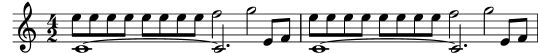
Vous remarquerez que la retouche continue de s’appliquer au second bloc de croches de la deuxième voix mais qu’il ne s’applique à aucune des ligatures de la première voix, même dans la seconde mesure. Dès que la dérogation ne doit plus s’appliquer, il suffit de l’annuler comme indiqué ici.
| [ << Retouche de partition ] | [Top][Contents][Index] | [ Modèles >> ] |
[ < La propriété positions ] | [ Up: Correction des collisions d’objets ] | [ Exemple concret > ] |
La propriété force-hshift
Maintenant, nous sommes prêts à appliquer les dernières corrections à l’exemple de Chopin présenté à la fin de J’entends des voix, que nous avions laissé dans cet état :
\new Staff \relative { \key aes \major << { c''2 aes4. bes8 } \\ { <ees, c>2 des } \\ \\ { aes'2 f4 fes } >> | <c ees aes c>1 | }![[image of music]](47/lily-66aa6df7.png)
La note intermédiaire du premier accord, le la bémol à la quatrième
voix, doit rester dans le même empilement que la note haute, ce pourquoi
nous utilisons un \shiftOff
Quant au second accord, il serait préférable que le fa s’aligne avec le
la et que la note la plus basse se positionne un peu plus sur la droite
pour éviter que les hampes se chevauchent. Pour cela, nous réglons le
force-hshift au niveau du NoteColumn du ré bémol de telle
sorte qu’il se déplace de la moitié d’un espace de portée vers la droite
et le force-hshift du fa sur zéro. Vous noterez la présence du
\once qui évite la propagation de ces réglages au-delà de cet
instant musical particulier – bien que la présence du \once et
du second \override de la quatrième voix ne soient pas
indispensables dans ce court extrait, ce ne serait pas montrer l’exemple
que de les omettre.
Et voici le résultat final :
\new Staff \relative { \key aes \major << { c''2 aes4. bes8 } \\ { <ees, c>2 \once \override NoteColumn.force-hshift = #0.5 des } \\ \\ { \once \shiftOff aes'2 \once \shiftOff f4 fes } >> | <c ees aes c>1 | }![[image of music]](cc/lily-66fdcf88.png)
| [ << Retouche de partition ] | [Top][Contents][Index] | [ Modèles >> ] |
[ < La propriété force-hshift ] | [ Up: Collisions d’objets ] | [ Autres retouches > ] |
5.7.3 Exemple concret
Pour terminer ce chapitre consacré aux retouches, voici, étape par étape, la mise en forme d’un exemple concret nécessitant un certain nombre de retouches jusqu’à l’obtention du résultat attendu. Cet exemple a été choisi en raison des problèmes inhabituels de notation qu’il soulevait et pour vous apprendre à les résoudre grâce au Manuel de notation. Il n’est pas représentatif d’une opération normale de gravure ; que ces difficultés ne vous découragent donc pas ! Des difficultés comme celles-ci ne sont, heureusement, pas courantes.
Cet exemple est tiré de la Première Ballade de Chopin, Op. 23, mesures 6 à 9 ; cela correspond à la transition entre le Lento d’ouverture et le Moderato.6 Voici, pour commencer, ce à quoi nous voulons que la partition ressemble ; pour limiter les complications, nous n’avons pas fait apparaître les indications de nuance, de doigté ni de pédale, et n’avons pas poussé les affinages autant qu’il aurait été possible.
![[image of music]](4c/lily-62ea7c20.png)
Nous constatons tout d’abord que, dans la troisième mesure, la main droite compte quatre voix. Ce sont les cinq croches avec une barre, le do avec liaison, le ré blanche qui se fond avec le ré croche, et le fa dièse noire pointée qui se fond lui aussi avec la croche de même hauteur. Tout le reste se réduit à une seule voix. Le plus simple est donc de créer temporairement ces trois voix supplémentaires au moment opportun. Si vous avez oublié comment faire, reportez-vous à J’entends des voix et Instanciation explicite des voix. Nous opterons ici pour une déclaration explicite des voix du passage polyphonique, puisque LilyPond est alors plus performant en matière d’évitement des collisions.
Commençons par saisir les notes comme appartenant à deux variables,
mettons en place l’ossature des portées dans un bloc \Score et
voyons ce que LilyPond propose par défaut :
rhMusic = \relative { \new Voice { r2 c''4. g8 | bes1~ | \time 6/4 bes2. r8 % Start polyphonic section of four voices << { c,8 d fis bes a } % continuation of main voice \new Voice { \voiceTwo c,8~ 2 } \new Voice { \voiceThree s8 d2 } \new Voice { \voiceFour s4 fis4. } >> | g2. % continuation of main voice } } lhMusic = \relative { r2 <c' g ees>2 | <d g, d>1 | r2. d,,4 r4 r | r4 } \score { \new PianoStaff << \new Staff = "RH" << \key g \minor \rhMusic >> \new Staff = "LH" << \key g \minor \clef "bass" \lhMusic >> >> }![[image of music]](5a/lily-b62264bc.png)
Toutes les notes sont correctes mais l’allure générale est loin d’être satisfaisante. La liaison se heurte à l’indication de mesure lors du changement de métrique, la ligature des croches n’est pas bonne dans la troisième mesure, les notes ne sont pas fusionnées et il manque plusieurs éléments de notation. Commençons par le plus simple. Nous pouvons corriger la ligature des croches en la créant manuellement et nous pouvons facilement ajouter les limites droite et gauche de la liaison de phrasé, puisque tout cela a déjà été traité dans le tutoriel. Voici le résultat :
rhMusic = \relative { \new Voice { r2 c''4.\( g8 | bes1~ | \time 6/4 bes2. r8 % Start polyphonic section of four voices << { c,8 d fis bes a } % continuation of main voice \new Voice { \voiceTwo c,8~ 2 } \new Voice { \voiceThree s8 d2 } \new Voice { \voiceFour s4 fis4. } >> | g2.\) % continuation of main voice } } lhMusic = \relative { r2 <c' g ees>2( | <d g, d>1) | r2. d,,4 r4 r | r4 } \score { \new PianoStaff << \new Staff = "RH" << \key g \minor \rhMusic >> \new Staff = "LH" << \key g \minor \clef "bass" \lhMusic >> >> }![[image of music]](55/lily-2194611a.png)
La première mesure est maintenant correcte. La seconde contient un
arpège et doit se terminer par une double barre. Comment faire, puisque
cela n’a pas été traité dans le Manuel d’initiation ? C’est alors qu’il
faut nous reporter au Manuel de notation. Quand on cherche « arpège » et
« barre de mesure » dans l’index, on voit aisément qu’il faut ajouter
\arpeggio à un accord pour produire un arpège et qu’une double
barre est le résultat de la commande \bar "||". Rien de plus
facile ! Nous devons ensuite corriger la collision entre la liaison et
l’indication de mesure. Le mieux est de déplacer la liaison vers le
haut.7 La
méthode pour déplacer les objets a déjà été présentée dans Déplacement d’objets, et l’on sait que, pour des objets positionnés par rapport à la
portée, il nous faut modifier leur propriété staff-position,
exprimée en demi-intervalles de lignes par rapport à la ligne médiane de
la portée. Voici donc la retouche à insérer juste devant la première
note liée ; elle est censée déplacer la liaison vers le haut de 3,5
demi-intervalles de lignes au-dessus de la ligne médiane :
\once \override Tie.staff-position = 3.5
Cela s’adjoint à la deuxième mesure, pour donner :
rhMusic = \relative { \new Voice { r2 c''4.\( g8 | \once \override Tie.staff-position = 3.5 bes1~ | \bar "||" \time 6/4 bes2. r8 % Start polyphonic section of four voices << { c,8 d fis bes a } % continuation of main voice \new Voice { \voiceTwo c,8~ 2 } \new Voice { \voiceThree s8 d2 } \new Voice { \voiceFour s4 fis4. } >> | g2.\) % continuation of main voice } } lhMusic = \relative { r2 <c' g ees>2( | <d g, d>1)\arpeggio | r2. d,,4 r4 r | r4 } \score { \new PianoStaff << \new Staff = "RH" << \key g \minor \rhMusic >> \new Staff = "LH" << \key g \minor \clef "bass" \lhMusic >> >> }![[image of music]](96/lily-cf2e94e1.png)
Venons-en à la troisième mesure et au début de la section Moderato. Dans
le Tutoriel, il est indiqué comment insérer une indication de tempo à
l’aide de la commande \tempo ; pas de problème, du coup, pour
ajouter « Moderato ». Mais comment faire pour fusionner les notes de
différentes voix ? C’est là que le Manuel de notation peut nous venir en
aide. Une recherche sur « fusionnement de notes » dans l’index nous
renvoie au chapitre Résolution des
collisions, et plus précisément aux commandes permettant de fusionner
des notes en fonction de leur type et selon qu’elles sont pointées ou
non. Dans notre exemple, pour la durée de la polyphonie de la troisième
mesure, nous avons besoin de fusionner deux types de notes ; grâce aux
informations trouvées dans le Manuel de notation, nous ajoutons
\mergeDifferentlyHeadedOn \mergeDifferentlyDottedOn
au début de cette section et
\mergeDifferentlyHeadedOff \mergeDifferentlyDottedOff
à la fin, ce qui donne :
rhMusic = \relative { \new Voice { r2 c''4.\( g8 | \once \override Tie.staff-position = 3.5 bes1~ | \bar "||" \time 6/4 bes2.\tempo "Moderato" r8 \mergeDifferentlyHeadedOn \mergeDifferentlyDottedOn % Start polyphonic section of four voices << { c,8 d fis bes a } % continuation of main voice \new Voice { \voiceTwo c,8~ 2 } \new Voice { \voiceThree s8 d2 } \new Voice { \voiceFour s4 fis4. } >> | \mergeDifferentlyHeadedOff \mergeDifferentlyDottedOff g2.\) % continuation of main voice } } lhMusic = \relative { r2 <c' g ees>2( | <d g, d>1)\arpeggio | r2. d,,4 r4 r | r4 } \score { \new PianoStaff << \new Staff = "RH" << \key g \minor \rhMusic >> \new Staff = "LH" << \key g \minor \clef "bass" \lhMusic >> >> }![[image of music]](58/lily-1a1399d5.png)
Ces retouches ont permis de fusionner les deux fa dièse mais pas les
deux ré. Pourquoi ? La réponse se trouve dans la même section du Manuel
de notation : les notes à fusionner doivent avoir des hampes dans des
directions opposées et deux notes ne peuvent pas être fusionnées s’il y
a une troisième note dans la même colonne. Ici, les deux ré ont leur
hampe orientée vers le haut et il y a une troisième note, do. Nous
savons changer l’orientation de la hampe avec \stemDown et le
Manuel de notation nous indique également comment déplacer le do – en
produisant un décalage grâce à l’une des commandes \shift. Mais
laquelle ? Le do appartient à la deuxième voix et n’est pas décalé ; les
deux ré appartiennent respectivement à la première et à la troisième
voix, et l’un n’est pas décalé tandis que l’autre l’est. Il nous faut
donc décaler largement le do avec la commande \shiftOnn pour
éviter une interférence avec les deux ré. Voici ce que donnent ces
modifications :
rhMusic = \relative { \new Voice { r2 c''4.\( g8 | \once \override Tie.staff-position = 3.5 bes1~ | \bar "||" \time 6/4 bes2.\tempo "Moderato" r8 \mergeDifferentlyHeadedOn \mergeDifferentlyDottedOn % Start polyphonic section of four voices << { c,8 d fis bes a } % continuation of main voice \new Voice { \voiceTwo % Move the c2 out of the main note column % so the merge will work c,8~ \shiftOnn c2 } \new Voice { \voiceThree % Stem on the d2 must be down to permit merging s8 \stemDown d2 } \new Voice { \voiceFour s4 fis4. } >> | \mergeDifferentlyHeadedOff \mergeDifferentlyDottedOff g2.\) % continuation of main voice } } lhMusic = \relative { r2 <c' g ees>2( | <d g, d>1)\arpeggio | r2. d,,4 r4 r | r4 } \score { \new PianoStaff << \new Staff = "RH" << \key g \minor \rhMusic >> \new Staff = "LH" << \key g \minor \clef "bass" \lhMusic >> >> }![[image of music]](9d/lily-e49869d1.png)
Pas loin ! Il ne reste plus que deux problèmes : les ré une fois
fusionnés ne devraient plus avoir de hampe vers le bas, et le do serait
mieux à la droite des ré. Nous savons remédier à ces deux problèmes
grâce aux retouches précédentes : nous allons rendre la hampe
transparente et déplacer le do avec la propriété force-hshift. Et
voici le résultat final :
rhMusic = \relative { \new Voice { r2 c''4.\( g8 | \once \override Tie.staff-position = 3.5 bes1~ | \bar "||" \time 6/4 bes2.\tempo "Moderato" r8 \mergeDifferentlyHeadedOn \mergeDifferentlyDottedOn % Start polyphonic section of four voices << { c,8 d fis bes a } % continuation of main voice \new Voice { \voiceTwo c,8~ % Reposition the c2 to the right of the merged note \once \override NoteColumn.force-hshift = 1.0 % Move the c2 out of the main note column % so the merge will work \shiftOnn c2 } \new Voice { \voiceThree s8 % Stem on the d2 must be down to permit merging \stemDown % Stem on the d2 should be invisible \tweak Flag.transparent ##t d2 } \new Voice { \voiceFour s4 fis4. } >> | \mergeDifferentlyHeadedOff \mergeDifferentlyDottedOff g2.\) % continuation of main voice } } lhMusic = \relative { r2 <c' g ees>2( | <d g, d>1)\arpeggio | r2. d,,4 r4 r | r4 } \score { \new PianoStaff << \new Staff = "RH" << \key g \minor \rhMusic >> \new Staff = "LH" << \key g \minor \clef "bass" \lhMusic >> >> }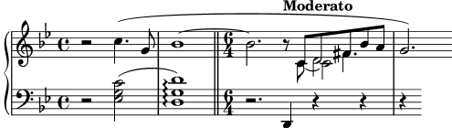
| [ << Retouche de partition ] | [Top][Contents][Index] | [ Modèles >> ] |
| [ < Exemple concret ] | [ Up: Retouche de partition ] | [ Autres utilisations des retouches > ] |
5.8 Autres retouches
Nous avons pratiquement fait le tour de cette introduction aux retouches. Quelques aspects méritent un peu d’attention.
| 5.8.1 Autres utilisations des retouches | ||
| 5.8.2 Utilisation de variables dans les retouches | ||
| 5.8.3 Feuilles de style | ||
| 5.8.4 Autres sources de documentation | ||
| 5.8.5 Retouches avancées avec Scheme |
| [ << Retouche de partition ] | [Top][Contents][Index] | [ Modèles >> ] |
| [ < Autres retouches ] | [ Up: Autres retouches ] | [ Liaison entre plusieurs voix > ] |
5.8.1 Autres utilisations des retouches
Nous allons ici aborder des situations qui se produisent régulièrement dans les partitions courantes.
| Liaison entre plusieurs voix | ||
| Rendu MIDI d’un point d’orgue |
| [ << Retouche de partition ] | [Top][Contents][Index] | [ Modèles >> ] |
| [ < Autres utilisations des retouches ] | [ Up: Autres utilisations des retouches ] | [ Rendu MIDI d’un point d’orgue > ] |
Liaison entre plusieurs voix
Voici un exemple qui montre comment créer une liaison de prolongation entre des notes appartenant à des voix différentes. En temps normal, seules deux notes appartenant à une même voix peuvent être ainsi liées. La solution consiste à utiliser deux voix, dont l’une avec les notes liées,
![[image of music]](c7/lily-4e887282.png)
et à supprimer la première hampe ascendante et le crochet dans cette voix ; on a alors l’impression que la liaison couvre les deux voix.
<< { \once \omit Stem \once \omit Flag b'8~ 8\noBeam } \\ { b'[ g8] } >>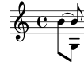
Voir aussi
Manuel d’initiation :
Le préfixe \once,
La propriété stencil.
| [ << Retouche de partition ] | [Top][Contents][Index] | [ Modèles >> ] |
| [ < Liaison entre plusieurs voix ] | [ Up: Autres utilisations des retouches ] | [ Utilisation de variables dans les retouches > ] |
Rendu MIDI d’un point d’orgue
En ce qui concerne les objets extérieurs à la portée, quand on veut les
faire disparaître de la partition imprimée, il est généralement
préférable de modifier leur propriété stencil plutôt que leur
propriété transparent. Le fait d’attribuer à la propriété
stencil d’un objet la valeur #f supprimera entièrement
celui-ci de la partition. Il ne risquera donc pas de gêner le placement
d’autres objets.
Par exemple, si nous voulons changer le réglage de métronome pour
simuler un point d’orgue dans le fichier MIDI, nous ne voulons surtout
pas que cette indication métronomique apparaisse sur la partition ni
qu’elle influence l’espacement entre les deux systèmes ou la position
des annotations voisines sur la portée. Le fait d’attribuer à la
propriété stencil la valeur #f est donc la bonne solution.
Nous montrons ci-dessous le résultat des deux méthodes :
\score { \relative { % Visible tempo marking \tempo 4=120 a'4 a a \once \hide Score.MetronomeMark % Invisible tempo marking to lengthen fermata in MIDI \tempo 4=80 a4\fermata | % New tempo for next section \tempo 4=100 a4 a a a | } \layout { } \midi { } }![[image of music]](91/lily-8c2b82c3.png)
\score { \relative { % Visible tempo marking \tempo 4=120 a'4 a a \once \omit Score.MetronomeMark % Invisible tempo marking to lengthen fermata in MIDI \tempo 4=80 a4\fermata | % New tempo for next section \tempo 4=100 a4 a a a | } \layout { } \midi { } }![[image of music]](a0/lily-456bede5.png)
Les deux méthodes permettent d’enlever l’indication métronomique qui allonge le point d’orgue de la partition, et toutes deux modifient le rythme MIDI comme souhaité mais, dans la première, l’indication métronomique transparente repousse vers le haut l’indication de tempo, contrairement à la seconde (avec le stencil désactivé) qui la laisse à sa place.
Voir aussi
Glossaire musicologique : système.
| [ << Retouche de partition ] | [Top][Contents][Index] | [ Modèles >> ] |
| [ < Rendu MIDI d’un point d’orgue ] | [ Up: Autres retouches ] | [ Feuilles de style > ] |
5.8.2 Utilisation de variables dans les retouches
Les commandes de retouche sont souvent longues et pénibles à taper, et ne tolèrent pas la moindre erreur. Lorsqu’on a besoin de faire plusieurs fois les mêmes retouches, il est préférable de définir des variables qui les contiennent.
Imaginons que nous voulions accentuer certains mots dans des paroles en
les mettant en italique. Au lieu des commandes \italic et
\bold, qui ne fonctionnent dans les paroles que si elles sont
enchâssées dans un \markup – ce qui les rend pénibles à saisir
– pouvons-nous employer les commandes \override et
\revert ?
\override Lyrics.LyricText.font-shape = #'italic \override Lyrics.LyricText.font-series = #'bold \revert Lyrics.LyricText.font-shape \revert Lyrics.LyricText.font-series
Là encore, ce serait extrêmement pénible à saisir, surtout s’il y avait
beaucoup de mots à retoucher de cette façon. Plutôt que cette solution,
nous déclarons ces commandes comme étant deux variables, et les
utilisons comme ci-après – quoique on choisirait sans doute pour les
variables des noms plus courts pour simplifier la frappe. Par ailleurs,
le fait de recourir à une variable ne nous expose plus à l’oubli des
espaces entourant les points lorsqu’explicités au beau milieu d’un bloc
\lyricmode !
emphasize = { \override Lyrics.LyricText.font-shape = #'italic \override Lyrics.LyricText.font-series = #'bold } normal = { \revert Lyrics.LyricText.font-shape \revert Lyrics.LyricText.font-series } global = { \key c \major \time 4/4 \partial 4 } SopranoMusic = \relative { c'4 | e4. e8 g4 g | a4 a g } AltoMusic = \relative { c'4 | c4. c8 e4 e | f4 f e } TenorMusic = \relative { e4 | g4. g8 c4. b8 | a8 b c d e4 } BassMusic = \relative { c4 | c4. c8 c4 c | f8 g a b c4 } VerseOne = \lyricmode { E -- | ter -- nal \emphasize Fa -- ther, | \normal strong to save, } VerseTwo = \lyricmode { O | \emphasize Christ, \normal whose voice the | wa -- ters heard, } VerseThree = \lyricmode { O | \emphasize Ho -- ly Spi -- rit, | \normal who didst brood } VerseFour = \lyricmode { O | \emphasize Tri -- ni -- ty \normal of | love and pow'r } \score { \new ChoirStaff << \new Staff << \clef "treble" \new Voice = "Soprano" { \voiceOne \global \SopranoMusic } \new Voice = "Alto" { \voiceTwo \AltoMusic } \new Lyrics \lyricsto "Soprano" { \VerseOne } \new Lyrics \lyricsto "Soprano" { \VerseTwo } \new Lyrics \lyricsto "Soprano" { \VerseThree } \new Lyrics \lyricsto "Soprano" { \VerseFour } >> \new Staff << \clef "bass" \new Voice = "Tenor" { \voiceOne \TenorMusic } \new Voice = "Bass" { \voiceTwo \BassMusic } >> >> }![[image of music]](e0/lily-291dfe30.png)
| [ << Retouche de partition ] | [Top][Contents][Index] | [ Modèles >> ] |
| [ < Utilisation de variables dans les retouches ] | [ Up: Autres retouches ] | [ Autres sources de documentation > ] |
5.8.3 Feuilles de style
La sortie que produit LilyPond peut être largement modifiée – see Retouche de partition pour plus de détails. Mais que faire si vous avez beaucoup de fichiers auxquels vous souhaitez appliquer vos retouches ? Ou si vous souhaitez simplement séparer les retouches de la musique elle-même ? Rien de plus facile.
Prenons un exemple. Ne vous inquiétez pas si vous ne comprenez pas les
parties avec tous les #(…). Celles-ci sont expliquées dans
Retouches avancées avec Scheme.
mpdolce = \tweak self-alignment-X -0.6 #(make-dynamic-script #{ \markup { \dynamic mp \normal-text \italic \bold dolce } #}) inst = #(define-music-function (string) (string?) #{ <>^\markup \bold \box #string #}) \relative { \tempo 4=50 a'4.\mpdolce d8 cis4--\glissando a | b4 bes a2 | \inst "Clarinet" cis4.\< d8 e4 fis | g8(\! fis)-. e( d)-. cis2 | }![[image of music]](eb/lily-67f5fb19.png)
On peut faire quelque chose pour les définitions de mpdolce et
inst. Elles produisent le résultat que nous désirons, mais nous
pourrions aussi vouloir les utiliser dans une autre pièce. Il suffirait
de les copier et coller au début de chaque fichier, mais c’est
fastidieux. De plus, cela laisse les définitions dans nos fichiers de
musique, et je trouve personnellement tous ces #() assez laids.
Stockons-les dans un autre fichier :
%%% enregistrez ceci dans un fichier nommé "definitions.ily"
mpdolce =
\tweak self-alignment-X -0.6
#(make-dynamic-script
#{ \markup { \dynamic mp \normal-text \italic \bold dolce } #})
inst =
#(define-music-function
(string)
(string?)
#{ <>^\markup \bold \box #string #})
Nous rappellerons ce fichier par une simple commande \include au
début de notre fichier de musique. Lui attribuer l’extension .ily
nous permet de distinguer aisément qu’il s’agit d’un fichier voué à être
inclus dans un fichier maître ; il n’est pas destiné à être compilé
isolément.
Maintenant, modifions notre musique (enregistrez ce fichier sous
musique.ly).
\include "definitions.ily"
\relative {
\tempo 4=50
a'4.\mpdolce d8 cis4--\glissando a |
b4 bes a2 |
\inst "Clarinet"
cis4.\< d8 e4 fis |
g8(\! fis)-. e( d)-. cis2 |
}
C’est mieux, mais effectuons encore quelques retouches. Le glissando est peu visible, c’est pourquoi nous allons l’épaissir et le rapprocher des têtes de note. Déplaçons l’indication métronomique au-dessus de la clef, au lieu de la laisser au-dessus de la première note. Et pour finir, mon professeur de composition déteste les chiffrages de mesure en « C », nous allons donc le transformer en « 4/4 ».
Cependant, ne changez pas le fichier musique.ly. Remplacez le fichier definitions.ily par ceci :
%%% definitions.ily
mpdolce =
\tweak self-alignment-X -0.6
#(make-dynamic-script
#{ \markup { \dynamic mp \normal-text \italic \bold dolce } #})
inst =
#(define-music-function
(string)
(string?)
#{ <>^\markup \bold \box #string #})
\layout{
\context {
\Score
\override MetronomeMark.extra-offset = #'(-5 . 0)
\override MetronomeMark.padding = 3
}
\context {
\Staff
\numericTimeSignature
}
\context {
\Voice
\override Glissando.thickness = 3
\override Glissando.gap = 0.1
}
}
![[image of music]](7a/lily-af5927b5.png)
C’est encore mieux ! Mais supposons maintenant que je veuille publier cette pièce. Mon professeur de composition n’aime pas les chiffrages de mesure en « C », mais moi je les aime bien. Copions l’actuel definitions.ily dans le fichier publication-web.ily, et modifions ce dernier. Puisque la musique est destinée à produire un fichier PDF affiché sur écran, nous allons aussi augmenter la taille globale de police.
%%% web-publish.ily
mpdolce =
\tweak self-alignment-X -0.6
#(make-dynamic-script
#{ \markup { \dynamic mp \normal-text \italic \bold dolce } #})
inst =
#(define-music-function
(string)
(string?)
#{ <>^\markup \bold \box #string #})
#(set-global-staff-size 23)
\layout{
\context {
\Score
\override MetronomeMark.extra-offset = #'(-5 . 0)
\override MetronomeMark.padding = 3
}
\context {
\Staff
}
\context {
\Voice
\override Glissando.thickness = 3
\override Glissando.gap = 0.1
}
}
![[image of music]](df/lily-56ed0f9a.png)
Il ne nous reste plus qu’à remplacer \include "definitions.ily"
par \include "publication-web.ily" dans notre fichier de musique.
Il est possible, bien sûr, de rendre cela encore plus pratique. Nous
pourrions créer un fichier definitions.ily qui ne contiendrait
que les définitions de \mpdolce et de \inst, un fichier
publication-web.ily qui ne contiendrait que la section
\layout décrite ci-dessus et un fichier universite.ily qui
ne contiendrait que les retouches pour produire le résultat que mon
professeur préfère. Le début du fichier musique.ly ressemblerait
alors à
\include "definitions.ily" %%% Décommentez seulement une de ces deux lignes ! \include "publication-web.ily" %\include "universite.ily"
Cette approche peut être utile même si vous ne produisez qu’un seul jeu
de partitions. J’utilise personnellement une demi-douzaine de fichiers
de « feuille de style » pour mes projets. Je commence chaque fichier de
musique par \include "../global.ily" qui contient :
%%% global.ily \version "2.26.0" #(ly:set-option 'point-and-click #f) \include "../init/init-defs.ly" \include "../init/init-mise-en-page.ly" \include "../init/init-en-tetes.ly" \include "../init/init-papier.ly"
| [ << Retouche de partition ] | [Top][Contents][Index] | [ Modèles >> ] |
| [ < Feuilles de style ] | [ Up: Autres retouches ] | [ Retouches avancées avec Scheme > ] |
5.8.4 Autres sources de documentation
La référence des propriétés internes contient beaucoup d’informations sur LilyPond. Cependant vous pouvez en découvrir encore plus en consultant les fichiers internes de LilyPond. Pour cela, il vous faut d’abord connaître le répertoire ad hoc sur votre système. Si vous tapez
lilypond --help
sur la ligne de commande, le dossier racine de l’aborescence des données de LilyPond s’affiche vers la fin de la fenêtre d’aide ; quelque chose comme
Répertoire racine des données de LilyPond : '/usr/local/share/lilypond/2.26.0'
Dans ce répertoire, deux sous-répertoires sont particulièrement intéressants :
- ly/
contient les fichiers en format LilyPond
- scm/
contient les fichiers en format Scheme
Commençons par examiner quelques fichiers contenus dans ly/. Nous
ouvrons ly/property-init.ly dans un éditeur de texte – celui que
vous avez l’habitude d’utiliser pour les fichiers .ly fera très
bien l’affaire. Ce fichier contient les définitions de toutes les
commandes standard prédéfinies de LilyPond, comme \tieUp et
\slurDotted. Vous pouvez constater que ce n’est rien d’autre que
des définitions de variables composées d’un ou plusieurs groupes de
commandes \override. Par exemple, \textLengthOn est défini
comme :
textLengthOn = {
% 0.4 staff-space between adjacent texts
\override TextScript.extra-spacing-width = #'(-0.0 . 0.4)
\override TextScript.extra-spacing-height = #'(-inf.0 . +inf.0)
}
Si vous n’aimez pas les valeurs par défaut, les commandes prédéfinies peuvent être facilement redéfinies, comme n’importe quelle autre variable, en tête de votre fichier d’entrée.
Voici les fichiers les plus utiles dans le répertoire ly/ :
Nom de fichier Contenu ly/engraver-init.ly Définition des contextes de graveur ly/paper-defaults-init.ly Réglages papier par défaut ly/performer-init.ly Définition des contextes d’interprétation ly/property-init.ly Définition de toutes les commandes prédéfinies courantes ly/spanner-init.ly Définition des commandes prédéfinies pour les bandeaux
Les autres réglages (comme les définitions de commandes markup) sont conservés comme fichiers .scm (Scheme). Le langage de programmation Scheme offre une interface programmable dans le processus interne de LilyPond. De plus amples explications sur ces fichiers dépasseraient le cadre de ce manuel dans la mesure où elles requièrent la connaissance du langage Scheme. Les utilisateurs qui souhaiteraient comprendre le fonctionnement de ces fichiers de configuration doivent être avertis que des connaissances techniques substantielles et beaucoup de temps sont nécessaires (voir le Tutoriel Scheme).
Si c’est votre cas, les fichiers Scheme les plus utiles à connaître sont :
Nom de fichier Contenu scm/auto-beam.scm Règles par défaut des ligatures subalternes scm/define-grobs.scm Réglages par défaut des propriétés de grobs scm/define-markup-commands.scm Spécification de toutes les commandes de markup scm/midi.scm Réglages par défaut pour les sorties MIDI scm/output-lib.scm Réglages affectant l’apparence des frets, couleurs, altérations, barres de mesure, etc. scm/parser-clef.scm Définition des clefs prises en charge scm/script.scm Réglages par défaut des articulations
| [ << Retouche de partition ] | [Top][Contents][Index] | [ Modèles >> ] |
| [ < Autres sources de documentation ] | [ Up: Autres retouches ] | [ Modèles > ] |
5.8.5 Retouches avancées avec Scheme
Nous avons vu à quel point le résultat obtenu avec LilyPond peut être
largement personnalisé à l’aide de commandes comme \override et
\tweak. Et pourtant l’utilisation de Scheme ouvre des
possibilités encore plus grandes. Le code écrit dans le langage de
programmation Scheme peut être intégré directement dans le processus
interne de LilyPond. Bien sûr, il faut pour cela connaître un minimum de
programmation en langage Scheme. Pour des explications complètes
là-dessus, consultez le Tutoriel Scheme.
En guise d’illustration – et ce n’est qu’une possibilité parmi tant d’autres – nous allons attribuer à une propriété non pas une valeur préétablie mais une procédure Scheme qui sera lancée à chaque utilisation de la propriété par LilyPond. De cette façon, nous obtenons un réglage dynamique de la propriété par le simple fait d’invoquer la procédure. Dans cet exemple, nous colorons les têtes de notes en fonction de leur position sur la portée.
#(define (color-notehead grob) "Color the notehead according to its position on the staff." (let ((mod-position (modulo (ly:grob-property grob 'staff-position) 7))) (case mod-position ;; Return rainbow colors ((1) (x11-color 'red )) ; for C ((2) (x11-color 'orange )) ; for D ((3) (x11-color 'yellow )) ; for E ((4) (x11-color 'green )) ; for F ((5) (x11-color 'blue )) ; for G ((6) (x11-color 'purple )) ; for A ((0) (x11-color 'violet )) ; for B ))) \relative { % Arrange to obtain color from color-notehead procedure \override NoteHead.color = #color-notehead a2 b | c2 d | e2 f | g2 a | }![[image of music]](b5/lily-06d62cc9.png)
Vous trouverez dans Fonctions de rappel d’autres exemples d’utilisation de ces interfaces programmables.
| [ << Retouche de partition ] | [Top][Contents][Index] | [ GNU Free Documentation License >> ] |
| [ < Retouches avancées avec Scheme ] | [ Up: Top ] | [ Gabarits préprogrammés > ] |
Appendix A Modèles
Cette annexe du manuel d’initiation propose des patrons de partition LilyPond, prets à l’emploi. Il vous suffira d’y ajouter quelques notes, de lancer LilyPond, et d’aprécier le résultat.
| [ << Modèles ] | [Top][Contents][Index] | [ GNU Free Documentation License >> ] |
| [ < Modèles ] | [ Up: Modèles ] | [ Gabarit pour chœur à quatre voix mixtes > ] |
A.1 Gabarits préprogrammés
LilyPond est livré avec plusieurs gabarits convenant à différentes
configurations chorales. Ils permettent de gérer de la musique chorale
simple, avec ou sans accompagnement de piano, présentée sur deux, quatre
ou huit portées. Contrairement aux autre gabarits, celui-ci est
« préprogrammé », ce qui signifie qu’il ne nécessite pas d’être recopié
et édité ; il suffit en fait d’ajouter une instruction \include
au fichier source.
Note : Contrairement à la plupart des inclusions, la commande
\include traitant ces gabarits préprogrammés doit se placer
à la fin du fichier source.
Les expressions musicales nécessaires sont affectées à des variables
spécifiques. Ces définitions doivent intervenir avant la commande
\include.
La musique peut se présenter en une ou deux voix par portée à l’aide du
commutateur TwoVoicesPerStaff (DeuxVoixParPortée) –
valorisé à ##f ou ##t selon le cas.
| A.1.1 Gabarit pour chœur à quatre voix mixtes | ||
| A.1.2 Gabarit pour double chœur à quatre voix mixtes |
| [ << Modèles ] | [Top][Contents][Index] | [ GNU Free Documentation License >> ] |
| [ < Gabarits préprogrammés ] | [ Up: Gabarits préprogrammés ] | [ Gabarit pour double chœur à quatre voix mixtes > ] |
A.1.1 Gabarit pour chœur à quatre voix mixtes
Voici l’intégralité d’un fichier permettant d’obtenir une partition pour chœur à quatre voix avec paroles individuelles et accompagnement de piano :
SopranoMusic = \relative { a'4\f a8 a a4 a } SopranoLyrics = \lyricmode { Sop -- ra -- no ly -- rics } AltoMusic = \relative { d'4\f d d d } AltoLyrics = \lyricmode { Al -- to ly -- rics } TenorMusic = \relative { a4\p a a a } TenorLyrics = \lyricmode { Te -- nor ly -- rics } BassMusic = \relative { c2\p c4 c } BassLyrics = \lyricmode { Bass ly -- rics } PianoRHMusic = \relative { c' e g c } PianoDynamics = { s2\mp s4 s4 } PianoLHMusic = \relative { c e g c } \include "satb.ly"![[image of music]](92/lily-4efaea3e.png)
Ce même fichier peut servir à générer une partition dans laquelle deux
voix partagent une même portée, après avoir simplement commuté
TwoVoicesPerStaff à ##t. Chaque voix dispose à nouveau de
ses propres paroles.
SopranoMusic = \relative { a'4\f a8 a a4 a } SopranoLyrics = \lyricmode { Sop -- ra -- no ly -- rics } AltoMusic = \relative { d'4\f d d d } AltoLyrics = \lyricmode { Al -- to ly -- rics } TenorMusic = \relative { a4\p a a a } TenorLyrics = \lyricmode { Te -- nor ly -- rics } BassMusic = \relative { c2\p c4 c } BassLyrics = \lyricmode { Bass ly -- rics } PianoRHMusic = \relative { c' e g c } PianoDynamics = { s2\mp s4 s4 } PianoLHMusic = \relative { c e g c } TwoVoicesPerStaff = ##t \include "satb.ly"![[image of music]](74/lily-53a2f72e.png)
Désactiver TwoVoicesPerStaff, ou le laisser à sa valeur par
défaut, et se limiter à certaines variables seulement permet d’obtenir
un agencement pour moins de voix. Voici, par exemple, comment saisir un
duo soprano basse :
SopranoMusic = \relative { c'' c c c } SopranoLyrics = \lyricmode { High voice ly -- rics } BassMusic = \relative { a a a a } BassLyrics = \lyricmode { Low voice ly -- rics } \include "satb.ly"![[image of music]](f7/lily-e46f8aeb.png)
Chacune des parties peut se voir adjoindre un deuxième couplet ou des paroles alternatives :
SopranoMusic = \relative { a'4 a a a } SopranoLyricsOne = \lyricmode { \set stanza = "1." Words to verse one } SopranoLyricsTwo = \lyricmode { \set stanza = "2." Words to verse two } \include "satb.ly"![[image of music]](b6/lily-26574698.png)
Lorsque paroles et rythme sont identiques à toutes les voix, la partition peut s’agencer sur deux portées, chacune comportant deux voix. Le gabarit préprogrammé autorise jusqu’à neuf couplets. L’exemple suivant, dépourvu d’accompagnement, se contente de trois couplets.
SopranoMusic = \relative { a' a a a } AltoMusic = \relative { f' f f f } VerseOne = \lyricmode { \set stanza = "1." Words to verse one } VerseTwo = \lyricmode { \set stanza = "2." Words to verse two } VerseThree = \lyricmode { \set stanza = "3." Words to verse three } TenorMusic = \relative { a a a a } BassMusic = \relative { f f f f } TwoVoicesPerStaff = ##t \include "satb.ly"![[image of music]](f7/lily-a24e6660.png)
Dautres variables peuvent se voir attribuer une valeur. C’est notamment le cas de la tonalité et de la métrique :
Key = \key a \major Time = { \time 5/4 \tempo "Allegro" 4 = 144 } SopranoMusic = \relative { gis' gis gis gis gis } AltoMusic = \relative { cis' cis cis cis cis } VerseOne = \lyricmode { Words to this du -- et } TwoVoicesPerStaff = ##t \include "satb.ly"![[image of music]](bc/lily-84af7130.png)
Les intitulés d’instrument, ainsi que leur version abrégée, sont modifiables :
SopranoMusic = \relative { c'' c c c } SopranoLyrics = \lyricmode { High voice ly -- rics } SopranoInstrumentName = "Soprano 1" SopranoShortInstrumentName = "S1" AltoMusic = \relative { a' a a a } AltoLyrics = \lyricmode { Low voice ly -- rics } AltoInstrumentName = "Soprano 2" AltoShortInstrumentName = "S2" \include "satb.ly"![[image of music]](e5/lily-25a0fbc4.png)
bien que, dans ce cas particulier, il est plus simple d’utiliser le
gabarit ssaattbb.ly – see Gabarit pour double chœur à quatre voix mixtes.
Une partie de soliste s’ajoute à l’aide de la variable
DescantMusic, à laquelle s’appliqueront les paroles contenues
dans la variable DescantLyrics. De la même manière, une partie de
solo peut s’ajouter au-dessus du chœur en alimentant les variables
SoloMusic et SoloLyrics.
Comme pour n’importe quelle partition, vous pouvez y ajouter des blocs
\header et \paper en tête de fichier ; leur contenu sera
combiné (sans les remplacer) aux réglages du gabarit préprogrammé. Tous
les réglages par défaut du gabarit seront annulés dès lors que
toutes ses valeurs auront été redéfinies dans une variable
Layout :
Layout = \layout { ... }
Le jeu complet des variables modifiables disponibles est contenu dans le fichier ly/satb.ly – see Autres sources de documentation.
Voir aussi
Manuel d’initiation : Autres sources de documentation, Extension des modèles, Modèles pour ensemble vocal, Organisation du code source avec des variables.
Problèmes connus et avertissements
Les réglages de la variable TwoVoicesPerStaff (deux voix par
portée) s’étendent à l’intégralité de la partition ; ils ne sauraient
varier en cours de partition.
Des arrangements plus complexes de partition pour chœur mixte à quatre voix ne sont pas réalisables avec ce gabarit préprogrammé.
| [ << Modèles ] | [Top][Contents][Index] | [ GNU Free Documentation License >> ] |
| [ < Gabarit pour chœur à quatre voix mixtes ] | [ Up: Gabarits préprogrammés ] | [ Modèles pour portée unique > ] |
A.1.2 Gabarit pour double chœur à quatre voix mixtes
Ce gabarit préprogrammé dispose, à l’exception des variables
VerseXxx, des mêmes variable que le gabarit SATB – see Gabarit pour chœur à quatre voix mixtes. Pour chacune des quatre parties, paroles et musique peuvent
être dédoublées en alimentant les variables SopranoOneMusic et
SopranoTwoMusic, etc. ainsi que leurs paroles associées dans
SopranoOneLyrics et SopranoTwoLyrics, etc. Jusqu’à quatre
couplets supplémentaires peuvent venir s’ajouter aux paroles, à l’aide
de variables de la forme SopranoOneLyricsOne.
Le commutateur TwoVoicesPerStaff, basculé sur ##t,
regroupera toutes les parties sur une même portée. Lui laisser
sa valeur par défaut ou lui affecter ##f laisse la possibilité
de répartir les voix sur une ou deux portées selon le réglage de
SopranoTwoVoicesPerStaff, MenTwoVoicesPerStaff, etc.
Prenons par exemple un pièce pour soprano et alto qui commence à l’unisson, puis passe à deux voix (soprano et alto), lesquelles finissent par se diviser. Cette partition pourrait se coder ainsi :
Time = { s1 \break s1 \break } WomenMusic = \relative { a'4 a a a } WomenLyrics = \lyricmode { Wo -- men ly -- rics } SopranoMusic = \relative { s1 | c''4 c c c8 c } SopranoLyrics = \lyricmode{ So -- pra -- no ly -- rics } AltoMusic = \relative { s1 | g'4 g g g } AltoLyrics = \lyricmode { Al -- to ly -- rics } SopranoOneMusic = \relative { s1 | s1 |e''4 e e e } SopranoOneLyrics = \lyricmode { Sop One ly -- rics } SopranoTwoMusic = \relative { s1 | s1 | c''4 c c c } SopranoTwoLyrics = \lyricmode { Sop Two ly -- rics } AltoOneMusic = \relative { s1 | s1 | g'4 g g g8 g } AltoOneLyrics = \lyricmode { Al -- to One ly -- rics } AltoTwoMusic = \relative { s1 | s1 | e'4 e e e8 e } AltoTwoLyrics = \lyricmode { Al -- to Two ly -- rics } \layout { ragged-right = ##t } \include "ssaattbb.ly"![[image of music]](7f/lily-2fea443c.png)
Les voix d’homme s’ajouteront de la même manière.
Les sopranos, une fois divisées, peuvent partager la même portée en
basculant SopranoTwoVoicesPerStaff sur ##t tout en
laissant les autres parties inchangées, comme ici :
SopranoTwoVoicesPerStaff = ##t Time = { s1 \break s1 \break } WomenMusic = \relative { a'4 a a a } WomenLyrics = \lyricmode { Wo -- men ly -- rics } SopranoMusic = \relative { s1 | c''4 c c c8 c } SopranoLyrics = \lyricmode{ So -- pra -- no ly -- rics } AltoMusic = \relative { s1 | g'4 g g g } AltoLyrics = \lyricmode { Al -- to ly -- rics } SopranoOneMusic = \relative { s1 | s1 |e''4 e e e } SopranoOneLyrics = \lyricmode { Sop One ly -- rics } SopranoTwoMusic = \relative { s1 | s1 | c''4 c c c } SopranoTwoLyrics = \lyricmode { Sop Two ly -- rics } AltoOneMusic = \relative { s1 | s1 | g'4 g g g8 g } AltoOneLyrics = \lyricmode { Al -- to One ly -- rics } AltoTwoMusic = \relative { s1 | s1 | e'4 e e e8 e } AltoTwoLyrics = \lyricmode { Al -- to Two ly -- rics } \layout { ragged-right = ##t } \include "ssaattbb.ly"![[image of music]](46/lily-65029cdf.png)
Le regroupement de chaque pupitre divisé sur une même portée demande
simplement d’activer TwoVoicesPerStaff :
TwoVoicesPerStaff = ##t Time = { s1 \break s1 \break } WomenMusic = \relative { a'4 a a a } WomenLyrics = \lyricmode { Wo -- men ly -- rics } SopranoMusic = \relative { s1 | c''4 c c c8 c } SopranoLyrics = \lyricmode{ So -- pra -- no ly -- rics } AltoMusic = \relative { s1 | g'4 g g g } AltoLyrics = \lyricmode { Al -- to ly -- rics } SopranoOneMusic = \relative { s1 | s1 |e''4 e e e } SopranoOneLyrics = \lyricmode { Sop One ly -- rics } SopranoTwoMusic = \relative { s1 | s1 | c''4 c c c } SopranoTwoLyrics = \lyricmode { Sop Two ly -- rics } AltoOneMusic = \relative { s1 | s1 | g'4 g g g8 g } AltoOneLyrics = \lyricmode { Al -- to One ly -- rics } AltoTwoMusic = \relative { s1 | s1 | e'4 e e e8 e } AltoTwoLyrics = \lyricmode { Al -- to Two ly -- rics } \layout { ragged-right = ##t } \include "ssaattbb.ly"![[image of music]](c5/lily-5df2559f.png)
Le jeu complet des variables modifiables disponibles est contenu dans le fichier ly/ssaattbb.ly – see Autres sources de documentation.
Voir aussi
Manuel d’initiation : Autres sources de documentation, Extension des modèles, Modèles pour ensemble vocal, Organisation du code source avec des variables.
Problèmes connus et avertissements
Les réglages des variables ...TwoVoicesPerStaff (deux voix par
portée) s’étendent à l’intégralité de la partition ; ils ne sauraient
varier en cours de partition.
Des arrangements plus complexes de partition pour chœur à huit voix ne sont pas réalisables avec ce gabarit préprogrammé.
| [ << Modèles ] | [Top][Contents][Index] | [ GNU Free Documentation License >> ] |
| [ < Gabarit pour double chœur à quatre voix mixtes ] | [ Up: Modèles ] | [ Notes seules > ] |
A.2 Modèles pour portée unique
| A.2.1 Notes seules | ||
| A.2.2 Notes et paroles | ||
| A.2.3 Notes et accords | ||
| A.2.4 Notes, paroles et accords |
| [ << Modèles ] | [Top][Contents][Index] | [ GNU Free Documentation License >> ] |
| [ < Modèles pour portée unique ] | [ Up: Modèles pour portée unique ] | [ Notes et paroles > ] |
A.2.1 Notes seules
Cet exemple simpliste se compose d’une portée agrémentée de quelques notes. Il convient tout à fait pour un instrument seul ou un fragment mélodique. Recopiez-le dans un nouveau fichier, ajoutez-y d’autres notes et c’est prêt !
melody = \relative c' { \clef treble \key c \major \time 4/4 a4 b c d } \score { \new Staff \melody \layout { } \midi { } }![[image of music]](93/lily-a35fc37d.png)
| [ << Modèles ] | [Top][Contents][Index] | [ GNU Free Documentation License >> ] |
| [ < Notes seules ] | [ Up: Modèles pour portée unique ] | [ Notes et accords > ] |
A.2.2 Notes et paroles
Ce canevas comporte une simple ligne mélodique agrémentée de paroles. Recopiez-le, ajoutez-y d’autres notes et paroles. Les ligatures automatiques sont ici désactivées comme il est d’usage en matière de musique vocale. Pour activer la fonction de ligature automatique, modifiez ou commentez la ligne en question.
melody = \relative c' { \clef treble \key c \major \time 4/4 a4 b c d } text = \lyricmode { Aaa Bee Cee Dee } \score{ << \new Voice = "one" { \autoBeamOff \melody } \new Lyrics \lyricsto "one" \text >> \layout { } \midi { } }![[image of music]](f3/lily-b81eb35c.png)
| [ << Modèles ] | [Top][Contents][Index] | [ GNU Free Documentation License >> ] |
| [ < Notes et paroles ] | [ Up: Modèles pour portée unique ] | [ Notes, paroles et accords > ] |
A.2.3 Notes et accords
Vous avez besoin de la partition d’une mélodie avec les accords ? N’allez pas plus loin !
melody = \relative c' { \clef treble \key c \major \time 4/4 f4 e8[ c] d4 g | a2 ~ a } harmonies = \chordmode { c4:m f:min7 g:maj c:aug | d2:dim b4:5 e:sus } \score { << \new ChordNames { \set chordChanges = ##t \harmonies } \new Staff \melody >> \layout{ } \midi { } }![[image of music]](7d/lily-e9c3733f.png)
| [ << Modèles ] | [Top][Contents][Index] | [ GNU Free Documentation License >> ] |
| [ < Notes et accords ] | [ Up: Modèles pour portée unique ] | [ Modèles pour piano > ] |
A.2.4 Notes, paroles et accords
Ce canevas comporte tous les éléments d’une chanson : la mélodie, les paroles, les accords.
melody = \relative c' { \clef treble \key c \major \time 4/4 a4 b c d } text = \lyricmode { Aaa Bee Cee Dee } harmonies = \chordmode { a2 c } \score { << \new ChordNames { \set chordChanges = ##t \harmonies } \new Voice = "one" { \autoBeamOff \melody } \new Lyrics \lyricsto "one" \text >> \layout { } \midi { } }![[image of music]](95/lily-37fdd76f.png)
| [ << Modèles ] | [Top][Contents][Index] | [ GNU Free Documentation License >> ] |
| [ < Notes, paroles et accords ] | [ Up: Modèles ] | [ Piano seul > ] |
A.3 Modèles pour piano
| A.3.1 Piano seul | ||
| A.3.2 Chant et accompagnement | ||
| A.3.3 Piano et paroles entre les portées |
| [ << Modèles ] | [Top][Contents][Index] | [ GNU Free Documentation License >> ] |
| [ < Modèles pour piano ] | [ Up: Modèles pour piano ] | [ Chant et accompagnement > ] |
A.3.1 Piano seul
Voici une simple partition pour piano avec quelques notes.
upper = \relative c'' { \clef treble \key c \major \time 4/4 a4 b c d } lower = \relative c { \clef bass \key c \major \time 4/4 a2 c } \score { \new PianoStaff \with { instrumentName = "Piano" } << \new Staff = "upper" \upper \new Staff = "lower" \lower >> \layout { } \midi { } }![[image of music]](91/lily-b84d5c71.png)
| [ << Modèles ] | [Top][Contents][Index] | [ GNU Free Documentation License >> ] |
| [ < Piano seul ] | [ Up: Modèles pour piano ] | [ Piano et paroles entre les portées > ] |
A.3.2 Chant et accompagnement
Il s’agit du format classique pour le chant : une portée pour la mélodie et les paroles au-dessus de l’accompagnement au piano.
melody = \relative c'' { \clef treble \key c \major \time 4/4 a b c d } text = \lyricmode { Aaa Bee Cee Dee } upper = \relative c'' { \clef treble \key c \major \time 4/4 a4 b c d } lower = \relative c { \clef bass \key c \major \time 4/4 a2 c } \score { << \new Voice = "mel" { \autoBeamOff \melody } \new Lyrics \lyricsto mel \text \new PianoStaff << \new Staff = "upper" \upper \new Staff = "lower" \lower >> >> \layout { \context { \Staff \RemoveEmptyStaves } } \midi { } }![[image of music]](75/lily-6b6ba135.png)
| [ << Modèles ] | [Top][Contents][Index] | [ GNU Free Documentation License >> ] |
| [ < Chant et accompagnement ] | [ Up: Modèles pour piano ] | [ Modèles pour quatuor à cordes > ] |
A.3.3 Piano et paroles entre les portées
Lorsque la mélodie est doublée au piano, cela ne nécessite pas forcément une portée spécifique. Les paroles peuvent s’insérer entre les deux portées de la partition pour piano.
upper = \relative c'' { \clef treble \key c \major \time 4/4 a4 b c d } lower = \relative c { \clef bass \key c \major \time 4/4 a2 c } text = \lyricmode { Aaa Bee Cee Dee } \score { \new PianoStaff << \new Staff = upper { \new Voice = "singer" \upper } \new Lyrics \lyricsto "singer" \text \new Staff = lower { \lower } >> \layout { } \midi { } }![[image of music]](7e/lily-1147360c.png)
| [ << Modèles ] | [Top][Contents][Index] | [ GNU Free Documentation License >> ] |
| [ < Piano et paroles entre les portées ] | [ Up: Modèles ] | [ Quatuor à cordes simple > ] |
A.4 Modèles pour quatuor à cordes
| A.4.1 Quatuor à cordes simple | ||
| A.4.2 Parties pour quatuor à cordes |
| [ << Modèles ] | [Top][Contents][Index] | [ GNU Free Documentation License >> ] |
| [ < Modèles pour quatuor à cordes ] | [ Up: Modèles pour quatuor à cordes ] | [ Parties pour quatuor à cordes > ] |
A.4.1 Quatuor à cordes simple
Voici un canevas pour quatuor à cordes. Notez l’utilisation de la
variable \global pour traiter la métrique et la tonalité.
Voir aussi Quatuor à cordes, avec parties séparées.
global= { \time 4/4 \key c \major } violinOne = \new Voice \relative c'' { c2 d e1 \bar "|." } violinTwo = \new Voice \relative c'' { g2 f e1 \bar "|." } viola = \new Voice \relative c' { \clef alto e2 d c1 \bar "|." } cello = \new Voice \relative c' { \clef bass c2 b a1 \bar "|." } \score { \new StaffGroup << \new Staff \with { instrumentName = "Violin 1" } << \global \violinOne >> \new Staff \with { instrumentName = "Violin 2" } << \global \violinTwo >> \new Staff \with { instrumentName = "Viola" } << \global \viola >> \new Staff \with { instrumentName = "Cello" } << \global \cello >> >> \layout { } \midi { } }![[image of music]](8a/lily-1abe756c.png)
| [ << Modèles ] | [Top][Contents][Index] | [ GNU Free Documentation License >> ] |
| [ < Quatuor à cordes simple ] | [ Up: Modèles pour quatuor à cordes ] | [ Modèles pour ensemble vocal > ] |
A.4.2 Parties pour quatuor à cordes
Grâce à ce canevas, vous pouvez obtenir une partition d’excellente
facture pour quatuor à cordes mais aussi, si le besoin s’en faisait
sentir, une partie séparée par instrument. Par ailleurs, cet exemple
illustre l’utilisation de la fonction \tag dans le but
d’extraire des parties séparées.
Pour des raisons techniques, un même fichier source ne peut générer ici de multiples fichiers. Il vous faudra donc découper ce canevas en plusieurs fichiers séparés ; leur nom respectif est indiqué en commentaire.
piece.ly comporte tout ce qui a trait à la musique. Les autres fichiers – score.ly, vn1.ly, vn2.ly, vla.ly et vlc.ly – vous permettront d’obtenir un conducteur et les parties selon le pupitre.
N’oubliez pas de supprimer les commentaires superflus des fichiers individualisés !
% piece.ly % (This is the global definitions file.) global= { \time 4/4 \key c \major } Violinone = \new Voice \relative c'' { c2 d e1 \bar "|." } Violintwo = \new Voice \relative c'' { g2 g e1 \bar "|." } Viola = \new Voice \relative c' { \clef alto e2 d c1 \bar "|." } Cello = \new Voice \relative c' { \clef bass c2 b a1 \bar "|." } music = << \tag #'score \tag #'vn1 \new Staff \with { instrumentName = "Violin 1" } << \global \Violinone >> \tag #'score \tag #'vn2 \new Staff \with { instrumentName = "Violin 2" } << \global \Violintwo >> \tag #'score \tag #'vla \new Staff \with { instrumentName = "Viola" } << \global \Viola >> \tag #'score \tag #'vlc \new Staff \with { instrumentName = "Cello" } << \global \Cello >> >> % These are the other files you need to save on your computer % score.ly % (This is the main file.) % Uncomment the line below when using a separate file. % \include "piece.ly" #(set-global-staff-size 14) \score { \new StaffGroup \keepWithTag #'score \music \layout { } \midi { } } %{ Uncomment this block when using separate files. % vn1.ly % (This is the Violin 1 part file.) \include "piece.ly" \score { \keepWithTag #'vn1 \music \layout { } } % vn2.ly % (This is the Violin 2 part file.) \include "piece.ly" \score { \keepWithTag #'vn2 \music \layout { } } % vla.ly % (This is the Viola part file.) \include "piece.ly" \score { \keepWithTag #'vla \music \layout { } } % vlc.ly % (This is the Cello part file.) \include "piece.ly" \score { \keepWithTag #'vlc \music \layout { } } %}![[image of music]](76/lily-cab48ca3.png)
| [ << Modèles ] | [Top][Contents][Index] | [ GNU Free Documentation License >> ] |
| [ < Parties pour quatuor à cordes ] | [ Up: Modèles ] | [ Partition pour chœur SATB > ] |
A.5 Modèles pour ensemble vocal
Les exemples ci-après demandent à être recopiés et édités dans vos
propres fichiers. Pour des constructions simples, vous pouvez adopter
une construction préprogrammée appelée par une instruction
\include – see Gabarits préprogrammés.
| [ << Modèles ] | [Top][Contents][Index] | [ GNU Free Documentation License >> ] |
| [ < Modèles pour ensemble vocal ] | [ Up: Modèles pour ensemble vocal ] | [ Partition pour chœur SATB avec réduction pour piano > ] |
A.5.1 Partition pour chœur SATB
Ce fichier constitue un canevas standard de partition pour chœur à quatre voix mixtes. Lorsque les ensembles s’étoffent, il est judicieux de recourir à une section spécifique incluse dans chacune des parties, tout particulièrement pour gérer la métrique et la tonalité qui, la plupart du temps, sont communes à tous les pupitres. Comme il est d’usage pour les hymnes, les quatre voix sont réparties sur deux portées.
\paper { top-system-spacing.basic-distance = 10 score-system-spacing.basic-distance = 20 system-system-spacing.basic-distance = 20 last-bottom-spacing.basic-distance = 10 } global = { \key c \major \time 4/4 } sopMusic = \relative { c''4 c c8[( b)] c4 } sopWords = \lyricmode { hi hi hi hi } altoMusic = \relative { e'4 f d e } altoWords = \lyricmode { ha ha ha ha } tenorMusic = \relative { g4 a f g } tenorWords = \lyricmode { hu hu hu hu } bassMusic = \relative { c4 c g c } bassWords = \lyricmode { ho ho ho ho } \score { \new ChoirStaff << \new Lyrics = "sopranos" \with { % this is needed for lyrics above a staff \override VerticalAxisGroup.staff-affinity = #DOWN } \new Staff = "women" << \new Voice = "sopranos" { \voiceOne << \global \sopMusic >> } \new Voice = "altos" { \voiceTwo << \global \altoMusic >> } >> \new Lyrics = "altos" \new Lyrics = "tenors" \with { % this is needed for lyrics above a staff \override VerticalAxisGroup.staff-affinity = #DOWN } \new Staff = "men" << \clef bass \new Voice = "tenors" { \voiceOne << \global \tenorMusic >> } \new Voice = "basses" { \voiceTwo << \global \bassMusic >> } >> \new Lyrics = "basses" \context Lyrics = "sopranos" \lyricsto "sopranos" \sopWords \context Lyrics = "altos" \lyricsto "altos" \altoWords \context Lyrics = "tenors" \lyricsto "tenors" \tenorWords \context Lyrics = "basses" \lyricsto "basses" \bassWords >> }![[image of music]](98/lily-74f7e7a6.png)
A.5.2 Partition pour chœur SATB avec réduction pour piano
Ce canevas ajoute une réduction pour piano à une partition standard pour
chœur à quatre voix mixtes. Ceci illustre l’un des avantages de
LilyPond : une expression musicale peut être réutilisée sans effort.
Toute modification apportée à l’une des voix, mettons tenorMusique,
est automatiquement reportée dans la réduction pour piano.
\paper { top-system-spacing.basic-distance = 10 score-system-spacing.basic-distance = 20 system-system-spacing.basic-distance = 20 last-bottom-spacing.basic-distance = 10 } global = { \key c \major \time 4/4 } sopMusic = \relative { c''4 c c8[( b)] c4 } sopWords = \lyricmode { hi hi hi hi } altoMusic = \relative { e'4 f d e } altoWords =\lyricmode { ha ha ha ha } tenorMusic = \relative { g4 a f g } tenorWords = \lyricmode { hu hu hu hu } bassMusic = \relative { c4 c g c } bassWords = \lyricmode { ho ho ho ho } \score { << \new ChoirStaff << \new Lyrics = "sopranos" \with { % This is needed for lyrics above a staff \override VerticalAxisGroup.staff-affinity = #DOWN } \new Staff = "women" << \new Voice = "sopranos" { \voiceOne << \global \sopMusic >> } \new Voice = "altos" { \voiceTwo << \global \altoMusic >> } >> \new Lyrics = "altos" \new Lyrics = "tenors" \with { % This is needed for lyrics above a staff \override VerticalAxisGroup.staff-affinity = #DOWN } \new Staff = "men" << \clef bass \new Voice = "tenors" { \voiceOne << \global \tenorMusic >> } \new Voice = "basses" { \voiceTwo << \global \bassMusic >> } >> \new Lyrics = "basses" \context Lyrics = "sopranos" \lyricsto "sopranos" \sopWords \context Lyrics = "altos" \lyricsto "altos" \altoWords \context Lyrics = "tenors" \lyricsto "tenors" \tenorWords \context Lyrics = "basses" \lyricsto "basses" \bassWords >> \new PianoStaff << \new Staff << \set Staff.printPartCombineTexts = ##f \partCombine << \global \sopMusic >> << \global \altoMusic >> >> \new Staff << \clef bass \set Staff.printPartCombineTexts = ##f \partCombine << \global \tenorMusic >> << \global \bassMusic >> >> >> >> }![[image of music]](a2/lily-edb1f109.png)
A.5.3 Partition pour chœur SATB avec alignement des contextes
Ce canevas ressemble beaucoup à celui pour chœur à quatre voix mixtes.
La différence réside dans le fait que les paroles sont positionnées en
ayant recours à alignAboveContext et alignBelowContext.
global = { \key c \major \time 4/4 } sopMusic = \relative c'' { c4 c c8[( b)] c4 } sopWords = \lyricmode { hi hi hi hi } altoMusic = \relative c' { e4 f d e } altoWords = \lyricmode { ha ha ha ha } tenorMusic = \relative c' { g4 a f g } tenorWords = \lyricmode { hu hu hu hu } bassMusic = \relative c { c4 c g c } bassWords = \lyricmode { ho ho ho ho } \score { \new ChoirStaff << \new Staff = "women" << \new Voice = "sopranos" { \voiceOne << \global \sopMusic >> } \new Voice = "altos" { \voiceTwo << \global \altoMusic >> } >> \new Lyrics \with { alignAboveContext = "women" } \lyricsto "sopranos" \sopWords \new Lyrics \with { alignBelowContext = "women" } \lyricsto "altos" \altoWords % we could remove the line about this with the line below, since % we want the alto lyrics to be below the alto Voice anyway. % \new Lyrics \lyricsto "altos" \altoWords \new Staff = "men" << \clef bass \new Voice = "tenors" { \voiceOne << \global \tenorMusic >> } \new Voice = "basses" { \voiceTwo << \global \bassMusic >> } >> \new Lyrics \with { alignAboveContext = "men" } \lyricsto "tenors" \tenorWords \new Lyrics \with { alignBelowContext = "men" } \lyricsto "basses" \bassWords % again, we could replace the line above this with the line below. % \new Lyrics \lyricsto "basses" \bassWords >> }![[image of music]](9b/lily-9ea64fc2.png)
A.5.4 Chœur à quatre voix mixtes sur quatre portées
Modèle pour chœur à quatre voix mixtes, chaque pupitre ayant sa propre portée.
global = { \key c \major \time 4/4 \dynamicUp } sopranonotes = \relative c'' { c2 \p \< d c d \f } sopranowords = \lyricmode { do do do do } altonotes = \relative c'' { c2\p d c d } altowords = \lyricmode { re re re re } tenornotes = { \clef "G_8" c2\mp d c d } tenorwords = \lyricmode { mi mi mi mi } bassnotes = { \clef bass c2\mf d c d } basswords = \lyricmode { mi mi mi mi } \score { \new ChoirStaff << \new Staff << \new Voice = "soprano" << \global \sopranonotes >> \new Lyrics \lyricsto "soprano" \sopranowords >> \new Staff << \new Voice = "alto" << \global \altonotes >> \new Lyrics \lyricsto "alto" \altowords >> \new Staff << \new Voice = "tenor" << \global \tenornotes >> \new Lyrics \lyricsto "tenor" \tenorwords >> \new Staff << \new Voice = "bass" << \global \bassnotes >> \new Lyrics \lyricsto "bass" \basswords >> >> }![[image of music]](76/lily-2dc0d18a.png)
| [ << Modèles ] | [Top][Contents][Index] | [ GNU Free Documentation License >> ] |
| [ < Chœur à quatre voix mixtes sur quatre portées ] | [ Up: Modèles pour ensemble vocal ] | [ Hymnes et cantiques > ] |
A.5.5 Couplet pour solo et refrain à deux voix
Ce canevas illustre la manière d’agencer une œuvre vocale où le couplet
est chanté en solo et le refrain à deux voix. Vous noterez le recours
aux silences invisibles dans la variable \global : ils
permettent de positionner les changements de métrique et autres éléments
communs à toutes les parties, ce pour l’intégralité du morceau.
global = { \key g \major % verse \time 3/4 s2.*2 \break % refrain \time 2/4 s2*2 \bar "|." } SoloNotes = \relative g' { \clef "treble" % verse g4 g g | b4 b b | % refrain R2*2 | } SoloLyrics = \lyricmode { One two three | four five six | } SopranoNotes = \relative c'' { \clef "treble" % verse R2.*2 | % refrain c4 c | g4 g | } SopranoLyrics = \lyricmode { la la | la la | } BassNotes = \relative c { \clef "bass" % verse R2.*2 | % refrain c4 e | d4 d | } BassLyrics = \lyricmode { dum dum | dum dum | } \score { << \new Voice = "SoloVoice" << \global \SoloNotes >> \new Lyrics \lyricsto "SoloVoice" \SoloLyrics \new ChoirStaff << \new Voice = "SopranoVoice" << \global \SopranoNotes >> \new Lyrics \lyricsto "SopranoVoice" \SopranoLyrics \new Voice = "BassVoice" << \global \BassNotes >> \new Lyrics \lyricsto "BassVoice" \BassLyrics >> >> \layout { ragged-right = ##t \context { \Staff % these lines prevent empty staves from being printed \RemoveEmptyStaves \override VerticalAxisGroup.remove-first = ##t } } }![[image of music]](fc/lily-7407fec9.png)
| [ << Modèles ] | [Top][Contents][Index] | [ GNU Free Documentation License >> ] |
| [ < Couplet pour solo et refrain à deux voix ] | [ Up: Modèles pour ensemble vocal ] | [ Psalmodie > ] |
A.5.6 Hymnes et cantiques
Le code ci-dessous illustre la manière d’agencer un cantique liturgique dans lequel chaque ligne débute et se termine par une mesure incomplète. Vous noterez par ailleurs l’affichage des paroles indépendamment de la musique.
Timeline = { \time 4/4 \tempo 4=96 \partial 2 s2 | s1 | s2 \breathe s2 | s1 | s2 \caesura \break s2 | s1 | s2 \breathe s2 | s1 | s2 \fine } SopranoMusic = \relative g' { g4 g | g g g g | g g g g | g g g g | g2 g4 g | g g g g | g g g g | g g g g | g2 } AltoMusic = \relative c' { d4 d | d d d d | d d d d | d d d d | d2 d4 d | d d d d | d d d d | d d d d | d2 } TenorMusic = \relative a { b4 b | b b b b | b b b b | b b b b | b2 b4 b | b b b b | b b b b | b b b b | b2 } BassMusic = \relative g { g4 g | g g g g | g g g g | g g g g | g2 g4 g | g g g g | g g g g | g g g g | g2 } global = { \key g \major } \score { % Start score \new PianoStaff << % Start pianostaff \new Staff << % Start Staff = RH \global \clef "treble" \new Voice = "Soprano" << % Start Voice = "Soprano" \Timeline \voiceOne \SopranoMusic >> % End Voice = "Soprano" \new Voice = "Alto" << % Start Voice = "Alto" \Timeline \voiceTwo \AltoMusic >> % End Voice = "Alto" >> % End Staff = RH \new Staff << % Start Staff = LH \global \clef "bass" \new Voice = "Tenor" << % Start Voice = "Tenor" \Timeline \voiceOne \TenorMusic >> % End Voice = "Tenor" \new Voice = "Bass" << % Start Voice = "Bass" \Timeline \voiceTwo \BassMusic >> % End Voice = "Bass" >> % End Staff = LH >> % End pianostaff } % End score \markup \fill-line { \left-column { "This is line one of the first verse" "This is line two of the same" \null "And here's line one of the second verse" "And the next line of the same" } } \layout { \context { \Score caesuraType = #'((bar-line . "||")) fineBarType = "||" } } \paper { % Start paper block indent = 0 % don't indent first system line-width = 130 % shorten line length to suit music tagline = ##f % Don't print tag line, can be removed } % End paper block![[image of music]](9f/lily-5c599424.png)
| [ << Modèles ] | [Top][Contents][Index] | [ GNU Free Documentation License >> ] |
| [ < Hymnes et cantiques ] | [ Up: Modèles pour ensemble vocal ] | [ Orchestre > ] |
A.5.7 Psalmodie
Cet exemple illustre la manière de présenter un cantique tel qu’on le trouve dans l’église anglicane. Vous noterez comment sont ajoutés les couplets indépendamment de la musique. Dans le but de vous montrer plusieurs styles, comparez le code des deux couplets.
SopranoMusic = \relative g' { g1 | c2 b | a1 | \bar "||" a1 | d2 c | c b | c1 | \bar "||" } AltoMusic = \relative c' { e1 | g2 g | f1 | f1 | f2 e | d d | e1 | } TenorMusic = \relative a { c1 | c2 c | c1 | d1 | g,2 g | g g | g1 | } BassMusic = \relative c { c1 | e2 e | f1 | d1 | b2 c | g' g | c,1 | } global = { \time 2/2 } dot = \markup { \raise #0.7 \musicglyph "dots.dot" } tick = \markup { \raise #1 \fontsize #-5 \musicglyph "scripts.rvarcomma" } % Use markup to center the chant on the page \markup \fill-line { \score { % centered \new ChoirStaff << \new Staff << \global \clef "treble" \new Voice = "Soprano" << \voiceOne \SopranoMusic >> \new Voice = "Alto" << \voiceTwo \AltoMusic >> >> \new Staff << \clef "bass" \global \new Voice = "Tenor" << \voiceOne \TenorMusic >> \new Voice = "Bass" << \voiceTwo \BassMusic >> >> >> \layout { \context { \Score \override SpacingSpanner.base-shortest-duration = \musicLength 2 } \context { \Staff \remove "Time_signature_engraver" } } } % End score } % End markup \markup \fill-line { \left-column { \null \null \null \line { \fontsize #5 O \fontsize #3 come let us \bold sing | unto \dot the | Lord : let } \line { us heartily \concat { re \bold joice } in the | strength of | our } \line { sal | vation. } \null \line { \hspace #2.5 8. Today if ye will hear his voice * } \line { \concat { \bold hard en } \tick not your \tick hearts : as in the pro- } \line { vocation * and as in the \bold day of tempt- \tick } \line { -ation \tick in the \tick wilderness. } } }![[image of music]](08/lily-d14a0718.png)
| [ << Modèles ] | [Top][Contents][Index] | [ GNU Free Documentation License >> ] |
| [ < Psalmodie ] | [ Up: Modèles ] | [ Orchestre, chœur et piano > ] |
A.6 Orchestre
| A.6.1 Orchestre, chœur et piano |
| [ << Modèles ] | [Top][Contents][Index] | [ GNU Free Documentation License >> ] |
| [ < Orchestre ] | [ Up: Orchestre ] | [ Exemples de notation ancienne > ] |
A.6.1 Orchestre, chœur et piano
Ce canevas illustre l’utilisation de contextes StaffGroup pour
regrouper les instruments selon leur famille, imbriqués dans un
GrandStaff, ainsi que le recours à la fonction \transpose
pour les instruments transpositeurs. Dans tous les identificateurs, la
musique est stockée en ut. Les notes peuvent tout aussi bien être
saisies en ut ou dans la tonalité particulière de l’instrument avant
d’être transposées puis affectées à une variable.
#(set-global-staff-size 17) \paper { indent = 3.0\cm % add space for instrumentName short-indent = 1.5\cm % add less space for shortInstrumentName } fluteMusic = \relative c' { \key g \major g'1 b } % Pitches as written on a manuscript for Clarinet in A % are transposed to concert pitch. clarinetMusic = \transpose c' a \relative c'' { \key bes \major bes1 d } trumpetMusic = \relative c { \key g \major g''1 b } % Key signature is often omitted for horns hornMusic = \transpose c' f \relative c { d'1 fis } percussionMusic = \relative c { \key g \major g1 b } sopranoMusic = \relative c'' { \key g \major g'1 b } sopranoLyrics = \lyricmode { Lyr -- ics } altoIMusic = \relative c' { \key g \major g'1 b } altoILyrics = \sopranoLyrics altoIIMusic = \relative c' { \key g \major g'1 b } altoIILyrics = \lyricmode { Ah -- ah } tenorMusic = \relative c' { \clef "treble_8" \key g \major g1 b } tenorLyrics = \sopranoLyrics pianoRHMusic = \relative c { \key g \major g''1 b } pianoLHMusic = \relative c { \clef bass \key g \major g1 b } violinIMusic = \relative c' { \key g \major g'1 b } violinIIMusic = \relative c' { \key g \major g'1 b } violaMusic = \relative c { \clef alto \key g \major g'1 b } celloMusic = \relative c { \clef bass \key g \major g1 b } bassMusic = \relative c { \clef "bass_8" \key g \major g,1 b } \book { \score { << \new StaffGroup = "StaffGroup_woodwinds" << \new Staff = "Staff_flute" \with { instrumentName = "Flute" } \fluteMusic \new Staff = "Staff_clarinet" \with { instrumentName = \markup { \concat { "Clarinet in B" \flat } } } % Declare that written Middle C in the music % to follow sounds a concert B flat, for % output using sounded pitches such as MIDI. %\transposition bes % Print music for a B-flat clarinet \transpose bes c' \clarinetMusic >> \new StaffGroup = "StaffGroup_brass" << \new Staff = "Staff_hornI" \with { instrumentName = "Horn in F" } % \transposition f \transpose f c' \hornMusic \new Staff = "Staff_trumpet" \with { instrumentName = "Trumpet in C" } \trumpetMusic >> \new RhythmicStaff = "RhythmicStaff_percussion" \with { instrumentName = "Percussion" } \percussionMusic \new PianoStaff \with { instrumentName = "Piano" } << \new Staff { \pianoRHMusic } \new Staff { \pianoLHMusic } >> \new ChoirStaff = "ChoirStaff_choir" << \new Staff = "Staff_soprano" \with { instrumentName = "Soprano" } \new Voice = "soprano" \sopranoMusic \new Lyrics \lyricsto "soprano" { \sopranoLyrics } \new GrandStaff = "GrandStaff_altos" \with { \accepts Lyrics } << \new Staff = "Staff_altoI" \with { instrumentName = "Alto I" } \new Voice = "altoI" \altoIMusic \new Lyrics \lyricsto "altoI" { \altoILyrics } \new Staff = "Staff_altoII" \with { instrumentName = "Alto II" } \new Voice = "altoII" \altoIIMusic \new Lyrics \lyricsto "altoII" { \altoIILyrics } >> \new Staff = "Staff_tenor" \with { instrumentName = "Tenor" } \new Voice = "tenor" \tenorMusic \new Lyrics \lyricsto "tenor" { \tenorLyrics } >> \new StaffGroup = "StaffGroup_strings" << \new GrandStaff = "GrandStaff_violins" << \new Staff = "Staff_violinI" \with { instrumentName = "Violin I" } \violinIMusic \new Staff = "Staff_violinII" \with { instrumentName = "Violin II" } \violinIIMusic >> \new Staff = "Staff_viola" \with { instrumentName = "Viola" } \violaMusic \new Staff = "Staff_cello" \with { instrumentName = "Cello" } \celloMusic \new Staff = "Staff_bass" \with { instrumentName = "Double Bass" } \bassMusic >> >> } }![[image of music]](ca/lily-851735a2.png)
| [ << Modèles ] | [Top][Contents][Index] | [ GNU Free Documentation License >> ] |
| [ < Orchestre, chœur et piano ] | [ Up: Modèles ] | [ Transcription de musique mensurale > ] |
A.7 Exemples de notation ancienne
| A.7.1 Transcription de musique mensurale | ||
| A.7.2 Transcription du grégorien |
| [ << Modèles ] | [Top][Contents][Index] | [ GNU Free Documentation License >> ] |
| [ < Exemples de notation ancienne ] | [ Up: Exemples de notation ancienne ] | [ Transcription du grégorien > ] |
A.7.1 Transcription de musique mensurale
Dans le cadre de la transcription de musique mensurale, un « incipit » en début de pièce permet d’indiquer tonalité et tempo originaux. Si les musiciens sont aujourd’hui habitués aux barres de mesure qui mettent en évidence la structure rythmique, elles n’étaient pas courantes à l’époque – le mètre variait souvent après quelques notes. Dans une forme de compromis, les barres de mesures sont régulièrement imprimées entre les portées.
% A short excerpt from the Jubilate Deo by Orlande de Lassus global = { \set Score.skipBars = ##t \key g \major \time 4/4 % the actual music \skip 1*8 % let finis bar go through all staves \override Staff.BarLine.transparent = ##f % finis bar \bar "|." } discantusIncipit = \new PetrucciStaff { \clef "petrucci-c1" \key f \major \time 2/2 c''1. } discantusNotes = { \transpose c' c'' { \clef "treble" d'2. d'4 | b e' d'2 | c'4 e'4.( d'8 c' b | a4) b a2 | b4.( c'8 d'4) c'4 | \once \hide NoteHead c'1 | b\breve | } } discantusLyrics = \lyricmode { Ju -- bi -- la -- te De -- o, om -- nis ter -- ra, __ om- "..." -us. } altusIncipit = \new PetrucciStaff { \clef "petrucci-c3" \key f \major \time 2/2 e'1\rest f'1. } altusNotes = { \transpose c' c'' { \clef "treble" r2 g2. e4 fis g | a2 g4 e | fis g4.( fis16 e fis4) | g1 | \once \hide NoteHead g1 | g\breve | } } altusLyrics = \lyricmode { Ju -- bi -- la -- te De -- o, om -- nis ter -- ra, "..." -us. } tenorIncipit = \new PetrucciStaff { \clef "petrucci-c4" \key f \major \time 2/2 r\longa r\breve r1 c'1. } tenorNotes = { \transpose c' c' { \clef "treble_8" R1 | R1 | R1 | % two measures r2 d'2. d'4 b e' | \once \hide NoteHead e'1 | d'\breve | } } tenorLyrics = \lyricmode { Ju -- bi -- la -- te "..." -us. } bassusIncipit = \new PetrucciStaff { % The original print shows the b flat % for the f major key signature twice. \override Staff.KeySignature.flat-positions = #'((-7 . 6)) \clef "mensural-f" \key f\major \time 2/2 \tweak Y-offset #1 r\longa \tweak Y-offset #1 r\longa f1. } bassusNotes = { \transpose c' c' { \clef "bass" R1 | R1 | R1 | R1 | g2. e4 | \once \hide NoteHead e1 | g\breve | } } bassusLyrics = \lyricmode { Ju -- bi- "..." -us. } \score { << \new StaffGroup = choirStaff << \new Voice = "discantusNotes" << \set Staff.instrumentName = "Discantus" \incipit #1 \discantusIncipit \global \discantusNotes >> \new Lyrics \lyricsto discantusNotes { \discantusLyrics } \new Voice = "altusNotes" << \set Staff.instrumentName = "Altus" \global \incipit #1 \altusIncipit \altusNotes >> \new Lyrics \lyricsto altusNotes { \altusLyrics } \new Voice = "tenorNotes" << \set Staff.instrumentName = "Tenor" \global \incipit #1 \tenorIncipit \tenorNotes >> \new Lyrics \lyricsto tenorNotes { \tenorLyrics } \new Voice = "bassusNotes" << \set Staff.instrumentName = "Bassus" \global \incipit #1 \bassusIncipit \bassusNotes >> \new Lyrics \lyricsto bassusNotes { \bassusLyrics } >> >> \layout { \context { \Score %% no bar lines in staves or lyrics \hide BarLine } %% the next two instructions keep the lyrics between the bar lines \context { \Lyrics \consists "Bar_engraver" \consists "Separating_line_group_engraver" } \context { \Voice %% no slurs \hide Slur %% Comment in the below "\remove" command to allow line %% breaking also at those bar lines where a note overlaps %% into the next measure. The command is commented out in this %% short example score, but especially for large scores, you %% will typically yield better line breaking and thus improve %% overall spacing if you comment in the following command. %%\remove "Forbid_line_break_engraver" } indent = 5\cm incipit-width = 2.5\cm } }![[image of music]](b9/lily-5cfe28ed.png)
| [ << Modèles ] | [Top][Contents][Index] | [ GNU Free Documentation License >> ] |
| [ < Transcription de musique mensurale ] | [ Up: Exemples de notation ancienne ] | [ Autres modèles > ] |
A.7.2 Transcription du grégorien
Voici comment vous pourriez transcrire du grégorien. Pour mémoire, il n’y a en grégorien ni découpage en mesure, ni hampe ; seules sont utilisées des têtes de note blanches ou noires, ainsi que des signes spécifiques permettant d’indiquer des silences de différentes durées.
chant = \relative c' { \set Score.timing = ##f f4 a2 \divisioMinima g4 b a2 f2 \divisioMaior g4( f) f( g f) a2 \finalis \break f4 a2 \divisioMinima g4 b a2 f2 \divisioMaior g4( f) f( g a) g2( f) \finalis } verba = \lyricmode { Lo -- rem ip -- sum do -- lor sit a -- met, lo -- rem ip -- sum do -- lor sit a -- met. } \score { \new GregorianTranscriptionStaff << \new GregorianTranscriptionVoice = "melody" \chant \new GregorianTranscriptionLyrics = "one" \lyricsto melody \verba >> }![[image of music]](6d/lily-7e7dc132.png)
| [ << Modèles ] | [Top][Contents][Index] | [ GNU Free Documentation License >> ] |
| [ < Transcription du grégorien ] | [ Up: Modèles ] | [ Symboles de jazz > ] |
A.8 Autres modèles
| A.8.1 Symboles de jazz |
| [ << Modèles ] | [Top][Contents][Index] | [ GNU Free Documentation License >> ] |
| [ < Autres modèles ] | [ Up: Autres modèles ] | [ GNU Free Documentation License > ] |
A.8.1 Symboles de jazz
Bien que compliqué de prime abord, voici un canevas tout à fait indiqué
pour les ensembles de jazz. Vous noterez que tous les instruments sont
notés en ut (\key c \major), la tonalité de concert. Les notes
seront automatiquement transposées dès lors qu’elles seront inscrites
dans une section \transpose.
\header { title = "Song" subtitle = "(tune)" composer = "Me" meter = "moderato" piece = "Swing" tagline = \markup \column { "LilyPond example file by Amelie Zapf," "Berlin 07/07/2003" } } % To make the example display properly in the documentation. \paper { paper-width = 130\mm paper-height = 205\mm } % #(set-global-staff-size 16) \include "english.ly" %%%%%%%%%%%% Some macros %%%%%%%%%%%%%%%%%%% sl = { \override NoteHead.style = #'slash \hide Stem } nsl = { \revert NoteHead.style \undo \hide Stem } crOn = \override NoteHead.style = #'cross crOff = \revert NoteHead.style % Insert chord name style stuff here. jazzChords = { } %%%%%%%%%%%% Keys'n'thangs %%%%%%%%%%%%%%%%% global = { \time 4/4 } Key = { \key c \major } % ############ Horns ############ % ------ Trumpet ------ trpt = \transpose c d \relative c'' { \Key c1 | c | c | } trpHarmony = \transpose c' d { \jazzChords } trumpet = { \global \clef treble \trpt } % ------ Alto Saxophone ------ alto = \transpose c a \relative c' { \Key c1 | c | c | } altoHarmony = \transpose c' a { \jazzChords } altoSax = { \global \clef treble \alto } % ------ Baritone Saxophone ------ bari = \transpose c a' \relative c { \Key c1 | c1 | \sl d4^"Solo" d d d \nsl | } bariHarmony = \transpose c' a \chordmode { \jazzChords s1 | s | d2:maj e:m7 | } bariSax = { \global \clef treble \bari } % ------ Trombone ------ tbone = \relative c { \Key c1 | c | c | } tboneHarmony = \chordmode { \jazzChords } trombone = { \global \clef bass \tbone } % ############ Rhythm Section ############# % ------ Guitar ------ gtr = \relative c'' { \Key c1 | \sl b4 b b b \nsl | c1 | } gtrHarmony = \chordmode { \jazzChords s1 | c2:min7+ d2:maj9 | s1 | } guitar = { \global \clef treble \gtr } %% ------ Piano ------ rhUpper = \relative c'' { \voiceOne \Key c1 | c | c | } rhLower = \relative c' { \voiceTwo \Key e1 | e | e | } lhUpper = \relative c' { \voiceOne \Key g1 | g | g | } lhLower = \relative c { \voiceTwo \Key c1 | c | c | } PianoRH = { \clef treble \global << \new Voice = "one" \rhUpper \new Voice = "two" \rhLower >> } PianoLH = { \clef bass \global << \new Voice = "one" \lhUpper \new Voice = "two" \lhLower >> } piano = << \new Staff = "upper" \PianoRH \new Staff = "lower" \PianoLH >> % ------ Bass Guitar ------ Bass = \relative c { \Key c1 | c | c | } bass = { \global \clef bass \Bass } % ------ Drums ------ up = \drummode { \voiceOne hh4 <hh sn> hh <hh sn> | hh4 <hh sn> hh <hh sn> | hh4 <hh sn> hh <hh sn> | } down = \drummode { \voiceTwo bd4 s bd s | bd4 s bd s | bd4 s bd s | } drumContents = { \global << \new DrumVoice \up \new DrumVoice \down >> } %%%%%%%%% It All Goes Together Here %%%%%%%%%%%%%%%%%%%%%% \book { % For the LilyPond documentation. \score { << \new StaffGroup = "horns" << \new Staff = "trumpet" \with { instrumentName = "Trumpet" } \trumpet \new Staff = "altosax" \with { instrumentName = "Alto Sax" } \altoSax \new ChordNames = "barichords" \with { instrumentName = "Bari Sax" } \bariHarmony \new Staff = "barisax" \with { instrumentName = "Bari Sax" } \bariSax \new Staff = "trombone" \with { instrumentName = "Trombone" } \trombone >> \new StaffGroup = "rhythm" << \new ChordNames = "chords" \with { instrumentName = "Guitar" } \gtrHarmony \new Staff = "guitar" \with { instrumentName = "Guitar" } \guitar \new PianoStaff = "piano" \with { instrumentName = "Piano" midiInstrument = "acoustic grand" } \piano \new Staff = "bass" \with { instrumentName = "Bass" } \bass \new DrumStaff \with { instrumentName = "Drums" } \drumContents >> >> \layout { \context { \Staff \RemoveEmptyStaves } \context { \Score \override BarNumber.padding = 3 \override RehearsalMark.padding = 2 skipBars = ##t } } \midi { } } }![[image of music]](97/lily-32d6787f.png)
| [ << Modèles ] | [Top][Contents][Index] | [ Index des commandes et concepts >> ] |
| [ < Symboles de jazz ] | [ Up: Top ] | [ Index des commandes et concepts > ] |
Appendix B GNU Free Documentation License
Copyright © 2000, 2001, 2002, 2007, 2008 Free Software Foundation, Inc. https://fsf.org/ Everyone is permitted to copy and distribute verbatim copies of this license document, but changing it is not allowed.
- PREAMBLE
The purpose of this License is to make a manual, textbook, or other functional and useful document free in the sense of freedom: to assure everyone the effective freedom to copy and redistribute it, with or without modifying it, either commercially or noncommercially. Secondarily, this License preserves for the author and publisher a way to get credit for their work, while not being considered responsible for modifications made by others.
This License is a kind of “copyleft”, which means that derivative works of the document must themselves be free in the same sense. It complements the GNU General Public License, which is a copyleft license designed for free software.
We have designed this License in order to use it for manuals for free software, because free software needs free documentation: a free program should come with manuals providing the same freedoms that the software does. But this License is not limited to software manuals; it can be used for any textual work, regardless of subject matter or whether it is published as a printed book. We recommend this License principally for works whose purpose is instruction or reference.
- APPLICABILITY AND DEFINITIONS
This License applies to any manual or other work, in any medium, that contains a notice placed by the copyright holder saying it can be distributed under the terms of this License. Such a notice grants a world-wide, royalty-free license, unlimited in duration, to use that work under the conditions stated herein. The “Document”, below, refers to any such manual or work. Any member of the public is a licensee, and is addressed as “you”. You accept the license if you copy, modify or distribute the work in a way requiring permission under copyright law.
A “Modified Version” of the Document means any work containing the Document or a portion of it, either copied verbatim, or with modifications and/or translated into another language.
A “Secondary Section” is a named appendix or a front-matter section of the Document that deals exclusively with the relationship of the publishers or authors of the Document to the Document’s overall subject (or to related matters) and contains nothing that could fall directly within that overall subject. (Thus, if the Document is in part a textbook of mathematics, a Secondary Section may not explain any mathematics.) The relationship could be a matter of historical connection with the subject or with related matters, or of legal, commercial, philosophical, ethical or political position regarding them.
The “Invariant Sections” are certain Secondary Sections whose titles are designated, as being those of Invariant Sections, in the notice that says that the Document is released under this License. If a section does not fit the above definition of Secondary then it is not allowed to be designated as Invariant. The Document may contain zero Invariant Sections. If the Document does not identify any Invariant Sections then there are none.
The “Cover Texts” are certain short passages of text that are listed, as Front-Cover Texts or Back-Cover Texts, in the notice that says that the Document is released under this License. A Front-Cover Text may be at most 5 words, and a Back-Cover Text may be at most 25 words.
A “Transparent” copy of the Document means a machine-readable copy, represented in a format whose specification is available to the general public, that is suitable for revising the document straightforwardly with generic text editors or (for images composed of pixels) generic paint programs or (for drawings) some widely available drawing editor, and that is suitable for input to text formatters or for automatic translation to a variety of formats suitable for input to text formatters. A copy made in an otherwise Transparent file format whose markup, or absence of markup, has been arranged to thwart or discourage subsequent modification by readers is not Transparent. An image format is not Transparent if used for any substantial amount of text. A copy that is not “Transparent” is called “Opaque”.
Examples of suitable formats for Transparent copies include plain ASCII without markup, Texinfo input format, LaTeX input format, SGML or XML using a publicly available DTD, and standard-conforming simple HTML, PostScript or PDF designed for human modification. Examples of transparent image formats include PNG, XCF and JPG. Opaque formats include proprietary formats that can be read and edited only by proprietary word processors, SGML or XML for which the DTD and/or processing tools are not generally available, and the machine-generated HTML, PostScript or PDF produced by some word processors for output purposes only.
The “Title Page” means, for a printed book, the title page itself, plus such following pages as are needed to hold, legibly, the material this License requires to appear in the title page. For works in formats which do not have any title page as such, “Title Page” means the text near the most prominent appearance of the work’s title, preceding the beginning of the body of the text.
The “publisher” means any person or entity that distributes copies of the Document to the public.
A section “Entitled XYZ” means a named subunit of the Document whose title either is precisely XYZ or contains XYZ in parentheses following text that translates XYZ in another language. (Here XYZ stands for a specific section name mentioned below, such as “Acknowledgements”, “Dedications”, “Endorsements”, or “History”.) To “Preserve the Title” of such a section when you modify the Document means that it remains a section “Entitled XYZ” according to this definition.
The Document may include Warranty Disclaimers next to the notice which states that this License applies to the Document. These Warranty Disclaimers are considered to be included by reference in this License, but only as regards disclaiming warranties: any other implication that these Warranty Disclaimers may have is void and has no effect on the meaning of this License.
- VERBATIM COPYING
You may copy and distribute the Document in any medium, either commercially or noncommercially, provided that this License, the copyright notices, and the license notice saying this License applies to the Document are reproduced in all copies, and that you add no other conditions whatsoever to those of this License. You may not use technical measures to obstruct or control the reading or further copying of the copies you make or distribute. However, you may accept compensation in exchange for copies. If you distribute a large enough number of copies you must also follow the conditions in section 3.
You may also lend copies, under the same conditions stated above, and you may publicly display copies.
- COPYING IN QUANTITY
If you publish printed copies (or copies in media that commonly have printed covers) of the Document, numbering more than 100, and the Document’s license notice requires Cover Texts, you must enclose the copies in covers that carry, clearly and legibly, all these Cover Texts: Front-Cover Texts on the front cover, and Back-Cover Texts on the back cover. Both covers must also clearly and legibly identify you as the publisher of these copies. The front cover must present the full title with all words of the title equally prominent and visible. You may add other material on the covers in addition. Copying with changes limited to the covers, as long as they preserve the title of the Document and satisfy these conditions, can be treated as verbatim copying in other respects.
If the required texts for either cover are too voluminous to fit legibly, you should put the first ones listed (as many as fit reasonably) on the actual cover, and continue the rest onto adjacent pages.
If you publish or distribute Opaque copies of the Document numbering more than 100, you must either include a machine-readable Transparent copy along with each Opaque copy, or state in or with each Opaque copy a computer-network location from which the general network-using public has access to download using public-standard network protocols a complete Transparent copy of the Document, free of added material. If you use the latter option, you must take reasonably prudent steps, when you begin distribution of Opaque copies in quantity, to ensure that this Transparent copy will remain thus accessible at the stated location until at least one year after the last time you distribute an Opaque copy (directly or through your agents or retailers) of that edition to the public.
It is requested, but not required, that you contact the authors of the Document well before redistributing any large number of copies, to give them a chance to provide you with an updated version of the Document.
- MODIFICATIONS
You may copy and distribute a Modified Version of the Document under the conditions of sections 2 and 3 above, provided that you release the Modified Version under precisely this License, with the Modified Version filling the role of the Document, thus licensing distribution and modification of the Modified Version to whoever possesses a copy of it. In addition, you must do these things in the Modified Version:
- Use in the Title Page (and on the covers, if any) a title distinct from that of the Document, and from those of previous versions (which should, if there were any, be listed in the History section of the Document). You may use the same title as a previous version if the original publisher of that version gives permission.
- List on the Title Page, as authors, one or more persons or entities responsible for authorship of the modifications in the Modified Version, together with at least five of the principal authors of the Document (all of its principal authors, if it has fewer than five), unless they release you from this requirement.
- State on the Title page the name of the publisher of the Modified Version, as the publisher.
- Preserve all the copyright notices of the Document.
- Add an appropriate copyright notice for your modifications adjacent to the other copyright notices.
- Include, immediately after the copyright notices, a license notice giving the public permission to use the Modified Version under the terms of this License, in the form shown in the Addendum below.
- Preserve in that license notice the full lists of Invariant Sections and required Cover Texts given in the Document’s license notice.
- Include an unaltered copy of this License.
- Preserve the section Entitled “History”, Preserve its Title, and add to it an item stating at least the title, year, new authors, and publisher of the Modified Version as given on the Title Page. If there is no section Entitled “History” in the Document, create one stating the title, year, authors, and publisher of the Document as given on its Title Page, then add an item describing the Modified Version as stated in the previous sentence.
- Preserve the network location, if any, given in the Document for public access to a Transparent copy of the Document, and likewise the network locations given in the Document for previous versions it was based on. These may be placed in the “History” section. You may omit a network location for a work that was published at least four years before the Document itself, or if the original publisher of the version it refers to gives permission.
- For any section Entitled “Acknowledgements” or “Dedications”, Preserve the Title of the section, and preserve in the section all the substance and tone of each of the contributor acknowledgements and/or dedications given therein.
- Preserve all the Invariant Sections of the Document, unaltered in their text and in their titles. Section numbers or the equivalent are not considered part of the section titles.
- Delete any section Entitled “Endorsements”. Such a section may not be included in the Modified Version.
- Do not retitle any existing section to be Entitled “Endorsements” or to conflict in title with any Invariant Section.
- Preserve any Warranty Disclaimers.
If the Modified Version includes new front-matter sections or appendices that qualify as Secondary Sections and contain no material copied from the Document, you may at your option designate some or all of these sections as invariant. To do this, add their titles to the list of Invariant Sections in the Modified Version’s license notice. These titles must be distinct from any other section titles.
You may add a section Entitled “Endorsements”, provided it contains nothing but endorsements of your Modified Version by various parties—for example, statements of peer review or that the text has been approved by an organization as the authoritative definition of a standard.
You may add a passage of up to five words as a Front-Cover Text, and a passage of up to 25 words as a Back-Cover Text, to the end of the list of Cover Texts in the Modified Version. Only one passage of Front-Cover Text and one of Back-Cover Text may be added by (or through arrangements made by) any one entity. If the Document already includes a cover text for the same cover, previously added by you or by arrangement made by the same entity you are acting on behalf of, you may not add another; but you may replace the old one, on explicit permission from the previous publisher that added the old one.
The author(s) and publisher(s) of the Document do not by this License give permission to use their names for publicity for or to assert or imply endorsement of any Modified Version.
- COMBINING DOCUMENTS
You may combine the Document with other documents released under this License, under the terms defined in section 4 above for modified versions, provided that you include in the combination all of the Invariant Sections of all of the original documents, unmodified, and list them all as Invariant Sections of your combined work in its license notice, and that you preserve all their Warranty Disclaimers.
The combined work need only contain one copy of this License, and multiple identical Invariant Sections may be replaced with a single copy. If there are multiple Invariant Sections with the same name but different contents, make the title of each such section unique by adding at the end of it, in parentheses, the name of the original author or publisher of that section if known, or else a unique number. Make the same adjustment to the section titles in the list of Invariant Sections in the license notice of the combined work.
In the combination, you must combine any sections Entitled “History” in the various original documents, forming one section Entitled “History”; likewise combine any sections Entitled “Acknowledgements”, and any sections Entitled “Dedications”. You must delete all sections Entitled “Endorsements.”
- COLLECTIONS OF DOCUMENTS
You may make a collection consisting of the Document and other documents released under this License, and replace the individual copies of this License in the various documents with a single copy that is included in the collection, provided that you follow the rules of this License for verbatim copying of each of the documents in all other respects.
You may extract a single document from such a collection, and distribute it individually under this License, provided you insert a copy of this License into the extracted document, and follow this License in all other respects regarding verbatim copying of that document.
- AGGREGATION WITH INDEPENDENT WORKS
A compilation of the Document or its derivatives with other separate and independent documents or works, in or on a volume of a storage or distribution medium, is called an “aggregate” if the copyright resulting from the compilation is not used to limit the legal rights of the compilation’s users beyond what the individual works permit. When the Document is included in an aggregate, this License does not apply to the other works in the aggregate which are not themselves derivative works of the Document.
If the Cover Text requirement of section 3 is applicable to these copies of the Document, then if the Document is less than one half of the entire aggregate, the Document’s Cover Texts may be placed on covers that bracket the Document within the aggregate, or the electronic equivalent of covers if the Document is in electronic form. Otherwise they must appear on printed covers that bracket the whole aggregate.
- TRANSLATION
Translation is considered a kind of modification, so you may distribute translations of the Document under the terms of section 4. Replacing Invariant Sections with translations requires special permission from their copyright holders, but you may include translations of some or all Invariant Sections in addition to the original versions of these Invariant Sections. You may include a translation of this License, and all the license notices in the Document, and any Warranty Disclaimers, provided that you also include the original English version of this License and the original versions of those notices and disclaimers. In case of a disagreement between the translation and the original version of this License or a notice or disclaimer, the original version will prevail.
If a section in the Document is Entitled “Acknowledgements”, “Dedications”, or “History”, the requirement (section 4) to Preserve its Title (section 1) will typically require changing the actual title.
- TERMINATION
You may not copy, modify, sublicense, or distribute the Document except as expressly provided under this License. Any attempt otherwise to copy, modify, sublicense, or distribute it is void, and will automatically terminate your rights under this License.
However, if you cease all violation of this License, then your license from a particular copyright holder is reinstated (a) provisionally, unless and until the copyright holder explicitly and finally terminates your license, and (b) permanently, if the copyright holder fails to notify you of the violation by some reasonable means prior to 60 days after the cessation.
Moreover, your license from a particular copyright holder is reinstated permanently if the copyright holder notifies you of the violation by some reasonable means, this is the first time you have received notice of violation of this License (for any work) from that copyright holder, and you cure the violation prior to 30 days after your receipt of the notice.
Termination of your rights under this section does not terminate the licenses of parties who have received copies or rights from you under this License. If your rights have been terminated and not permanently reinstated, receipt of a copy of some or all of the same material does not give you any rights to use it.
- FUTURE REVISIONS OF THIS LICENSE
The Free Software Foundation may publish new, revised versions of the GNU Free Documentation License from time to time. Such new versions will be similar in spirit to the present version, but may differ in detail to address new problems or concerns. See https://www.gnu.org/licenses/.
Each version of the License is given a distinguishing version number. If the Document specifies that a particular numbered version of this License “or any later version” applies to it, you have the option of following the terms and conditions either of that specified version or of any later version that has been published (not as a draft) by the Free Software Foundation. If the Document does not specify a version number of this License, you may choose any version ever published (not as a draft) by the Free Software Foundation. If the Document specifies that a proxy can decide which future versions of this License can be used, that proxy’s public statement of acceptance of a version permanently authorizes you to choose that version for the Document.
- RELICENSING
“Massive Multiauthor Collaboration Site” (or “MMC Site”) means any World Wide Web server that publishes copyrightable works and also provides prominent facilities for anybody to edit those works. A public wiki that anybody can edit is an example of such a server. A “Massive Multiauthor Collaboration” (or “MMC”) contained in the site means any set of copyrightable works thus published on the MMC site.
“CC-BY-SA” means the Creative Commons Attribution-Share Alike 3.0 license published by Creative Commons Corporation, a not-for-profit corporation with a principal place of business in San Francisco, California, as well as future copyleft versions of that license published by that same organization.
“Incorporate” means to publish or republish a Document, in whole or in part, as part of another Document.
An MMC is “eligible for relicensing” if it is licensed under this License, and if all works that were first published under this License somewhere other than this MMC, and subsequently incorporated in whole or in part into the MMC, (1) had no cover texts or invariant sections, and (2) were thus incorporated prior to November 1, 2008.
The operator of an MMC Site may republish an MMC contained in the site under CC-BY-SA on the same site at any time before August 1, 2009, provided the MMC is eligible for relicensing.
ADDENDUM: How to use this License for your documents
To use this License in a document you have written, include a copy of the License in the document and put the following copyright and license notices just after the title page:
Copyright (C) year your name. Permission is granted to copy, distribute and/or modify this document under the terms of the GNU Free Documentation License, Version 1.3 or any later version published by the Free Software Foundation; with no Invariant Sections, no Front-Cover Texts, and no Back-Cover Texts. A copy of the license is included in the section entitled ``GNU Free Documentation License''.
If you have Invariant Sections, Front-Cover Texts and Back-Cover Texts, replace the “with…Texts.” line with this:
with the Invariant Sections being list their titles, with
the Front-Cover Texts being list, and with the Back-Cover Texts
being list.
If you have Invariant Sections without Cover Texts, or some other combination of the three, merge those two alternatives to suit the situation.
If your document contains nontrivial examples of program code, we recommend releasing these examples in parallel under your choice of free software license, such as the GNU General Public License, to permit their use in free software.
| [ << GNU Free Documentation License ] | [Top][Contents][Index] | [ >> ] |
| [ < GNU Free Documentation License ] | [ Up: Top ] | [ > ] |
Appendix C Index des commandes et concepts
| Jump to: | !
#
%
'
(
,
-
<
>
[
\
]
^
_
{
~
A B C D E F G H I K L M N O P Q R S T U V W X Y É |
|---|
| Jump to: | !
#
%
'
(
,
-
<
>
[
\
]
^
_
{
~
A B C D E F G H I K L M N O P Q R S T U V W X Y É |
|---|
| [Top][Contents][Index] |
Table of Contents
- 1 Installation
- 2 Tutoriel
- 3 Bases de notation musicale
- 3.1 Notation sur une seule portée
- 3.2 Notes simultanées
- 3.3 Chansons
- 3.4 Dernières précisions
- 4 Concepts fondamentaux
- 5 Retouche de partition
- Appendix A Modèles
- Appendix B GNU Free Documentation License
- Appendix C Index des commandes et concepts
Footnotes
(1)
Pour les langues qui s’écrivent de droite à
gauche, il faudra remplacer \markup { ... } par \markup
\override #'(text-direction . LEFT) \line { ... }. Ceci ne sera
toutefois pas nécessaire si les texte est placé entre guillemets dans la
mesure où LilyPond sait reconnaître automatiquement le sens d’écriture.
(2)
Les noms de variables sont sensibles à la casse, et ne peuvent contenir ni chiffre, ni ponctuation, ni caractère accentué, ni espace.
(3)
Notez cependant que, pour LilyPond, un nombre doit commencer par un chiffre ou un signe moins suivi d’un chiffre dès qu’on n’est pas en mode Scheme. En d’autre termes, ‘0.2’ ou ‘-0.2’ sont des nombres valides, alors que ‘.2’ et ‘-.2’ ne le sont pas. Si cela était vraiment nécessaire, on pourrait toutefois écrire ‘#.2’ ou ‘#-.2’ – Scheme prend en charge bien d’autres représentations des nombres.
(4)
Le comportement de \revert peut être
modifié à l’aide d’un \temporary \override – voir
Fonctions de
substitution intermédiaires.
(5)
L’objet
DynamicText dispose aussi de la propriété right-padding,
mais avec un fonctionnement radicalement différent : elle contrôle
l’espacement horizontal entre une nuance absolue et une nuance textuelle
avec extenseur démarrant au même moment.
(6)
Ceci est extrait d’une partition plus ancienne et différente de la version Urtext disponible chez Henle, par exemple.
(7)
Une alternative consisterait à ajuster
Tie.details.height-limit pour rendre la liaison plus concave.